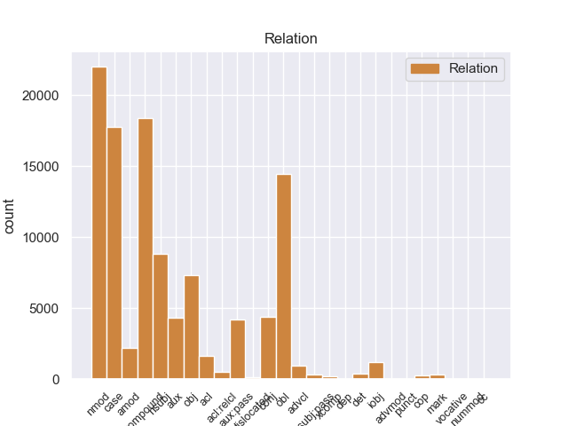
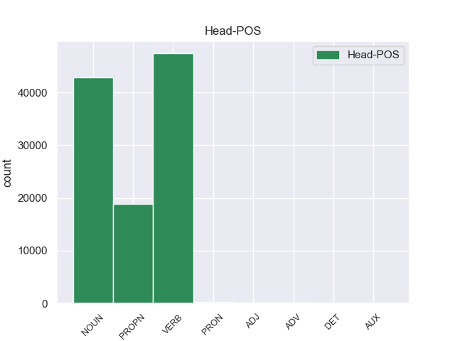
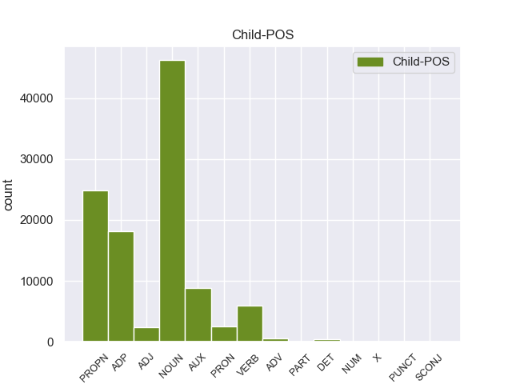

Distribution of features within this leaf



Agreement Rules sorted by frequency.
- When the dependent token is the case marking(case) of the head token, and the head token is NOUN and the dependent token is ADP.
1 इन _ _ _ _ 0 _ _ _
2 दोनों _ _ _ _ 0 _ _ _
3 देशों _ _ _ _ 0 _ _ _
4 के _ _ _ _ 0 _ _ _
5 बीच _ _ _ _ 0 _ _ _
6 रिश्ते _ _ _ _ 0 _ _ _
7 में _ _ _ _ 0 _ _ _
8 सुधार _ _ _ _ 0 _ _ _
9 से _ _ _ _ 0 _ _ _
10 करोड़ों _ _ _ _ 0 _ _ _
11 लोगों लोग NOUN NN Case=Acc|Gender=Masc|Number=Plur|Person=3 0 _ _ _
12 का का ADP PSP AdpType=Post|Case=Nom|Gender=Masc|Number=Sing 11 case _ ChunkId=NP4|ChunkType=child|Translit=kā
13 भला _ _ _ _ 0 _ _ _
14 होगा _ _ _ _ 0 _ _ _
15 । _ _ _ _ 0 _ _ _
1 उन्होंने _ _ _ _ 0 _ _ _
2 यहां _ _ _ _ 0 _ _ _
3 वेटिकन _ _ _ _ 0 _ _ _
4 दूतावास _ _ _ _ 0 _ _ _
5 में _ _ _ _ 0 _ _ _
6 एक _ _ _ _ 0 _ _ _
7 शोक _ _ _ _ 0 _ _ _
8 पुस्तिका _ _ _ _ 0 _ _ _
9 पर _ _ _ _ 0 _ _ _
10 हस्ताक्षर _ _ _ _ 0 _ _ _
11 कर _ _ _ _ 0 _ _ _
12 पोप _ _ _ _ 0 _ _ _
13 जॉन _ _ _ _ 0 _ _ _
14 पॉल पॉल PROPN NNPC Case=Nom|Gender=Masc|Number=Sing|Person=3 15 compound _ ChunkId=NP6|ChunkType=child|Tam=0|Translit=pôla|Vib=0
15 द्वितीय द्वितीय PROPN NNP Case=Acc|Gender=Masc|Number=Sing|Person=3 0 _ _ _
16 के _ _ _ _ 0 _ _ _
17 निधन _ _ _ _ 0 _ _ _
18 पर _ _ _ _ 0 _ _ _
19 गहरा _ _ _ _ 0 _ _ _
20 दुख _ _ _ _ 0 _ _ _
21 प्रकट _ _ _ _ 0 _ _ _
22 किया _ _ _ _ 0 _ _ _
23 । _ _ _ _ 0 _ _ _
1 उन्होंने _ _ _ _ 0 _ _ _
2 यहां _ _ _ _ 0 _ _ _
3 वेटिकन _ _ _ _ 0 _ _ _
4 दूतावास _ _ _ _ 0 _ _ _
5 में _ _ _ _ 0 _ _ _
6 एक _ _ _ _ 0 _ _ _
7 शोक _ _ _ _ 0 _ _ _
8 पुस्तिका _ _ _ _ 0 _ _ _
9 पर _ _ _ _ 0 _ _ _
10 हस्ताक्षर _ _ _ _ 0 _ _ _
11 कर _ _ _ _ 0 _ _ _
12 पोप _ _ _ _ 0 _ _ _
13 जॉन _ _ _ _ 0 _ _ _
14 पॉल _ _ _ _ 0 _ _ _
15 द्वितीय _ _ _ _ 0 _ _ _
16 के _ _ _ _ 0 _ _ _
17 निधन निधन NOUN NN Case=Acc|Gender=Masc|Number=Sing|Person=3 22 obl _ ChunkId=NP7|ChunkType=head|Tam=0|Translit=nidhana|Vib=0_पर
18 पर _ _ _ _ 0 _ _ _
19 गहरा _ _ _ _ 0 _ _ _
20 दुख _ _ _ _ 0 _ _ _
21 प्रकट _ _ _ _ 0 _ _ _
22 किया कर VERB VM Aspect=Perf|Gender=Masc|Number=Sing|VerbForm=Part|Voice=Act 0 _ _ _
23 । _ _ _ _ 0 _ _ _
1 इन _ _ _ _ 0 _ _ _
2 दोनों _ _ _ _ 0 _ _ _
3 देशों _ _ _ _ 0 _ _ _
4 के _ _ _ _ 0 _ _ _
5 बीच _ _ _ _ 0 _ _ _
6 रिश्ते _ _ _ _ 0 _ _ _
7 में _ _ _ _ 0 _ _ _
8 सुधार _ _ _ _ 0 _ _ _
9 से _ _ _ _ 0 _ _ _
10 करोड़ों _ _ _ _ 0 _ _ _
11 लोगों लोग NOUN NN Case=Acc|Gender=Masc|Number=Plur|Person=3 13 nmod _ ChunkId=NP4|ChunkType=head|Tam=0|Translit=logoṁ|Vib=0_का
12 का _ _ _ _ 0 _ _ _
13 भला भला NOUN NN Case=Nom|Gender=Masc|Number=Sing|Person=3 0 _ _ _
14 होगा _ _ _ _ 0 _ _ _
15 । _ _ _ _ 0 _ _ _
1 उन्होंने _ _ _ _ 0 _ _ _
2 कहा _ _ _ _ 0 _ _ _
3 कि _ _ _ _ 0 _ _ _
4 चीन _ _ _ _ 0 _ _ _
5 तिब्बत _ _ _ _ 0 _ _ _
6 को _ _ _ _ 0 _ _ _
7 व्यापक _ _ _ _ 0 _ _ _
8 स्वायत्तता _ _ _ _ 0 _ _ _
9 देकर _ _ _ _ 0 _ _ _
10 इस _ _ _ _ 0 _ _ _
11 समस्या _ _ _ _ 0 _ _ _
12 के _ _ _ _ 0 _ _ _
13 समाधान _ _ _ _ 0 _ _ _
14 का _ _ _ _ 0 _ _ _
15 रास्ता _ _ _ _ 0 _ _ _
16 साफ _ _ _ _ 0 _ _ _
17 कर कर VERB VM Gender=Masc|Number=Sing|Person=3|Voice=Act 0 _ _ _
18 सकता सक AUX VAUX Aspect=Imp|Gender=Masc|Number=Sing|VerbForm=Part 17 aux _ ChunkId=VGF2|ChunkType=child|Tam=wA|Translit=sakatā|Vib=ता
19 है _ _ _ _ 0 _ _ _
20 । _ _ _ _ 0 _ _ _
1 उन्होंने _ _ _ _ 0 _ _ _
2 यह _ _ _ _ 0 _ _ _
3 भी _ _ _ _ 0 _ _ _
4 कहा _ _ _ _ 0 _ _ _
5 कि _ _ _ _ 0 _ _ _
6 अब _ _ _ _ 0 _ _ _
7 चीन _ _ _ _ 0 _ _ _
8 का _ _ _ _ 0 _ _ _
9 हृदय _ _ _ _ 0 _ _ _
10 परिवर्तन _ _ _ _ 0 _ _ _
11 होता हो VERB VM Aspect=Imp|Gender=Masc|Number=Sing|Person=3|VerbForm=Part|Voice=Act 0 _ _ _
12 जा _ _ _ _ 0 _ _ _
13 रहा रह AUX VAUX Aspect=Perf|Gender=Masc|Number=Sing|VerbForm=Part 11 aux:pass _ ChunkId=VGF2|ChunkType=child|Tam=yA|Translit=rahā|Vib=या
14 है _ _ _ _ 0 _ _ _
15 । _ _ _ _ 0 _ _ _
1 इन _ _ _ _ 0 _ _ _
2 दोनों _ _ _ _ 0 _ _ _
3 देशों _ _ _ _ 0 _ _ _
4 के _ _ _ _ 0 _ _ _
5 बीच _ _ _ _ 0 _ _ _
6 रिश्ते _ _ _ _ 0 _ _ _
7 में _ _ _ _ 0 _ _ _
8 सुधार _ _ _ _ 0 _ _ _
9 से _ _ _ _ 0 _ _ _
10 करोड़ों _ _ _ _ 0 _ _ _
11 लोगों _ _ _ _ 0 _ _ _
12 का _ _ _ _ 0 _ _ _
13 भला भला NOUN NN Case=Nom|Gender=Masc|Number=Sing|Person=3 14 nsubj _ ChunkId=NP5|ChunkType=head|Tam=0|Translit=bhalā|Vib=0
14 होगा हो VERB VM Gender=Masc|Mood=Ind|Number=Sing|Person=3|Tense=Fut|VerbForm=Fin|Voice=Act 0 _ _ _
15 । _ _ _ _ 0 _ _ _
1 दलाई _ _ _ _ 0 _ _ _
2 लामा _ _ _ _ 0 _ _ _
3 ने _ _ _ _ 0 _ _ _
4 भारत _ _ _ _ 0 _ _ _
5 और _ _ _ _ 0 _ _ _
6 चीन _ _ _ _ 0 _ _ _
7 के _ _ _ _ 0 _ _ _
8 रिश्ते _ _ _ _ 0 _ _ _
9 में _ _ _ _ 0 _ _ _
10 आ _ _ _ _ 0 _ _ _
11 रहे _ _ _ _ 0 _ _ _
12 सुधार _ _ _ _ 0 _ _ _
13 की _ _ _ _ 0 _ _ _
14 भी _ _ _ _ 0 _ _ _
15 प्रशंसा प्रशंसा NOUN NN Case=Nom|Gender=Fem|Number=Sing|Person=3 16 compound _ ChunkId=NP6|ChunkType=head|Tam=0|Translit=praśaṁsā|Vib=0
16 की कर VERB VM Aspect=Perf|Gender=Fem|Number=Sing|VerbForm=Part|Voice=Act 0 _ _ _
17 । _ _ _ _ 0 _ _ _
1 उन्होंने _ _ _ _ 0 _ _ _
2 यहां _ _ _ _ 0 _ _ _
3 वेटिकन _ _ _ _ 0 _ _ _
4 दूतावास _ _ _ _ 0 _ _ _
5 में _ _ _ _ 0 _ _ _
6 एक _ _ _ _ 0 _ _ _
7 शोक _ _ _ _ 0 _ _ _
8 पुस्तिका _ _ _ _ 0 _ _ _
9 पर _ _ _ _ 0 _ _ _
10 हस्ताक्षर _ _ _ _ 0 _ _ _
11 कर _ _ _ _ 0 _ _ _
12 पोप _ _ _ _ 0 _ _ _
13 जॉन _ _ _ _ 0 _ _ _
14 पॉल _ _ _ _ 0 _ _ _
15 द्वितीय _ _ _ _ 0 _ _ _
16 के _ _ _ _ 0 _ _ _
17 निधन _ _ _ _ 0 _ _ _
18 पर _ _ _ _ 0 _ _ _
19 गहरा _ _ _ _ 0 _ _ _
20 दुख दुख NOUN NN Case=Nom|Gender=Masc|Number=Sing|Person=3 22 obj _ ChunkId=NP8|ChunkType=head|Tam=0|Translit=dukha|Vib=0
21 प्रकट _ _ _ _ 0 _ _ _
22 किया कर VERB VM Aspect=Perf|Gender=Masc|Number=Sing|VerbForm=Part|Voice=Act 0 _ _ _
23 । _ _ _ _ 0 _ _ _
1 उन्होंने _ _ _ _ 0 _ _ _
2 यहां _ _ _ _ 0 _ _ _
3 वेटिकन _ _ _ _ 0 _ _ _
4 दूतावास _ _ _ _ 0 _ _ _
5 में _ _ _ _ 0 _ _ _
6 एक _ _ _ _ 0 _ _ _
7 शोक _ _ _ _ 0 _ _ _
8 पुस्तिका _ _ _ _ 0 _ _ _
9 पर _ _ _ _ 0 _ _ _
10 हस्ताक्षर _ _ _ _ 0 _ _ _
11 कर _ _ _ _ 0 _ _ _
12 पोप _ _ _ _ 0 _ _ _
13 जॉन _ _ _ _ 0 _ _ _
14 पॉल _ _ _ _ 0 _ _ _
15 द्वितीय द्वितीय PROPN NNP Case=Acc|Gender=Masc|Number=Sing|Person=3 17 nmod _ ChunkId=NP6|ChunkType=head|Tam=0|Translit=dvitīya|Vib=0_का
16 के _ _ _ _ 0 _ _ _
17 निधन निधन NOUN NN Case=Acc|Gender=Masc|Number=Sing|Person=3 0 _ _ _
18 पर _ _ _ _ 0 _ _ _
19 गहरा _ _ _ _ 0 _ _ _
20 दुख _ _ _ _ 0 _ _ _
21 प्रकट _ _ _ _ 0 _ _ _
22 किया _ _ _ _ 0 _ _ _
23 । _ _ _ _ 0 _ _ _
1 उन्होंने _ _ _ _ 0 _ _ _
2 यहां _ _ _ _ 0 _ _ _
3 वेटिकन _ _ _ _ 0 _ _ _
4 दूतावास _ _ _ _ 0 _ _ _
5 में _ _ _ _ 0 _ _ _
6 एक _ _ _ _ 0 _ _ _
7 शोक _ _ _ _ 0 _ _ _
8 पुस्तिका _ _ _ _ 0 _ _ _
9 पर _ _ _ _ 0 _ _ _
10 हस्ताक्षर _ _ _ _ 0 _ _ _
11 कर _ _ _ _ 0 _ _ _
12 पोप _ _ _ _ 0 _ _ _
13 जॉन _ _ _ _ 0 _ _ _
14 पॉल _ _ _ _ 0 _ _ _
15 द्वितीय द्वितीय PROPN NNP Case=Acc|Gender=Masc|Number=Sing|Person=3 0 _ _ _
16 के का ADP PSP AdpType=Post|Case=Acc|Gender=Masc|Number=Sing 15 case _ ChunkId=NP6|ChunkType=child|Translit=ke
17 निधन _ _ _ _ 0 _ _ _
18 पर _ _ _ _ 0 _ _ _
19 गहरा _ _ _ _ 0 _ _ _
20 दुख _ _ _ _ 0 _ _ _
21 प्रकट _ _ _ _ 0 _ _ _
22 किया _ _ _ _ 0 _ _ _
23 । _ _ _ _ 0 _ _ _
1 उन्होंने _ _ _ _ 0 _ _ _
2 इसे _ _ _ _ 0 _ _ _
3 चीनियों _ _ _ _ 0 _ _ _
4 का _ _ _ _ 0 _ _ _
5 हृदय हृदय NOUN NNC Case=Nom|Gender=Masc|Number=Sing|Person=3 6 compound _ ChunkId=NP4|ChunkType=child|Tam=0|Translit=hr̥daya|Vib=0
6 परिवर्तन परिवर्तन NOUN NN Case=Nom|Gender=Masc|Number=Sing|Person=3 0 _ _ _
7 करार _ _ _ _ 0 _ _ _
8 दिया _ _ _ _ 0 _ _ _
9 । _ _ _ _ 0 _ _ _
1 उन्होंने _ _ _ _ 0 _ _ _
2 कहा _ _ _ _ 0 _ _ _
3 कि _ _ _ _ 0 _ _ _
4 चीन चीन PROPN NNP Case=Nom|Gender=Masc|Number=Sing|Person=3 17 nsubj _ ChunkId=NP2|ChunkType=head|Tam=0|Translit=cīna|Vib=0
5 तिब्बत _ _ _ _ 0 _ _ _
6 को _ _ _ _ 0 _ _ _
7 व्यापक _ _ _ _ 0 _ _ _
8 स्वायत्तता _ _ _ _ 0 _ _ _
9 देकर _ _ _ _ 0 _ _ _
10 इस _ _ _ _ 0 _ _ _
11 समस्या _ _ _ _ 0 _ _ _
12 के _ _ _ _ 0 _ _ _
13 समाधान _ _ _ _ 0 _ _ _
14 का _ _ _ _ 0 _ _ _
15 रास्ता _ _ _ _ 0 _ _ _
16 साफ _ _ _ _ 0 _ _ _
17 कर कर VERB VM Gender=Masc|Number=Sing|Person=3|Voice=Act 0 _ _ _
18 सकता _ _ _ _ 0 _ _ _
19 है _ _ _ _ 0 _ _ _
20 । _ _ _ _ 0 _ _ _
1 मैं _ _ _ _ 0 _ _ _
2 स्पष्ट _ _ _ _ 0 _ _ _
3 कर _ _ _ _ 0 _ _ _
4 देना _ _ _ _ 0 _ _ _
5 चाहता _ _ _ _ 0 _ _ _
6 हूं _ _ _ _ 0 _ _ _
7 कि _ _ _ _ 0 _ _ _
8 मेरा मैं PRON PRP Case=Acc,Gen|Gender=Masc|Number=Sing|Person=1|Poss=Yes|PronType=Prs 9 nmod _ ChunkId=NP2|ChunkType=head|Tam=kA|Translit=merā|Vib=का
9 दृष्टिकोण दृष्टिकोण NOUN NN Case=Nom|Gender=Masc|Number=Sing|Person=3 0 _ _ _
10 अलगाववादी _ _ _ _ 0 _ _ _
11 नहीं _ _ _ _ 0 _ _ _
12 है _ _ _ _ 0 _ _ _
13 । _ _ _ _ 0 _ _ _
1 उन्होंने _ _ _ _ 0 _ _ _
2 यहां _ _ _ _ 0 _ _ _
3 वेटिकन _ _ _ _ 0 _ _ _
4 दूतावास _ _ _ _ 0 _ _ _
5 में _ _ _ _ 0 _ _ _
6 एक _ _ _ _ 0 _ _ _
7 शोक _ _ _ _ 0 _ _ _
8 पुस्तिका _ _ _ _ 0 _ _ _
9 पर _ _ _ _ 0 _ _ _
10 हस्ताक्षर _ _ _ _ 0 _ _ _
11 कर _ _ _ _ 0 _ _ _
12 पोप _ _ _ _ 0 _ _ _
13 जॉन _ _ _ _ 0 _ _ _
14 पॉल _ _ _ _ 0 _ _ _
15 द्वितीय _ _ _ _ 0 _ _ _
16 के _ _ _ _ 0 _ _ _
17 निधन _ _ _ _ 0 _ _ _
18 पर _ _ _ _ 0 _ _ _
19 गहरा गहरा ADJ JJ Case=Nom|Gender=Masc|Number=Sing 20 amod _ ChunkId=NP8|ChunkType=child|Translit=gaharā
20 दुख दुख NOUN NN Case=Nom|Gender=Masc|Number=Sing|Person=3 0 _ _ _
21 प्रकट _ _ _ _ 0 _ _ _
22 किया _ _ _ _ 0 _ _ _
23 । _ _ _ _ 0 _ _ _
1 उन्होंने _ _ _ _ 0 _ _ _
2 यहां _ _ _ _ 0 _ _ _
3 वेटिकन _ _ _ _ 0 _ _ _
4 दूतावास दूतावास PROPN NNP Case=Acc|Gender=Masc|Number=Sing|Person=3 22 obl _ ChunkId=NP3|ChunkType=head|Tam=0|Translit=dūtāvāsa|Vib=0_में
5 में _ _ _ _ 0 _ _ _
6 एक _ _ _ _ 0 _ _ _
7 शोक _ _ _ _ 0 _ _ _
8 पुस्तिका _ _ _ _ 0 _ _ _
9 पर _ _ _ _ 0 _ _ _
10 हस्ताक्षर _ _ _ _ 0 _ _ _
11 कर _ _ _ _ 0 _ _ _
12 पोप _ _ _ _ 0 _ _ _
13 जॉन _ _ _ _ 0 _ _ _
14 पॉल _ _ _ _ 0 _ _ _
15 द्वितीय _ _ _ _ 0 _ _ _
16 के _ _ _ _ 0 _ _ _
17 निधन _ _ _ _ 0 _ _ _
18 पर _ _ _ _ 0 _ _ _
19 गहरा _ _ _ _ 0 _ _ _
20 दुख _ _ _ _ 0 _ _ _
21 प्रकट _ _ _ _ 0 _ _ _
22 किया कर VERB VM Aspect=Perf|Gender=Masc|Number=Sing|VerbForm=Part|Voice=Act 0 _ _ _
23 । _ _ _ _ 0 _ _ _
1 उन्होंने _ _ _ _ 0 _ _ _
2 कहा कह VERB VM Aspect=Perf|Gender=Masc|Number=Sing|VerbForm=Part|Voice=Act 0 _ _ _
3 कि _ _ _ _ 0 _ _ _
4 चीन _ _ _ _ 0 _ _ _
5 तिब्बत _ _ _ _ 0 _ _ _
6 को _ _ _ _ 0 _ _ _
7 व्यापक _ _ _ _ 0 _ _ _
8 स्वायत्तता _ _ _ _ 0 _ _ _
9 देकर _ _ _ _ 0 _ _ _
10 इस _ _ _ _ 0 _ _ _
11 समस्या _ _ _ _ 0 _ _ _
12 के _ _ _ _ 0 _ _ _
13 समाधान _ _ _ _ 0 _ _ _
14 का _ _ _ _ 0 _ _ _
15 रास्ता _ _ _ _ 0 _ _ _
16 साफ _ _ _ _ 0 _ _ _
17 कर कर VERB VM Gender=Masc|Number=Sing|Person=3|Voice=Act 2 obj _ ChunkId=VGF2|ChunkType=head|Stype=declarative|Tam=0|Translit=kara|Vib=0_सक+ता_है
18 सकता _ _ _ _ 0 _ _ _
19 है _ _ _ _ 0 _ _ _
20 । _ _ _ _ 0 _ _ _
1 चीनी _ _ _ _ 0 _ _ _
2 प्रधानमंत्री प्रधानमंत्री PROPN NNP Case=Nom|Gender=Masc|Number=Sing|Person=3 4 nmod _ ChunkId=NP|ChunkType=child|Tam=0|Translit=pradhānamaṁtrī|Vib=0
3 वेन _ _ _ _ 0 _ _ _
4 जियाबाओ जियाबाओ PROPN NNP Case=Acc|Gender=Masc|Number=Sing|Person=3 0 _ _ _
5 की _ _ _ _ 0 _ _ _
6 भारत _ _ _ _ 0 _ _ _
7 यात्रा _ _ _ _ 0 _ _ _
8 से _ _ _ _ 0 _ _ _
9 पहले _ _ _ _ 0 _ _ _
10 निर्वासित _ _ _ _ 0 _ _ _
11 तिब्बती _ _ _ _ 0 _ _ _
12 आध्यात्मिक _ _ _ _ 0 _ _ _
13 नेता _ _ _ _ 0 _ _ _
14 दलाई _ _ _ _ 0 _ _ _
15 लामा _ _ _ _ 0 _ _ _
16 ने _ _ _ _ 0 _ _ _
17 कहा _ _ _ _ 0 _ _ _
18 है _ _ _ _ 0 _ _ _
19 कि _ _ _ _ 0 _ _ _
20 चीनी _ _ _ _ 0 _ _ _
21 और _ _ _ _ 0 _ _ _
22 तिब्बती _ _ _ _ 0 _ _ _
23 एक _ _ _ _ 0 _ _ _
24 - _ _ _ _ 0 _ _ _
25 दूसरे _ _ _ _ 0 _ _ _
26 की _ _ _ _ 0 _ _ _
27 सांस्कृतिक _ _ _ _ 0 _ _ _
28 विशिष्टता _ _ _ _ 0 _ _ _
29 का _ _ _ _ 0 _ _ _
30 आदर _ _ _ _ 0 _ _ _
31 करते _ _ _ _ 0 _ _ _
32 हैं _ _ _ _ 0 _ _ _
33 । _ _ _ _ 0 _ _ _
1 चीनी _ _ _ _ 0 _ _ _
2 प्रधानमंत्री _ _ _ _ 0 _ _ _
3 वेन _ _ _ _ 0 _ _ _
4 जियाबाओ _ _ _ _ 0 _ _ _
5 की _ _ _ _ 0 _ _ _
6 भारत _ _ _ _ 0 _ _ _
7 यात्रा _ _ _ _ 0 _ _ _
8 से _ _ _ _ 0 _ _ _
9 पहले _ _ _ _ 0 _ _ _
10 निर्वासित _ _ _ _ 0 _ _ _
11 तिब्बती _ _ _ _ 0 _ _ _
12 आध्यात्मिक _ _ _ _ 0 _ _ _
13 नेता नेता NOUN NN Case=Acc|Gender=Masc|Number=Sing|Person=3 15 nmod _ ChunkId=NP3|ChunkType=head|Tam=0|Translit=netā|Vib=0
14 दलाई _ _ _ _ 0 _ _ _
15 लामा लामा PROPN NNP Case=Acc|Gender=Masc|Number=Sing|Person=3 0 _ _ _
16 ने _ _ _ _ 0 _ _ _
17 कहा _ _ _ _ 0 _ _ _
18 है _ _ _ _ 0 _ _ _
19 कि _ _ _ _ 0 _ _ _
20 चीनी _ _ _ _ 0 _ _ _
21 और _ _ _ _ 0 _ _ _
22 तिब्बती _ _ _ _ 0 _ _ _
23 एक _ _ _ _ 0 _ _ _
24 - _ _ _ _ 0 _ _ _
25 दूसरे _ _ _ _ 0 _ _ _
26 की _ _ _ _ 0 _ _ _
27 सांस्कृतिक _ _ _ _ 0 _ _ _
28 विशिष्टता _ _ _ _ 0 _ _ _
29 का _ _ _ _ 0 _ _ _
30 आदर _ _ _ _ 0 _ _ _
31 करते _ _ _ _ 0 _ _ _
32 हैं _ _ _ _ 0 _ _ _
33 । _ _ _ _ 0 _ _ _
1 उन्होंने _ _ _ _ 0 _ _ _
2 कहा _ _ _ _ 0 _ _ _
3 कि _ _ _ _ 0 _ _ _
4 भारत भारत PROPN NNP Case=Nom|Gender=Masc|Number=Sing|Person=3 0 _ _ _
5 और _ _ _ _ 0 _ _ _
6 चीन चीन PROPN NNP Case=Nom|Gender=Masc|Number=Sing|Person=3 4 conj _ ChunkId=NP3|ChunkType=head|Tam=0|Translit=cīna|Vib=0
7 सर्वाधिक _ _ _ _ 0 _ _ _
8 आबादी _ _ _ _ 0 _ _ _
9 वाले _ _ _ _ 0 _ _ _
10 देश _ _ _ _ 0 _ _ _
11 हैं _ _ _ _ 0 _ _ _
12 । _ _ _ _ 0 _ _ _
1 वैसे _ _ _ _ 0 _ _ _
2 तुषार _ _ _ _ 0 _ _ _
3 गांधी _ _ _ _ 0 _ _ _
4 को _ _ _ _ 0 _ _ _
5 भी _ _ _ _ 0 _ _ _
6 शुरू _ _ _ _ 0 _ _ _
7 में _ _ _ _ 0 _ _ _
8 इसका _ _ _ _ 0 _ _ _
9 अंदाजा अंदाजा NOUN NN Case=Nom|Gender=Masc|Number=Sing|Person=3 0 _ _ _
10 नहीं _ _ _ _ 0 _ _ _
11 होगा _ _ _ _ 0 _ _ _
12 कि _ _ _ _ 0 _ _ _
13 इस _ _ _ _ 0 _ _ _
14 मार्च _ _ _ _ 0 _ _ _
15 से _ _ _ _ 0 _ _ _
16 कांग्रेसियों _ _ _ _ 0 _ _ _
17 को _ _ _ _ 0 _ _ _
18 राजनीतिक _ _ _ _ 0 _ _ _
19 फायदा _ _ _ _ 0 _ _ _
20 मिलेगा मिल VERB VM Gender=Masc|Mood=Ind|Number=Sing|Person=3|Tense=Fut|VerbForm=Fin|Voice=Act 9 acl _ ChunkId=VGF2|ChunkType=head|Stype=declarative|Tam=gA|Translit=milegā|Vib=गा
21 । _ _ _ _ 0 _ _ _
1 अपने _ _ _ _ 0 _ _ _
2 चार _ _ _ _ 0 _ _ _
3 - _ _ _ _ 0 _ _ _
4 दिवसीय _ _ _ _ 0 _ _ _
5 भारत _ _ _ _ 0 _ _ _
6 दौरे _ _ _ _ 0 _ _ _
7 के _ _ _ _ 0 _ _ _
8 दौरान _ _ _ _ 0 _ _ _
9 वे _ _ _ _ 0 _ _ _
10 भारतीय _ _ _ _ 0 _ _ _
11 नेताओं _ _ _ _ 0 _ _ _
12 से _ _ _ _ 0 _ _ _
13 सीमा _ _ _ _ 0 _ _ _
14 विवाद विवाद NOUN NN Case=Acc|Gender=Masc|Number=Sing|Person=3 0 _ _ _
15 और _ _ _ _ 0 _ _ _
16 अन्य _ _ _ _ 0 _ _ _
17 द्विपक्षीय _ _ _ _ 0 _ _ _
18 मसलों मसला NOUN NN Case=Acc|Gender=Masc|Number=Plur|Person=3 14 conj _ ChunkId=NP6|ChunkType=head|Tam=0|Translit=masaloṁ|Vib=0_पर
19 पर _ _ _ _ 0 _ _ _
20 बातचीत _ _ _ _ 0 _ _ _
21 करेंगे _ _ _ _ 0 _ _ _
22 । _ _ _ _ 0 _ _ _
1 ७० _ _ _ _ 0 _ _ _
2 वर्षीय _ _ _ _ 0 _ _ _
3 इस _ _ _ _ 0 _ _ _
4 अहिंसावादी _ _ _ _ 0 _ _ _
5 तिब्बती _ _ _ _ 0 _ _ _
6 नेता _ _ _ _ 0 _ _ _
7 ने _ _ _ _ 0 _ _ _
8 यह _ _ _ _ 0 _ _ _
9 भी _ _ _ _ 0 _ _ _
10 कहा _ _ _ _ 0 _ _ _
11 कि _ _ _ _ 0 _ _ _
12 वे _ _ _ _ 0 _ _ _
13 चीन _ _ _ _ 0 _ _ _
14 से _ _ _ _ 0 _ _ _
15 अलगाव _ _ _ _ 0 _ _ _
16 की _ _ _ _ 0 _ _ _
17 बात _ _ _ _ 0 _ _ _
18 नहीं _ _ _ _ 0 _ _ _
19 कर कर VERB VM Gender=Masc|Number=Sing|Person=3|Polite=Form|Voice=Act 0 _ _ _
20 रहे _ _ _ _ 0 _ _ _
21 हैं _ _ _ _ 0 _ _ _
22 बल्कि _ _ _ _ 0 _ _ _
23 वे _ _ _ _ 0 _ _ _
24 तो _ _ _ _ 0 _ _ _
25 चीनी _ _ _ _ 0 _ _ _
26 संविधान _ _ _ _ 0 _ _ _
27 के _ _ _ _ 0 _ _ _
28 दायरे _ _ _ _ 0 _ _ _
29 में _ _ _ _ 0 _ _ _
30 ही _ _ _ _ 0 _ _ _
31 तिब्बत _ _ _ _ 0 _ _ _
32 समस्या _ _ _ _ 0 _ _ _
33 का _ _ _ _ 0 _ _ _
34 हल _ _ _ _ 0 _ _ _
35 चाहते चाह VERB VM Aspect=Imp|Gender=Masc|Number=Sing|Person=3|Polite=Form|VerbForm=Part|Voice=Act 19 advcl _ ChunkId=VGF3|ChunkType=head|Stype=declarative|Tam=wA|Translit=cāhate|Vib=ता_है
36 हैं _ _ _ _ 0 _ _ _
37 । _ _ _ _ 0 _ _ _
1 अपने _ _ _ _ 0 _ _ _
2 चार _ _ _ _ 0 _ _ _
3 - _ _ _ _ 0 _ _ _
4 दिवसीय _ _ _ _ 0 _ _ _
5 भारत _ _ _ _ 0 _ _ _
6 दौरे _ _ _ _ 0 _ _ _
7 के _ _ _ _ 0 _ _ _
8 दौरान _ _ _ _ 0 _ _ _
9 वे _ _ _ _ 0 _ _ _
10 भारतीय _ _ _ _ 0 _ _ _
11 नेताओं नेता NOUN NN Case=Acc|Gender=Masc|Number=Plur|Person=3 21 iobj _ ChunkId=NP4|ChunkType=head|Tam=0|Translit=netāoṁ|Vib=0_से
12 से _ _ _ _ 0 _ _ _
13 सीमा _ _ _ _ 0 _ _ _
14 विवाद _ _ _ _ 0 _ _ _
15 और _ _ _ _ 0 _ _ _
16 अन्य _ _ _ _ 0 _ _ _
17 द्विपक्षीय _ _ _ _ 0 _ _ _
18 मसलों _ _ _ _ 0 _ _ _
19 पर _ _ _ _ 0 _ _ _
20 बातचीत _ _ _ _ 0 _ _ _
21 करेंगे कर VERB VM Gender=Masc|Mood=Ind|Number=Sing|Person=3|Polite=Form|Tense=Fut|VerbForm=Fin|Voice=Act 0 _ _ _
22 । _ _ _ _ 0 _ _ _
1 यूं _ _ _ _ 0 _ _ _
2 तो _ _ _ _ 0 _ _ _
3 दलाई _ _ _ _ 0 _ _ _
4 लामा _ _ _ _ 0 _ _ _
5 ने _ _ _ _ 0 _ _ _
6 वेन _ _ _ _ 0 _ _ _
7 जियाबाओ _ _ _ _ 0 _ _ _
8 को _ _ _ _ 0 _ _ _
9 एक _ _ _ _ 0 _ _ _
10 एकाधिकारवादी _ _ _ _ 0 _ _ _
11 देश _ _ _ _ 0 _ _ _
12 का _ _ _ _ 0 _ _ _
13 नेता _ _ _ _ 0 _ _ _
14 करार _ _ _ _ 0 _ _ _
15 दिया दे VERB VM Aspect=Perf|Gender=Masc|Number=Sing|VerbForm=Part|Voice=Act 0 _ _ _
16 , _ _ _ _ 0 _ _ _
17 लेकिन _ _ _ _ 0 _ _ _
18 उन्होंने _ _ _ _ 0 _ _ _
19 जियाबाओ _ _ _ _ 0 _ _ _
20 को _ _ _ _ 0 _ _ _
21 पूर्ववर्ती _ _ _ _ 0 _ _ _
22 चीनी _ _ _ _ 0 _ _ _
23 प्रधानमंत्रियों _ _ _ _ 0 _ _ _
24 की _ _ _ _ 0 _ _ _
25 तुलना _ _ _ _ 0 _ _ _
26 में _ _ _ _ 0 _ _ _
27 अधिक _ _ _ _ 0 _ _ _
28 व्यावहारिक _ _ _ _ 0 _ _ _
29 , _ _ _ _ 0 _ _ _
30 उदार _ _ _ _ 0 _ _ _
31 और _ _ _ _ 0 _ _ _
32 दूरदर्शी _ _ _ _ 0 _ _ _
33 नेता _ _ _ _ 0 _ _ _
34 भी _ _ _ _ 0 _ _ _
35 करार _ _ _ _ 0 _ _ _
36 दिया दे VERB VM Aspect=Perf|Gender=Masc|Number=Sing|VerbForm=Part|Voice=Act 15 conj _ ChunkId=VGF2|ChunkType=head|Stype=declarative|Tam=yA|Translit=diyā|Vib=या
37 । _ _ _ _ 0 _ _ _
1 वोल्कर _ _ _ _ 0 _ _ _
2 ने _ _ _ _ 0 _ _ _
3 कहा _ _ _ _ 0 _ _ _
4 कि _ _ _ _ 0 _ _ _
5 जांच _ _ _ _ 0 _ _ _
6 के _ _ _ _ 0 _ _ _
7 दौरान _ _ _ _ 0 _ _ _
8 किसी _ _ _ _ 0 _ _ _
9 ने _ _ _ _ 0 _ _ _
10 उन्हें _ _ _ _ 0 _ _ _
11 बताया _ _ _ _ 0 _ _ _
12 भी _ _ _ _ 0 _ _ _
13 नहीं _ _ _ _ 0 _ _ _
14 कि _ _ _ _ 0 _ _ _
15 निविदा _ _ _ _ 0 _ _ _
16 की _ _ _ _ 0 _ _ _
17 सारी सारा DET QF Case=Acc|Gender=Fem|Number=Sing 18 det _ ChunkId=NP6|ChunkType=child|Translit=sārī
18 प्रक्रिया प्रक्रिया NOUN NN Case=Acc|Gender=Fem|Number=Sing|Person=3 0 _ _ _
19 पर _ _ _ _ 0 _ _ _
20 किसी _ _ _ _ 0 _ _ _
21 ने _ _ _ _ 0 _ _ _
22 प्रभाव _ _ _ _ 0 _ _ _
23 डालने _ _ _ _ 0 _ _ _
24 की _ _ _ _ 0 _ _ _
25 कोशिश _ _ _ _ 0 _ _ _
26 की _ _ _ _ 0 _ _ _
27 या _ _ _ _ 0 _ _ _
28 इस _ _ _ _ 0 _ _ _
29 पर _ _ _ _ 0 _ _ _
30 विचार _ _ _ _ 0 _ _ _
31 भी _ _ _ _ 0 _ _ _
32 किया _ _ _ _ 0 _ _ _
33 गया _ _ _ _ 0 _ _ _
34 । _ _ _ _ 0 _ _ _
1 खान _ _ _ _ 0 _ _ _
2 के _ _ _ _ 0 _ _ _
3 संदिग्ध _ _ _ _ 0 _ _ _
4 परमाणु _ _ _ _ 0 _ _ _
5 ग्राहकों _ _ _ _ 0 _ _ _
6 की _ _ _ _ 0 _ _ _
7 सूची _ _ _ _ 0 _ _ _
8 को _ _ _ _ 0 _ _ _
9 आश्चर्य _ _ _ _ 0 _ _ _
10 में _ _ _ _ 0 _ _ _
11 डाल _ _ _ _ 0 _ _ _
12 देने _ _ _ _ 0 _ _ _
13 वाली _ _ _ _ 0 _ _ _
14 बताते _ _ _ _ 0 _ _ _
15 हुए _ _ _ _ 0 _ _ _
16 टाईम _ _ _ _ 0 _ _ _
17 पत्रिका _ _ _ _ 0 _ _ _
18 के _ _ _ _ 0 _ _ _
19 हाल _ _ _ _ 0 _ _ _
20 के _ _ _ _ 0 _ _ _
21 अंक _ _ _ _ 0 _ _ _
22 में _ _ _ _ 0 _ _ _
23 कहा _ _ _ _ 0 _ _ _
24 गया _ _ _ _ 0 _ _ _
25 कि _ _ _ _ 0 _ _ _
26 पाकिस्तान _ _ _ _ 0 _ _ _
27 की _ _ _ _ 0 _ _ _
28 परमाणु _ _ _ _ 0 _ _ _
29 शोध _ _ _ _ 0 _ _ _
30 प्रयोगशाला _ _ _ _ 0 _ _ _
31 का _ _ _ _ 0 _ _ _
32 प्रमुख _ _ _ _ 0 _ _ _
33 होने हो VERB VM Case=Acc|Gender=Masc|VerbForm=Inf 0 _ _ _
34 के _ _ _ _ 0 _ _ _
35 नाते नाते ADP PSP Case=Acc|Gender=Masc 33 mark _ ChunkId=VGNN2|ChunkType=child|Translit=nāte
36 खान _ _ _ _ 0 _ _ _
37 ने _ _ _ _ 0 _ _ _
38 एक _ _ _ _ 0 _ _ _
39 दशक _ _ _ _ 0 _ _ _
40 से _ _ _ _ 0 _ _ _
41 भी _ _ _ _ 0 _ _ _
42 अधिक _ _ _ _ 0 _ _ _
43 समय _ _ _ _ 0 _ _ _
44 में _ _ _ _ 0 _ _ _
45 पूरे _ _ _ _ 0 _ _ _
46 विश्व _ _ _ _ 0 _ _ _
47 की _ _ _ _ 0 _ _ _
48 यात्रा _ _ _ _ 0 _ _ _
49 की _ _ _ _ 0 _ _ _
50 । _ _ _ _ 0 _ _ _
1 उन्होंने _ _ _ _ 0 _ _ _
2 यहां _ _ _ _ 0 _ _ _
3 वेटिकन _ _ _ _ 0 _ _ _
4 दूतावास _ _ _ _ 0 _ _ _
5 में _ _ _ _ 0 _ _ _
6 एक _ _ _ _ 0 _ _ _
7 शोक _ _ _ _ 0 _ _ _
8 पुस्तिका _ _ _ _ 0 _ _ _
9 पर _ _ _ _ 0 _ _ _
10 हस्ताक्षर _ _ _ _ 0 _ _ _
11 कर _ _ _ _ 0 _ _ _
12 पोप पोप NOUN NNC Case=Nom|Gender=Masc|Number=Sing|Person=3 15 compound _ ChunkId=NP6|ChunkType=child|Tam=0|Translit=popa|Vib=0
13 जॉन _ _ _ _ 0 _ _ _
14 पॉल _ _ _ _ 0 _ _ _
15 द्वितीय द्वितीय PROPN NNP Case=Acc|Gender=Masc|Number=Sing|Person=3 0 _ _ _
16 के _ _ _ _ 0 _ _ _
17 निधन _ _ _ _ 0 _ _ _
18 पर _ _ _ _ 0 _ _ _
19 गहरा _ _ _ _ 0 _ _ _
20 दुख _ _ _ _ 0 _ _ _
21 प्रकट _ _ _ _ 0 _ _ _
22 किया _ _ _ _ 0 _ _ _
23 । _ _ _ _ 0 _ _ _
1 ७० _ _ _ _ 0 _ _ _
2 वर्षीय _ _ _ _ 0 _ _ _
3 इस _ _ _ _ 0 _ _ _
4 अहिंसावादी _ _ _ _ 0 _ _ _
5 तिब्बती _ _ _ _ 0 _ _ _
6 नेता _ _ _ _ 0 _ _ _
7 ने _ _ _ _ 0 _ _ _
8 यह _ _ _ _ 0 _ _ _
9 भी _ _ _ _ 0 _ _ _
10 कहा _ _ _ _ 0 _ _ _
11 कि _ _ _ _ 0 _ _ _
12 वे _ _ _ _ 0 _ _ _
13 चीन चीन PROPN NNP Case=Acc|Gender=Masc|Number=Sing|Person=3 19 obj _ ChunkId=NP4|ChunkType=head|Tam=0|Translit=cīna|Vib=0_से
14 से _ _ _ _ 0 _ _ _
15 अलगाव _ _ _ _ 0 _ _ _
16 की _ _ _ _ 0 _ _ _
17 बात _ _ _ _ 0 _ _ _
18 नहीं _ _ _ _ 0 _ _ _
19 कर कर VERB VM Gender=Masc|Number=Sing|Person=3|Polite=Form|Voice=Act 0 _ _ _
20 रहे _ _ _ _ 0 _ _ _
21 हैं _ _ _ _ 0 _ _ _
22 बल्कि _ _ _ _ 0 _ _ _
23 वे _ _ _ _ 0 _ _ _
24 तो _ _ _ _ 0 _ _ _
25 चीनी _ _ _ _ 0 _ _ _
26 संविधान _ _ _ _ 0 _ _ _
27 के _ _ _ _ 0 _ _ _
28 दायरे _ _ _ _ 0 _ _ _
29 में _ _ _ _ 0 _ _ _
30 ही _ _ _ _ 0 _ _ _
31 तिब्बत _ _ _ _ 0 _ _ _
32 समस्या _ _ _ _ 0 _ _ _
33 का _ _ _ _ 0 _ _ _
34 हल _ _ _ _ 0 _ _ _
35 चाहते _ _ _ _ 0 _ _ _
36 हैं _ _ _ _ 0 _ _ _
37 । _ _ _ _ 0 _ _ _
1 उन्होंने _ _ _ _ 0 _ _ _
2 आरएसएस _ _ _ _ 0 _ _ _
3 कार्य _ _ _ _ 0 _ _ _
4 - _ _ _ _ 0 _ _ _
5 कर्ताओं _ _ _ _ 0 _ _ _
6 को _ _ _ _ 0 _ _ _
7 उन _ _ _ _ 0 _ _ _
8 ' _ _ _ _ 0 _ _ _
9 वोट _ _ _ _ 0 _ _ _
10 - _ _ _ _ 0 _ _ _
11 भूखे _ _ _ _ 0 _ _ _
12 ' _ _ _ _ 0 _ _ _
13 नेताओं नेता NOUN NN Case=Acc|Gender=Masc|Number=Plur|Person=3 0 _ _ _
14 से _ _ _ _ 0 _ _ _
15 चौकस _ _ _ _ 0 _ _ _
16 रहने _ _ _ _ 0 _ _ _
17 का _ _ _ _ 0 _ _ _
18 उपदेश _ _ _ _ 0 _ _ _
19 दिया _ _ _ _ 0 _ _ _
20 , _ _ _ _ 0 _ _ _
21 जो _ _ _ _ 0 _ _ _
22 पूरे _ _ _ _ 0 _ _ _
23 देश _ _ _ _ 0 _ _ _
24 को _ _ _ _ 0 _ _ _
25 कुछ _ _ _ _ 0 _ _ _
26 नहीं _ _ _ _ 0 _ _ _
27 समझते समझ VERB VM Aspect=Imp|Gender=Masc|Number=Plur|Person=3|VerbForm=Part|Voice=Act 13 acl:relcl _ ChunkId=VGF2|ChunkType=head|Stype=declarative|Tam=wA|Translit=samajhate|Vib=ता_है
28 हैं _ _ _ _ 0 _ _ _
29 । _ _ _ _ 0 _ _ _
1 यूं _ _ _ _ 0 _ _ _
2 तो _ _ _ _ 0 _ _ _
3 दलाई _ _ _ _ 0 _ _ _
4 लामा _ _ _ _ 0 _ _ _
5 ने _ _ _ _ 0 _ _ _
6 वेन _ _ _ _ 0 _ _ _
7 जियाबाओ _ _ _ _ 0 _ _ _
8 को _ _ _ _ 0 _ _ _
9 एक _ _ _ _ 0 _ _ _
10 एकाधिकारवादी _ _ _ _ 0 _ _ _
11 देश _ _ _ _ 0 _ _ _
12 का _ _ _ _ 0 _ _ _
13 नेता _ _ _ _ 0 _ _ _
14 करार _ _ _ _ 0 _ _ _
15 दिया _ _ _ _ 0 _ _ _
16 , _ _ _ _ 0 _ _ _
17 लेकिन _ _ _ _ 0 _ _ _
18 उन्होंने _ _ _ _ 0 _ _ _
19 जियाबाओ जियाबाओ PROPN NNP Case=Acc|Gender=Masc|Number=Sing|Person=3 36 iobj _ ChunkId=NP7|ChunkType=head|Tam=0|Translit=jiyābāo|Vib=0_को
20 को _ _ _ _ 0 _ _ _
21 पूर्ववर्ती _ _ _ _ 0 _ _ _
22 चीनी _ _ _ _ 0 _ _ _
23 प्रधानमंत्रियों _ _ _ _ 0 _ _ _
24 की _ _ _ _ 0 _ _ _
25 तुलना _ _ _ _ 0 _ _ _
26 में _ _ _ _ 0 _ _ _
27 अधिक _ _ _ _ 0 _ _ _
28 व्यावहारिक _ _ _ _ 0 _ _ _
29 , _ _ _ _ 0 _ _ _
30 उदार _ _ _ _ 0 _ _ _
31 और _ _ _ _ 0 _ _ _
32 दूरदर्शी _ _ _ _ 0 _ _ _
33 नेता _ _ _ _ 0 _ _ _
34 भी _ _ _ _ 0 _ _ _
35 करार _ _ _ _ 0 _ _ _
36 दिया दे VERB VM Aspect=Perf|Gender=Masc|Number=Sing|VerbForm=Part|Voice=Act 0 _ _ _
37 । _ _ _ _ 0 _ _ _
1 इस _ _ _ _ 0 _ _ _
2 दौरान दौरान ADV NST AdpType=Post|Case=Nom|Gender=Masc|Number=Sing|Person=3 11 obl _ AltTag=ADV-NOUN|ChunkId=NP|ChunkType=head|Translit=daurāna
3 वे _ _ _ _ 0 _ _ _
4 अफ्रीका _ _ _ _ 0 _ _ _
5 , _ _ _ _ 0 _ _ _
6 मध्य _ _ _ _ 0 _ _ _
7 एशिया _ _ _ _ 0 _ _ _
8 और _ _ _ _ 0 _ _ _
9 मध्य _ _ _ _ 0 _ _ _
10 पूर्व _ _ _ _ 0 _ _ _
11 गए जा VERB VM Aspect=Perf|Gender=Masc|Number=Sing|Person=3|Polite=Form|VerbForm=Part|Voice=Act 0 _ _ _
12 । _ _ _ _ 0 _ _ _
1 हमें _ _ _ _ 0 _ _ _
2 एक _ _ _ _ 0 _ _ _
3 दूसरे दूसरा PRON PRP Case=Acc|Gender=Masc|Number=Sing|Person=3|PronType=Prs 0 _ _ _
4 का का ADP PSP AdpType=Post|Case=Nom|Gender=Masc|Number=Sing 3 case _ ChunkId=NP2|ChunkType=child|Translit=kā
5 भरोसा _ _ _ _ 0 _ _ _
6 जीतने _ _ _ _ 0 _ _ _
7 के _ _ _ _ 0 _ _ _
8 प्रयास _ _ _ _ 0 _ _ _
9 करने _ _ _ _ 0 _ _ _
10 चाहिए _ _ _ _ 0 _ _ _
11 । _ _ _ _ 0 _ _ _
1 यद्यपि _ _ _ _ 0 _ _ _
2 उन्हें _ _ _ _ 0 _ _ _
3 इस _ _ _ _ 0 _ _ _
4 बात _ _ _ _ 0 _ _ _
5 पर _ _ _ _ 0 _ _ _
6 शक़ शक NOUN NN Case=Nom|Gender=Masc|Number=Sing|Person=3 0 _ _ _
7 था था AUX VM Gender=Masc|Mood=Ind|Number=Sing|Tense=Past|VerbForm=Fin|Voice=Act 6 cop _ ChunkId=VGF|ChunkType=head|Stype=declarative|Tam=WA|Translit=thā|Vib=था
8 कि _ _ _ _ 0 _ _ _
9 अन्नान _ _ _ _ 0 _ _ _
10 ' _ _ _ _ 0 _ _ _
11 कोटेसना _ _ _ _ 0 _ _ _
12 ' _ _ _ _ 0 _ _ _
13 की _ _ _ _ 0 _ _ _
14 निविदा _ _ _ _ 0 _ _ _
15 के _ _ _ _ 0 _ _ _
16 बारे _ _ _ _ 0 _ _ _
17 में _ _ _ _ 0 _ _ _
18 वाकई _ _ _ _ 0 _ _ _
19 नहीं _ _ _ _ 0 _ _ _
20 जानते _ _ _ _ 0 _ _ _
21 लेकिन _ _ _ _ 0 _ _ _
22 वोल्कर _ _ _ _ 0 _ _ _
23 इस _ _ _ _ 0 _ _ _
24 बात _ _ _ _ 0 _ _ _
25 से _ _ _ _ 0 _ _ _
26 सहमत _ _ _ _ 0 _ _ _
27 थे _ _ _ _ 0 _ _ _
28 कि _ _ _ _ 0 _ _ _
29 अन्नान _ _ _ _ 0 _ _ _
30 ने _ _ _ _ 0 _ _ _
31 कोटेसना _ _ _ _ 0 _ _ _
32 की _ _ _ _ 0 _ _ _
33 निविदा _ _ _ _ 0 _ _ _
34 पास _ _ _ _ 0 _ _ _
35 कराने _ _ _ _ 0 _ _ _
36 के _ _ _ _ 0 _ _ _
37 लिए _ _ _ _ 0 _ _ _
38 किसी _ _ _ _ 0 _ _ _
39 प्रभाव _ _ _ _ 0 _ _ _
40 का _ _ _ _ 0 _ _ _
41 इस्तेमाल _ _ _ _ 0 _ _ _
42 नहीं _ _ _ _ 0 _ _ _
43 किया _ _ _ _ 0 _ _ _
44 । _ _ _ _ 0 _ _ _
1 सामान्य _ _ _ _ 0 _ _ _
2 शयनयान _ _ _ _ 0 _ _ _
3 श्रेणी _ _ _ _ 0 _ _ _
4 के _ _ _ _ 0 _ _ _
5 डिब्बों _ _ _ _ 0 _ _ _
6 वाली _ _ _ _ 0 _ _ _
7 यह _ _ _ _ 0 _ _ _
8 टूरिस्ट _ _ _ _ 0 _ _ _
9 स्पेशल _ _ _ _ 0 _ _ _
10 ट्रेन ट्रेन NOUN NN Case=Nom|Gender=Fem|Number=Sing|Person=3 19 nsubj:pass _ ChunkId=NP3|ChunkType=head|Tam=0|Translit=ṭrena|Vib=0
11 ' _ _ _ _ 0 _ _ _
12 पैलेस _ _ _ _ 0 _ _ _
13 ऑन _ _ _ _ 0 _ _ _
14 व्हील्स _ _ _ _ 0 _ _ _
15 ' _ _ _ _ 0 _ _ _
16 की _ _ _ _ 0 _ _ _
17 तरह _ _ _ _ 0 _ _ _
18 ही _ _ _ _ 0 _ _ _
19 चलाई चला VERB VM Aspect=Perf|Gender=Fem|Number=Sing|Person=3|VerbForm=Part|Voice=Pass 0 _ _ _
20 जाएगी _ _ _ _ 0 _ _ _
21 । _ _ _ _ 0 _ _ _
1 इसके _ _ _ _ 0 _ _ _
2 आगे _ _ _ _ 0 _ _ _
3 इसी _ _ _ _ 0 _ _ _
4 तरह _ _ _ _ 0 _ _ _
5 की _ _ _ _ 0 _ _ _
6 कुछ _ _ _ _ 0 _ _ _
7 और _ _ _ _ 0 _ _ _
8 बातें बात NOUN NN Case=Nom|Gender=Fem|Number=Plur|Person=3 10 nsubj _ ChunkId=NP3|ChunkType=head|Tam=0|Translit=bāteṁ|Vib=0
9 उसी _ _ _ _ 0 _ _ _
10 भाषा भाषा NOUN NN Case=Acc|Gender=Fem|Number=Sing|Person=3 0 _ _ _
11 में _ _ _ _ 0 _ _ _
12 थीं _ _ _ _ 0 _ _ _
13 । _ _ _ _ 0 _ _ _
1 उन्होंने _ _ _ _ 0 _ _ _
2 कहा _ _ _ _ 0 _ _ _
3 कि _ _ _ _ 0 _ _ _
4 इसके यह PRON PRP Case=Acc,Gen|Gender=Masc|Number=Sing|Person=3|Poss=Yes|PronType=Prs 18 obl _ ChunkId=NP2|ChunkType=head|Tam=ke|Translit=isake|Vib=0_अलावा
5 अलावा _ _ _ _ 0 _ _ _
6 कृषि _ _ _ _ 0 _ _ _
7 , _ _ _ _ 0 _ _ _
8 वन _ _ _ _ 0 _ _ _
9 एवं _ _ _ _ 0 _ _ _
10 मत्स्य _ _ _ _ 0 _ _ _
11 मंत्री _ _ _ _ 0 _ _ _
12 ताकायोशी _ _ _ _ 0 _ _ _
13 तसुदेना _ _ _ _ 0 _ _ _
14 भी _ _ _ _ 0 _ _ _
15 अगले _ _ _ _ 0 _ _ _
16 साल _ _ _ _ 0 _ _ _
17 भारत _ _ _ _ 0 _ _ _
18 आएंगे आ VERB VM Gender=Masc|Mood=Ind|Number=Sing|Person=3|Polite=Form|Tense=Fut|VerbForm=Fin|Voice=Act 0 _ _ _
19 । _ _ _ _ 0 _ _ _
1 पर्यवेक्षकों _ _ _ _ 0 _ _ _
2 का _ _ _ _ 0 _ _ _
3 कहना _ _ _ _ 0 _ _ _
4 है _ _ _ _ 0 _ _ _
5 कि _ _ _ _ 0 _ _ _
6 इस _ _ _ _ 0 _ _ _
7 मार्च _ _ _ _ 0 _ _ _
8 के _ _ _ _ 0 _ _ _
9 दौरान _ _ _ _ 0 _ _ _
10 कांग्रेसियों _ _ _ _ 0 _ _ _
11 ने _ _ _ _ 0 _ _ _
12 भाजपा _ _ _ _ 0 _ _ _
13 का _ _ _ _ 0 _ _ _
14 जिक्र _ _ _ _ 0 _ _ _
15 करने _ _ _ _ 0 _ _ _
16 से _ _ _ _ 0 _ _ _
17 परहेज _ _ _ _ 0 _ _ _
18 कर _ _ _ _ 0 _ _ _
19 लोगों _ _ _ _ 0 _ _ _
20 में _ _ _ _ 0 _ _ _
21 यह _ _ _ _ 0 _ _ _
22 संदेश _ _ _ _ 0 _ _ _
23 दिया _ _ _ _ 0 _ _ _
24 कि _ _ _ _ 0 _ _ _
25 वह _ _ _ _ 0 _ _ _
26 गांधीवादी _ _ _ _ 0 _ _ _
27 विरासत _ _ _ _ 0 _ _ _
28 को _ _ _ _ 0 _ _ _
29 लेकर _ _ _ _ 0 _ _ _
30 भाजपा भाजपा PROPN NNP Case=Acc|Gender=Fem|Number=Sing|Person=3 0 _ _ _
31 या _ _ _ _ 0 _ _ _
32 किसी _ _ _ _ 0 _ _ _
33 अन्य _ _ _ _ 0 _ _ _
34 पार्टी पार्टी NOUN NN Case=Acc|Gender=Fem|Number=Sing|Person=3 30 conj _ ChunkId=NP12|ChunkType=head|Tam=0|Translit=pārṭī|Vib=0_से
35 से _ _ _ _ 0 _ _ _
36 टकराव _ _ _ _ 0 _ _ _
37 नहीं _ _ _ _ 0 _ _ _
38 चाहती _ _ _ _ 0 _ _ _
39 है _ _ _ _ 0 _ _ _
40 । _ _ _ _ 0 _ _ _
1 ग्रामीण _ _ _ _ 0 _ _ _
2 ज्ञान _ _ _ _ 0 _ _ _
3 केंद्र _ _ _ _ 0 _ _ _
4 को _ _ _ _ 0 _ _ _
5 उन्होंने _ _ _ _ 0 _ _ _
6 रोजगार _ _ _ _ 0 _ _ _
7 का _ _ _ _ 0 _ _ _
8 एक _ _ _ _ 0 _ _ _
9 अन्य _ _ _ _ 0 _ _ _
10 स्त्रोत स्त्रोत NOUN NN Case=Nom|Gender=Masc|Number=Sing|Person=3 11 acl _ ChunkId=NP4|ChunkType=head|Tam=0|Translit=strota|Vib=0
11 बताया बता VERB VM Aspect=Perf|Gender=Masc|Number=Sing|VerbForm=Part|Voice=Act 0 _ _ _
12 । _ _ _ _ 0 _ _ _
1 पासवान _ _ _ _ 0 _ _ _
2 ने _ _ _ _ 0 _ _ _
3 बृहस्पतिवार _ _ _ _ 0 _ _ _
4 को _ _ _ _ 0 _ _ _
5 उनके _ _ _ _ 0 _ _ _
6 कमांडो _ _ _ _ 0 _ _ _
7 वापस _ _ _ _ 0 _ _ _
8 लेने _ _ _ _ 0 _ _ _
9 के _ _ _ _ 0 _ _ _
10 राज्य _ _ _ _ 0 _ _ _
11 प्रशासन _ _ _ _ 0 _ _ _
12 के _ _ _ _ 0 _ _ _
13 प्रस्ताव _ _ _ _ 0 _ _ _
14 पर _ _ _ _ 0 _ _ _
15 कड़ी _ _ _ _ 0 _ _ _
16 नाराजगी नाराजगी NOUN NN Case=Nom|Gender=Fem|Number=Sing|Person=3 17 xcomp _ ChunkId=NP7|ChunkType=head|Tam=0|Translit=nārājagī|Vib=0
17 जताई जता VERB VM Aspect=Perf|Gender=Fem|Number=Sing|VerbForm=Part|Voice=Act 0 _ _ _
18 थी _ _ _ _ 0 _ _ _
19 और _ _ _ _ 0 _ _ _
20 चुनावों _ _ _ _ 0 _ _ _
21 में _ _ _ _ 0 _ _ _
22 डीजीपी _ _ _ _ 0 _ _ _
23 की _ _ _ _ 0 _ _ _
24 भूमिका _ _ _ _ 0 _ _ _
25 संदिग्ध _ _ _ _ 0 _ _ _
26 होने _ _ _ _ 0 _ _ _
27 का _ _ _ _ 0 _ _ _
28 आरोप _ _ _ _ 0 _ _ _
29 लगाया _ _ _ _ 0 _ _ _
30 था _ _ _ _ 0 _ _ _
31 । _ _ _ _ 0 _ _ _
1 उन्होंने _ _ _ _ 0 _ _ _
2 कहा _ _ _ _ 0 _ _ _
3 कि _ _ _ _ 0 _ _ _
4 भारत भारत PROPN NNP Case=Nom|Gender=Masc|Number=Sing|Person=3 10 nsubj _ ChunkId=NP2|ChunkType=head|Tam=0|Translit=bhārata|Vib=0
5 और _ _ _ _ 0 _ _ _
6 चीन _ _ _ _ 0 _ _ _
7 सर्वाधिक _ _ _ _ 0 _ _ _
8 आबादी _ _ _ _ 0 _ _ _
9 वाले _ _ _ _ 0 _ _ _
10 देश देश NOUN NN Case=Nom|Gender=Masc|Number=Plur|Person=3 0 _ _ _
11 हैं _ _ _ _ 0 _ _ _
12 । _ _ _ _ 0 _ _ _
1 अब _ _ _ _ 0 _ _ _
2 जनसंपर्क _ _ _ _ 0 _ _ _
3 का _ _ _ _ 0 _ _ _
4 हमारा _ _ _ _ 0 _ _ _
5 अनुभव _ _ _ _ 0 _ _ _
6 भी _ _ _ _ 0 _ _ _
7 गहरा गहरा ADJ JJ Gender=Masc|Number=Sing 8 compound _ ChunkId=JJP|ChunkType=head|Translit=gaharā
8 हो हो VERB VM Gender=Masc|Number=Sing|Person=3|Voice=Act 0 _ _ _
9 गया _ _ _ _ 0 _ _ _
10 है _ _ _ _ 0 _ _ _
11 । _ _ _ _ 0 _ _ _
1 बिहार _ _ _ _ 0 _ _ _
2 के _ _ _ _ 0 _ _ _
3 पुलिस _ _ _ _ 0 _ _ _
4 प्रमुख _ _ _ _ 0 _ _ _
5 आशीष _ _ _ _ 0 _ _ _
6 रंजन _ _ _ _ 0 _ _ _
7 सिन्हा _ _ _ _ 0 _ _ _
8 ने _ _ _ _ 0 _ _ _
9 शुक्रवार _ _ _ _ 0 _ _ _
10 को _ _ _ _ 0 _ _ _
11 कहा _ _ _ _ 0 _ _ _
12 कि _ _ _ _ 0 _ _ _
13 लोजपा _ _ _ _ 0 _ _ _
14 प्रमुख प्रमुख NOUN NN Case=Acc|Gender=Masc|Number=Sing|Person=3 0 _ _ _
15 और _ _ _ _ 0 _ _ _
16 केंद्रीय _ _ _ _ 0 _ _ _
17 मंत्री मंत्री PROPN NNP Case=Acc|Gender=Masc|Number=Sing|Person=3 14 conj _ ChunkId=NP6|ChunkType=head|Tam=0|Translit=maṁtrī|Vib=0
18 राम _ _ _ _ 0 _ _ _
19 विलास _ _ _ _ 0 _ _ _
20 पासवान _ _ _ _ 0 _ _ _
21 को _ _ _ _ 0 _ _ _
22 जेड _ _ _ _ 0 _ _ _
23 श्रेणी _ _ _ _ 0 _ _ _
24 की _ _ _ _ 0 _ _ _
25 सुरक्षा _ _ _ _ 0 _ _ _
26 के _ _ _ _ 0 _ _ _
27 तहत _ _ _ _ 0 _ _ _
28 दी _ _ _ _ 0 _ _ _
29 गई _ _ _ _ 0 _ _ _
30 बिहार _ _ _ _ 0 _ _ _
31 पुलिस _ _ _ _ 0 _ _ _
32 कमांडो _ _ _ _ 0 _ _ _
33 की _ _ _ _ 0 _ _ _
34 सेवा _ _ _ _ 0 _ _ _
35 वापस _ _ _ _ 0 _ _ _
36 नहीं _ _ _ _ 0 _ _ _
37 ली _ _ _ _ 0 _ _ _
38 जाएगी _ _ _ _ 0 _ _ _
39 । _ _ _ _ 0 _ _ _
1 खराब _ _ _ _ 0 _ _ _
2 प्रदर्शन _ _ _ _ 0 _ _ _
3 के _ _ _ _ 0 _ _ _
4 कारण _ _ _ _ 0 _ _ _
5 टेस्ट _ _ _ _ 0 _ _ _
6 टीम _ _ _ _ 0 _ _ _
7 से _ _ _ _ 0 _ _ _
8 हटाए हटा VERB VM Aspect=Perf|Gender=Masc|Number=Sing|Person=3|Polite=Form|VerbForm=Part 11 acl _ ChunkId=VGNF|ChunkType=head|Tam=yA|Translit=haṭāe|Vib=या_जा+या१
9 गए _ _ _ _ 0 _ _ _
10 युवराज _ _ _ _ 0 _ _ _
11 सिंह सिंह PROPN NNP Case=Acc|Gender=Masc|Number=Sing|Person=3 0 _ _ _
12 की _ _ _ _ 0 _ _ _
13 वापसी _ _ _ _ 0 _ _ _
14 हुई _ _ _ _ 0 _ _ _
15 है _ _ _ _ 0 _ _ _
16 । _ _ _ _ 0 _ _ _
1 पत्रिका _ _ _ _ 0 _ _ _
2 के _ _ _ _ 0 _ _ _
3 अनुसार _ _ _ _ 0 _ _ _
4 खान _ _ _ _ 0 _ _ _
5 की _ _ _ _ 0 _ _ _
6 इन _ _ _ _ 0 _ _ _
7 यात्राओं _ _ _ _ 0 _ _ _
8 का _ _ _ _ 0 _ _ _
9 उद्देश्य _ _ _ _ 0 _ _ _
10 अभी _ _ _ _ 0 _ _ _
11 तक _ _ _ _ 0 _ _ _
12 स्पष्ट _ _ _ _ 0 _ _ _
13 नहीं _ _ _ _ 0 _ _ _
14 है _ _ _ _ 0 _ _ _
15 , _ _ _ _ 0 _ _ _
16 लेकिन _ _ _ _ 0 _ _ _
17 खुफिया _ _ _ _ 0 _ _ _
18 अधिकारियों _ _ _ _ 0 _ _ _
19 का _ _ _ _ 0 _ _ _
20 मानना _ _ _ _ 0 _ _ _
21 है _ _ _ _ 0 _ _ _
22 कि _ _ _ _ 0 _ _ _
23 सऊदी _ _ _ _ 0 _ _ _
24 अरब _ _ _ _ 0 _ _ _
25 और _ _ _ _ 0 _ _ _
26 मिस्र _ _ _ _ 0 _ _ _
27 परमाणु _ _ _ _ 0 _ _ _
28 तक़नीक _ _ _ _ 0 _ _ _
29 की _ _ _ _ 0 _ _ _
30 तलाश _ _ _ _ 0 _ _ _
31 में _ _ _ _ 0 _ _ _
32 हैं _ _ _ _ 0 _ _ _
33 और _ _ _ _ 0 _ _ _
34 कई _ _ _ _ 0 _ _ _
35 अफ्रीकी _ _ _ _ 0 _ _ _
36 देश _ _ _ _ 0 _ _ _
37 कच्चे कच्चा ADJ JJ Case=Nom|Gender=Masc|Number=Sing 38 amod _ ChunkId=NP12|ChunkType=child|Translit=kacce
38 यूरेनियम यूरेनियम PROPN NNP Case=Nom|Gender=Masc|Number=Sing|Person=3 0 _ _ _
39 संपन्न _ _ _ _ 0 _ _ _
40 हैं _ _ _ _ 0 _ _ _
41 । _ _ _ _ 0 _ _ _
1 ब्रिटेन _ _ _ _ 0 _ _ _
2 के _ _ _ _ 0 _ _ _
3 प्रधानमंत्री _ _ _ _ 0 _ _ _
4 टोनी _ _ _ _ 0 _ _ _
5 ब्लेयर _ _ _ _ 0 _ _ _
6 इस _ _ _ _ 0 _ _ _
7 घटना _ _ _ _ 0 _ _ _
8 से _ _ _ _ 0 _ _ _
9 पहले _ _ _ _ 0 _ _ _
10 सबसे _ _ _ _ 0 _ _ _
11 लोकप्रिय _ _ _ _ 0 _ _ _
12 नेता नेता NOUN NN Case=Nom|Gender=Masc|Number=Sing|Person=3 0 _ _ _
13 थे _ _ _ _ 0 _ _ _
14 , _ _ _ _ 0 _ _ _
15 पर _ _ _ _ 0 _ _ _
16 अब _ _ _ _ 0 _ _ _
17 सबसे _ _ _ _ 0 _ _ _
18 अलोकप्रिय _ _ _ _ 0 _ _ _
19 बन बन VERB VM Gender=Masc|Number=Sing|Person=3|Polite=Form|Voice=Act 12 conj _ ChunkId=VGF2|ChunkType=head|Stype=declarative|Tam=0|Translit=bana|Vib=0_जा+या१_है
20 गए _ _ _ _ 0 _ _ _
21 हैं _ _ _ _ 0 _ _ _
22 । _ _ _ _ 0 _ _ _
1 उल्लेखनीय _ _ _ _ 0 _ _ _
2 है _ _ _ _ 0 _ _ _
3 कि _ _ _ _ 0 _ _ _
4 विनिवेश _ _ _ _ 0 _ _ _
5 मंत्रालय मंत्रालय PROPN NNP Case=Acc|Gender=Masc|Number=Sing|Person=3 8 nsubj:pass _ ChunkId=NP|ChunkType=head|Tam=0|Translit=maṁtrālaya|Vib=0_द्वारा
6 द्वारा _ _ _ _ 0 _ _ _
7 नियुक्त _ _ _ _ 0 _ _ _
8 किए कर VERB VM Aspect=Perf|Gender=Masc|Number=Sing|VerbForm=Part 0 _ _ _
9 गए _ _ _ _ 0 _ _ _
10 विनिवेश _ _ _ _ 0 _ _ _
11 आयोग _ _ _ _ 0 _ _ _
12 ने _ _ _ _ 0 _ _ _
13 दिसंबर _ _ _ _ 0 _ _ _
14 1997 _ _ _ _ 0 _ _ _
15 में _ _ _ _ 0 _ _ _
16 एअर _ _ _ _ 0 _ _ _
17 इंडिया _ _ _ _ 0 _ _ _
18 के _ _ _ _ 0 _ _ _
19 मुंबई _ _ _ _ 0 _ _ _
20 स्थित _ _ _ _ 0 _ _ _
21 दो _ _ _ _ 0 _ _ _
22 होटलों _ _ _ _ 0 _ _ _
23 जुहू _ _ _ _ 0 _ _ _
24 सेंटॉर _ _ _ _ 0 _ _ _
25 और _ _ _ _ 0 _ _ _
26 एअरपोर्ट _ _ _ _ 0 _ _ _
27 सेंटॉर _ _ _ _ 0 _ _ _
28 को _ _ _ _ 0 _ _ _
29 बेचने _ _ _ _ 0 _ _ _
30 की _ _ _ _ 0 _ _ _
31 सिफारिश _ _ _ _ 0 _ _ _
32 की _ _ _ _ 0 _ _ _
33 थी _ _ _ _ 0 _ _ _
34 , _ _ _ _ 0 _ _ _
35 जिसे _ _ _ _ 0 _ _ _
36 एअर _ _ _ _ 0 _ _ _
37 इंडिया _ _ _ _ 0 _ _ _
38 द्वारा _ _ _ _ 0 _ _ _
39 जुलाई _ _ _ _ 0 _ _ _
40 1998 _ _ _ _ 0 _ _ _
41 में _ _ _ _ 0 _ _ _
42 स्वीकार _ _ _ _ 0 _ _ _
43 कर _ _ _ _ 0 _ _ _
44 लिया _ _ _ _ 0 _ _ _
45 गया _ _ _ _ 0 _ _ _
46 । _ _ _ _ 0 _ _ _
1 ऑल _ _ _ _ 0 _ _ _
2 इंडिया _ _ _ _ 0 _ _ _
3 मैनेजमेंट _ _ _ _ 0 _ _ _
4 एसोसिएशन _ _ _ _ 0 _ _ _
5 की _ _ _ _ 0 _ _ _
6 ओर _ _ _ _ 0 _ _ _
7 से _ _ _ _ 0 _ _ _
8 एमबीए _ _ _ _ 0 _ _ _
9 व _ _ _ _ 0 _ _ _
10 समकक्ष _ _ _ _ 0 _ _ _
11 एजुकेशनल _ _ _ _ 0 _ _ _
12 प्रोग्राम _ _ _ _ 0 _ _ _
13 में _ _ _ _ 0 _ _ _
14 प्रवेश _ _ _ _ 0 _ _ _
15 के _ _ _ _ 0 _ _ _
16 लिए _ _ _ _ 0 _ _ _
17 ६ _ _ _ _ 0 _ _ _
18 फरवरी _ _ _ _ 0 _ _ _
19 , _ _ _ _ 0 _ _ _
20 २००५ _ _ _ _ 0 _ _ _
21 को _ _ _ _ 0 _ _ _
22 मैट मैट PROPN NNP Case=Acc|Gender=Masc|Number=Sing|Person=3 0 _ _ _
23 ( _ _ _ _ 0 _ _ _
24 मैनेजमेंट _ _ _ _ 0 _ _ _
25 एप्टीट्यूड _ _ _ _ 0 _ _ _
26 टेस्ट _ _ _ _ 0 _ _ _
27 ) _ _ _ _ 0 _ _ _
28 का का ADP PSP AdpType=Post|Case=Nom|Gender=Masc|Number=Sing 22 dislocated _ ChunkId=FRAGP|ChunkType=head|Translit=kā
29 आयोजन _ _ _ _ 0 _ _ _
30 किया _ _ _ _ 0 _ _ _
31 जाएगा _ _ _ _ 0 _ _ _
32 । _ _ _ _ 0 _ _ _
1 पाठ्यक्रम _ _ _ _ 0 _ _ _
2 में _ _ _ _ 0 _ _ _
3 बदलाव _ _ _ _ 0 _ _ _
4 के _ _ _ _ 0 _ _ _
5 बहाने _ _ _ _ 0 _ _ _
6 हुए हो VERB VM Aspect=Perf|Gender=Masc|Number=Sing|VerbForm=Part 8 amod _ ChunkId=VGNF|ChunkType=head|Tam=yA|Translit=hue|Vib=या
7 कथित _ _ _ _ 0 _ _ _
8 भगवाकरण भगवाकरण NOUN NN Case=Acc|Gender=Masc|Number=Sing|Person=3 0 _ _ _
9 को _ _ _ _ 0 _ _ _
10 दूर _ _ _ _ 0 _ _ _
11 करने _ _ _ _ 0 _ _ _
12 के _ _ _ _ 0 _ _ _
13 बारे _ _ _ _ 0 _ _ _
14 में _ _ _ _ 0 _ _ _
15 वह _ _ _ _ 0 _ _ _
16 अगले _ _ _ _ 0 _ _ _
17 आठ _ _ _ _ 0 _ _ _
18 - _ _ _ _ 0 _ _ _
19 दस _ _ _ _ 0 _ _ _
20 दिनों _ _ _ _ 0 _ _ _
21 में _ _ _ _ 0 _ _ _
22 ही _ _ _ _ 0 _ _ _
23 कोई _ _ _ _ 0 _ _ _
24 निर्णय _ _ _ _ 0 _ _ _
25 ले _ _ _ _ 0 _ _ _
26 लेंगे _ _ _ _ 0 _ _ _
27 । _ _ _ _ 0 _ _ _
1 सेना _ _ _ _ 0 _ _ _
2 में _ _ _ _ 0 _ _ _
3 सेवा _ _ _ _ 0 _ _ _
4 शर्तों _ _ _ _ 0 _ _ _
5 को _ _ _ _ 0 _ _ _
6 बढ़ाए _ _ _ _ 0 _ _ _
7 जाने _ _ _ _ 0 _ _ _
8 के _ _ _ _ 0 _ _ _
9 लिए _ _ _ _ 0 _ _ _
10 बग्गा _ _ _ _ 0 _ _ _
11 समिति _ _ _ _ 0 _ _ _
12 की _ _ _ _ 0 _ _ _
13 रिपोर्ट _ _ _ _ 0 _ _ _
14 लागू _ _ _ _ 0 _ _ _
15 किए कर VERB VM Aspect=Perf|Gender=Masc|Number=Sing|VerbForm=Part 23 obl _ ChunkId=VGNN2|ChunkType=head|Tam=yA|Translit=kie|Vib=या_जा+ना_के_संबंध_में
16 जाने _ _ _ _ 0 _ _ _
17 के _ _ _ _ 0 _ _ _
18 संबंध _ _ _ _ 0 _ _ _
19 में _ _ _ _ 0 _ _ _
20 जनरल _ _ _ _ 0 _ _ _
21 विज _ _ _ _ 0 _ _ _
22 ने _ _ _ _ 0 _ _ _
23 कहा कह VERB VM Aspect=Perf|Gender=Masc|Number=Sing|VerbForm=Part|Voice=Act 0 _ _ _
24 कि _ _ _ _ 0 _ _ _
25 नए _ _ _ _ 0 _ _ _
26 रक्षा _ _ _ _ 0 _ _ _
27 मंत्री _ _ _ _ 0 _ _ _
28 को _ _ _ _ 0 _ _ _
29 इस _ _ _ _ 0 _ _ _
30 सिफारिश _ _ _ _ 0 _ _ _
31 के _ _ _ _ 0 _ _ _
32 बारे _ _ _ _ 0 _ _ _
33 में _ _ _ _ 0 _ _ _
34 जानकारी _ _ _ _ 0 _ _ _
35 दे _ _ _ _ 0 _ _ _
36 दी _ _ _ _ 0 _ _ _
37 गई _ _ _ _ 0 _ _ _
38 है _ _ _ _ 0 _ _ _
39 । _ _ _ _ 0 _ _ _
1 अगर _ _ _ _ 0 _ _ _
2 भारत _ _ _ _ 0 _ _ _
3 एक _ _ _ _ 0 _ _ _
4 कदम _ _ _ _ 0 _ _ _
5 आगे _ _ _ _ 0 _ _ _
6 बढ़ता _ _ _ _ 0 _ _ _
7 है _ _ _ _ 0 _ _ _
8 तो _ _ _ _ 0 _ _ _
9 पाकिस्तान _ _ _ _ 0 _ _ _
10 दो _ _ _ _ 0 _ _ _
11 कदम _ _ _ _ 0 _ _ _
12 आगे आगे ADV NST AdpType=Post|Case=Nom|Gender=Masc|Number=Sing|Person=3 13 compound _ AltTag=ADV-NOUN|ChunkId=NP6|ChunkType=head|Translit=āge
13 बढ़ाएगा बढ़ा VERB VM Gender=Masc|Mood=Ind|Number=Sing|Person=3|Tense=Fut|VerbForm=Fin|Voice=Act 0 _ _ _
14 । _ _ _ _ 0 _ _ _
1 जीएसआई _ _ _ _ 0 _ _ _
2 के _ _ _ _ 0 _ _ _
3 निदेशक _ _ _ _ 0 _ _ _
4 ने _ _ _ _ 0 _ _ _
5 कहा _ _ _ _ 0 _ _ _
6 कि _ _ _ _ 0 _ _ _
7 जो _ _ _ _ 0 _ _ _
8 लोग _ _ _ _ 0 _ _ _
9 नदी _ _ _ _ 0 _ _ _
10 किनारे _ _ _ _ 0 _ _ _
11 बसे _ _ _ _ 0 _ _ _
12 हैं _ _ _ _ 0 _ _ _
13 उन _ _ _ _ 0 _ _ _
14 लोगों _ _ _ _ 0 _ _ _
15 पर _ _ _ _ 0 _ _ _
16 इतना _ _ _ _ 0 _ _ _
17 खतरा खतरा NOUN NN Case=Nom|Gender=Masc|Number=Sing|Person=3 0 _ _ _
18 नहीं _ _ _ _ 0 _ _ _
19 है _ _ _ _ 0 _ _ _
20 जितना _ _ _ _ 0 _ _ _
21 समुद्र _ _ _ _ 0 _ _ _
22 के _ _ _ _ 0 _ _ _
23 किनारे _ _ _ _ 0 _ _ _
24 बसे _ _ _ _ 0 _ _ _
25 लोगों लोग NOUN NN Case=Acc|Gender=Masc|Number=Plur|Person=3 17 acl:relcl _ ChunkId=NP9|ChunkType=head|Tam=0|Translit=logoṁ|Vib=0_पर
26 पर _ _ _ _ 0 _ _ _
27 है _ _ _ _ 0 _ _ _
28 । _ _ _ _ 0 _ _ _
1 उन्होंने _ _ _ _ 0 _ _ _
2 कहा _ _ _ _ 0 _ _ _
3 कि _ _ _ _ 0 _ _ _
4 दक्षिण _ _ _ _ 0 _ _ _
5 इराक़ _ _ _ _ 0 _ _ _
6 के _ _ _ _ 0 _ _ _
7 बसरा _ _ _ _ 0 _ _ _
8 क्षेत्र _ _ _ _ 0 _ _ _
9 के _ _ _ _ 0 _ _ _
10 आस _ _ _ _ 0 _ _ _
11 - _ _ _ _ 0 _ _ _
12 पास पास ADV NST AdpType=Post|Case=Acc|Gender=Masc|Number=Sing|Person=3 0 _ _ _
13 के का ADP PSP AdpType=Post|Case=Acc|Gender=Masc|Number=Plur 12 case _ ChunkId=NP4|ChunkType=child|Translit=ke
14 इलाकों _ _ _ _ 0 _ _ _
15 में _ _ _ _ 0 _ _ _
16 दोनों _ _ _ _ 0 _ _ _
17 देशों _ _ _ _ 0 _ _ _
18 द्वारा _ _ _ _ 0 _ _ _
19 संयुक्त _ _ _ _ 0 _ _ _
20 रूप _ _ _ _ 0 _ _ _
21 से _ _ _ _ 0 _ _ _
22 तेल _ _ _ _ 0 _ _ _
23 भंडार _ _ _ _ 0 _ _ _
24 का _ _ _ _ 0 _ _ _
25 पता _ _ _ _ 0 _ _ _
26 लगाया _ _ _ _ 0 _ _ _
27 जाएगा _ _ _ _ 0 _ _ _
28 । _ _ _ _ 0 _ _ _
1 उन्होंने _ _ _ _ 0 _ _ _
2 कहा _ _ _ _ 0 _ _ _
3 कि _ _ _ _ 0 _ _ _
4 दक्षिण _ _ _ _ 0 _ _ _
5 इराक़ _ _ _ _ 0 _ _ _
6 के _ _ _ _ 0 _ _ _
7 बसरा _ _ _ _ 0 _ _ _
8 क्षेत्र _ _ _ _ 0 _ _ _
9 के _ _ _ _ 0 _ _ _
10 आस _ _ _ _ 0 _ _ _
11 - _ _ _ _ 0 _ _ _
12 पास पास ADV NST AdpType=Post|Case=Acc|Gender=Masc|Number=Sing|Person=3 14 nmod _ AltTag=ADV-NOUN|ChunkId=NP4|ChunkType=head|Translit=pāsa|Vib=0_का
13 के _ _ _ _ 0 _ _ _
14 इलाकों इलाका NOUN NN Case=Acc|Gender=Masc|Number=Plur|Person=3 0 _ _ _
15 में _ _ _ _ 0 _ _ _
16 दोनों _ _ _ _ 0 _ _ _
17 देशों _ _ _ _ 0 _ _ _
18 द्वारा _ _ _ _ 0 _ _ _
19 संयुक्त _ _ _ _ 0 _ _ _
20 रूप _ _ _ _ 0 _ _ _
21 से _ _ _ _ 0 _ _ _
22 तेल _ _ _ _ 0 _ _ _
23 भंडार _ _ _ _ 0 _ _ _
24 का _ _ _ _ 0 _ _ _
25 पता _ _ _ _ 0 _ _ _
26 लगाया _ _ _ _ 0 _ _ _
27 जाएगा _ _ _ _ 0 _ _ _
28 । _ _ _ _ 0 _ _ _
1 भारतीय _ _ _ _ 0 _ _ _
2 जनता _ _ _ _ 0 _ _ _
3 पार्टी _ _ _ _ 0 _ _ _
4 के _ _ _ _ 0 _ _ _
5 साथ _ _ _ _ 0 _ _ _
6 भी _ _ _ _ 0 _ _ _
7 लगता _ _ _ _ 0 _ _ _
8 है _ _ _ _ 0 _ _ _
9 , _ _ _ _ 0 _ _ _
10 कुछ _ _ _ _ 0 _ _ _
11 ऐसा ऐसा PRON PRP Case=Nom|Gender=Masc|Number=Sing|PronType=Prs 13 nsubj _ ChunkId=NP2|ChunkType=head|Tam=0|Translit=aisā|Vib=0
12 ही _ _ _ _ 0 _ _ _
13 हो हो VERB VM Gender=Masc|Number=Sing|Person=3|Voice=Act 0 _ _ _
14 रहा _ _ _ _ 0 _ _ _
15 है _ _ _ _ 0 _ _ _
16 । _ _ _ _ 0 _ _ _
1 इसके _ _ _ _ 0 _ _ _
2 आधे _ _ _ _ 0 _ _ _
3 घंटे _ _ _ _ 0 _ _ _
4 बाद _ _ _ _ 0 _ _ _
5 लगभग _ _ _ _ 0 _ _ _
6 दस _ _ _ _ 0 _ _ _
7 बजे _ _ _ _ 0 _ _ _
8 जवानों _ _ _ _ 0 _ _ _
9 ने _ _ _ _ 0 _ _ _
10 दरवाजा _ _ _ _ 0 _ _ _
11 खोलकर _ _ _ _ 0 _ _ _
12 स्टेशन स्टेशन NOUN NN Case=Acc|Gender=Masc|Number=Sing|Person=3 14 obl _ ChunkId=NP6|ChunkType=head|Tam=0|Translit=sṭeśana|Vib=0_पर
13 पर _ _ _ _ 0 _ _ _
14 खड़े खड़ा ADJ JJ Case=Acc|Gender=Masc|Number=Plur 0 _ _ _
15 कार्यकर्ताओं _ _ _ _ 0 _ _ _
16 पर _ _ _ _ 0 _ _ _
17 गोली _ _ _ _ 0 _ _ _
18 चला _ _ _ _ 0 _ _ _
19 दी _ _ _ _ 0 _ _ _
20 । _ _ _ _ 0 _ _ _
1 पश्चिमी _ _ _ _ 0 _ _ _
2 राजस्थान _ _ _ _ 0 _ _ _
3 की _ _ _ _ 0 _ _ _
4 भांति _ _ _ _ 0 _ _ _
5 पूर्वी _ _ _ _ 0 _ _ _
6 राजस्थान _ _ _ _ 0 _ _ _
7 की _ _ _ _ 0 _ _ _
8 स्थिति स्थिति NOUN NN Case=Nom|Gender=Fem|Number=Sing|Person=3 10 nsubj _ ChunkId=NP3|ChunkType=head|Tam=0|Translit=sthiti|Vib=0
9 भी _ _ _ _ 0 _ _ _
10 अच्छी अच्छा ADJ JJ Gender=Fem|Number=Sing 0 _ _ _
11 नहीं _ _ _ _ 0 _ _ _
12 है _ _ _ _ 0 _ _ _
13 । _ _ _ _ 0 _ _ _
1 लालू _ _ _ _ 0 _ _ _
2 ने _ _ _ _ 0 _ _ _
3 कहा _ _ _ _ 0 _ _ _
4 कि _ _ _ _ 0 _ _ _
5 मिथिलांचल _ _ _ _ 0 _ _ _
6 के _ _ _ _ 0 _ _ _
7 लोगों _ _ _ _ 0 _ _ _
8 को _ _ _ _ 0 _ _ _
9 गुमराह _ _ _ _ 0 _ _ _
10 करके _ _ _ _ 0 _ _ _
11 वोट _ _ _ _ 0 _ _ _
12 जुटाने _ _ _ _ 0 _ _ _
13 के _ _ _ _ 0 _ _ _
14 लिए _ _ _ _ 0 _ _ _
15 ऐसा ऐसा PRON PRP Case=Nom|Gender=Masc|Number=Sing|PronType=Prs 16 obj _ ChunkId=NP5|ChunkType=head|Tam=0|Translit=aisā|Vib=0
16 किया कर VERB VM Aspect=Perf|Gender=Masc|Number=Sing|VerbForm=Part|Voice=Pass 0 _ _ _
17 गया _ _ _ _ 0 _ _ _
18 था _ _ _ _ 0 _ _ _
19 । _ _ _ _ 0 _ _ _
1 जानकारों _ _ _ _ 0 _ _ _
2 के _ _ _ _ 0 _ _ _
3 मुताबिक़ _ _ _ _ 0 _ _ _
4 बजट _ _ _ _ 0 _ _ _
5 पेश _ _ _ _ 0 _ _ _
6 होने हो VERB VM Case=Acc|Gender=Masc|VerbForm=Inf 0 _ _ _
7 से _ _ _ _ 0 _ _ _
8 पहले पहले ADV NST AdpType=Post|Case=Acc|Gender=Masc|Number=Sing|Person=3 6 mark _ AltTag=ADV-NOUN|ChunkId=VGNN|ChunkType=child|Translit=pahale
9 तक _ _ _ _ 0 _ _ _
10 कई _ _ _ _ 0 _ _ _
11 घरेलू _ _ _ _ 0 _ _ _
12 फंड _ _ _ _ 0 _ _ _
13 इसके _ _ _ _ 0 _ _ _
14 प्रावधानों _ _ _ _ 0 _ _ _
15 को _ _ _ _ 0 _ _ _
16 लेकर _ _ _ _ 0 _ _ _
17 सशंकित _ _ _ _ 0 _ _ _
18 थे _ _ _ _ 0 _ _ _
19 । _ _ _ _ 0 _ _ _
1 उन्होंने _ _ _ _ 0 _ _ _
2 कहा _ _ _ _ 0 _ _ _
3 कि _ _ _ _ 0 _ _ _
4 दक्षिण _ _ _ _ 0 _ _ _
5 इराक़ _ _ _ _ 0 _ _ _
6 के _ _ _ _ 0 _ _ _
7 बसरा _ _ _ _ 0 _ _ _
8 क्षेत्र क्षेत्र NOUN NN Case=Acc|Gender=Masc|Number=Sing|Person=3 12 nmod _ ChunkId=NP3|ChunkType=head|Tam=0|Translit=kṣetra|Vib=0_के
9 के _ _ _ _ 0 _ _ _
10 आस _ _ _ _ 0 _ _ _
11 - _ _ _ _ 0 _ _ _
12 पास पास ADV NST AdpType=Post|Case=Acc|Gender=Masc|Number=Sing|Person=3 0 _ _ _
13 के _ _ _ _ 0 _ _ _
14 इलाकों _ _ _ _ 0 _ _ _
15 में _ _ _ _ 0 _ _ _
16 दोनों _ _ _ _ 0 _ _ _
17 देशों _ _ _ _ 0 _ _ _
18 द्वारा _ _ _ _ 0 _ _ _
19 संयुक्त _ _ _ _ 0 _ _ _
20 रूप _ _ _ _ 0 _ _ _
21 से _ _ _ _ 0 _ _ _
22 तेल _ _ _ _ 0 _ _ _
23 भंडार _ _ _ _ 0 _ _ _
24 का _ _ _ _ 0 _ _ _
25 पता _ _ _ _ 0 _ _ _
26 लगाया _ _ _ _ 0 _ _ _
27 जाएगा _ _ _ _ 0 _ _ _
28 । _ _ _ _ 0 _ _ _
1 पैनल _ _ _ _ 0 _ _ _
2 ने _ _ _ _ 0 _ _ _
3 सिफारिश _ _ _ _ 0 _ _ _
4 की _ _ _ _ 0 _ _ _
5 है _ _ _ _ 0 _ _ _
6 कि _ _ _ _ 0 _ _ _
7 किताबें _ _ _ _ 0 _ _ _
8 अच्छी अच्छा ADJ JJ Gender=Fem 13 xcomp _ ChunkId=JJP|ChunkType=head|Translit=acchī
9 और _ _ _ _ 0 _ _ _
10 धर्म _ _ _ _ 0 _ _ _
11 - _ _ _ _ 0 _ _ _
12 निरपेक्ष _ _ _ _ 0 _ _ _
13 होनी हो VERB VM Gender=Fem|VerbForm=Inf|Voice=Act 0 _ _ _
14 चाहिए _ _ _ _ 0 _ _ _
15 । _ _ _ _ 0 _ _ _
1 दूसरी दूसरा ADJ QO Case=Nom|Gender=Fem|Number=Sing|NumType=Ord 2 amod _ ChunkId=NP|ChunkType=child|Translit=dūsarī
2 ओर ओर ADV NST AdpType=Post|Case=Nom|Gender=Fem|Number=Sing|Person=3 0 _ _ _
3 पाकिस्तान _ _ _ _ 0 _ _ _
4 भारत _ _ _ _ 0 _ _ _
5 को _ _ _ _ 0 _ _ _
6 इस _ _ _ _ 0 _ _ _
7 परियोजना _ _ _ _ 0 _ _ _
8 की _ _ _ _ 0 _ _ _
9 सुरक्षा _ _ _ _ 0 _ _ _
10 का _ _ _ _ 0 _ _ _
11 आश्वासन _ _ _ _ 0 _ _ _
12 देता _ _ _ _ 0 _ _ _
13 रहा _ _ _ _ 0 _ _ _
14 है _ _ _ _ 0 _ _ _
15 । _ _ _ _ 0 _ _ _
1 जीआईएचएल _ _ _ _ 0 _ _ _
2 के _ _ _ _ 0 _ _ _
3 मालिक मालिक NOUN NN Case=Nom|Gender=Masc|Number=Sing|Person=3 4 nsubj _ ChunkId=NP2|ChunkType=head|Tam=0|Translit=mālika|Vib=0
4 प्रमोद प्रमोद PROPN NNP Case=Nom|Gender=Masc|Number=Sing|Person=3 0 _ _ _
5 हैं _ _ _ _ 0 _ _ _
6 । _ _ _ _ 0 _ _ _
1 इराक _ _ _ _ 0 _ _ _
2 के _ _ _ _ 0 _ _ _
3 मौजूदा _ _ _ _ 0 _ _ _
4 सूरत _ _ _ _ 0 _ _ _
5 - _ _ _ _ 0 _ _ _
6 ए _ _ _ _ 0 _ _ _
7 - _ _ _ _ 0 _ _ _
8 हाल _ _ _ _ 0 _ _ _
9 के _ _ _ _ 0 _ _ _
10 संबंध _ _ _ _ 0 _ _ _
11 में _ _ _ _ 0 _ _ _
12 भाकपा _ _ _ _ 0 _ _ _
13 के _ _ _ _ 0 _ _ _
14 पी. _ _ _ _ 0 _ _ _
15 के. _ _ _ _ 0 _ _ _
16 वासुदेवन _ _ _ _ 0 _ _ _
17 नायर _ _ _ _ 0 _ _ _
18 ने _ _ _ _ 0 _ _ _
19 कहा _ _ _ _ 0 _ _ _
20 कि _ _ _ _ 0 _ _ _
21 हालाँकि _ _ _ _ 0 _ _ _
22 अमेरिका _ _ _ _ 0 _ _ _
23 ने _ _ _ _ 0 _ _ _
24 इराक़ _ _ _ _ 0 _ _ _
25 में _ _ _ _ 0 _ _ _
26 ' _ _ _ _ 0 _ _ _
27 कठपुतली _ _ _ _ 0 _ _ _
28 - _ _ _ _ 0 _ _ _
29 सरकार _ _ _ _ 0 _ _ _
30 ' _ _ _ _ 0 _ _ _
31 की _ _ _ _ 0 _ _ _
32 स्थापना _ _ _ _ 0 _ _ _
33 कर _ _ _ _ 0 _ _ _
34 दी _ _ _ _ 0 _ _ _
35 है _ _ _ _ 0 _ _ _
36 , _ _ _ _ 0 _ _ _
37 पर _ _ _ _ 0 _ _ _
38 गठबंधन _ _ _ _ 0 _ _ _
39 सैनिक _ _ _ _ 0 _ _ _
40 अभी _ _ _ _ 0 _ _ _
41 भी _ _ _ _ 0 _ _ _
42 वहाँ _ _ _ _ 0 _ _ _
43 डटे डट VERB VM Aspect=Perf|Gender=Masc|Number=Plur|Person=3|VerbForm=Part|Voice=Act 0 _ _ _
44 हैं _ _ _ _ 0 _ _ _
45 और _ _ _ _ 0 _ _ _
46 यह _ _ _ _ 0 _ _ _
47 चिंता _ _ _ _ 0 _ _ _
48 का _ _ _ _ 0 _ _ _
49 विषय विषय NOUN NN Case=Nom|Gender=Masc|Number=Sing|Person=3 43 conj _ ChunkId=NP14|ChunkType=head|Tam=0|Translit=viṣaya|Vib=0
50 है _ _ _ _ 0 _ _ _
51 । _ _ _ _ 0 _ _ _
1 तमाम _ _ _ _ 0 _ _ _
2 आरोपों _ _ _ _ 0 _ _ _
3 के _ _ _ _ 0 _ _ _
4 बाद _ _ _ _ 0 _ _ _
5 भी _ _ _ _ 0 _ _ _
6 उन्हें _ _ _ _ 0 _ _ _
7 मुख्यमंत्री मुख्यमंत्री PROPN NNP Case=Nom|Gender=Masc|Number=Sing|Person=3 8 acl _ ChunkId=NP3|ChunkType=head|Tam=0|Translit=mukhyamaṁtrī|Vib=0
8 बनाया बना VERB VM Aspect=Perf|Gender=Masc|Number=Sing|Person=3|VerbForm=Part|Voice=Pass 0 _ _ _
9 गया _ _ _ _ 0 _ _ _
10 है _ _ _ _ 0 _ _ _
11 । _ _ _ _ 0 _ _ _
1 यह _ _ _ _ 0 _ _ _
2 कहना _ _ _ _ 0 _ _ _
3 है _ _ _ _ 0 _ _ _
4 अमेरिका अमेरिका PROPN NNP Case=Acc|Gender=Masc|Number=Sing|Person=3 0 _ _ _
5 का _ _ _ _ 0 _ _ _
6 , _ _ _ _ 0 _ _ _
7 जो _ _ _ _ 0 _ _ _
8 सऊदी _ _ _ _ 0 _ _ _
9 अरब _ _ _ _ 0 _ _ _
10 और _ _ _ _ 0 _ _ _
11 अन्य _ _ _ _ 0 _ _ _
12 अरब _ _ _ _ 0 _ _ _
13 देशों _ _ _ _ 0 _ _ _
14 को _ _ _ _ 0 _ _ _
15 परमाणु _ _ _ _ 0 _ _ _
16 तक़नीक _ _ _ _ 0 _ _ _
17 बेचने _ _ _ _ 0 _ _ _
18 में _ _ _ _ 0 _ _ _
19 खान _ _ _ _ 0 _ _ _
20 नेटवर्क _ _ _ _ 0 _ _ _
21 की _ _ _ _ 0 _ _ _
22 भूमिका _ _ _ _ 0 _ _ _
23 का _ _ _ _ 0 _ _ _
24 पता _ _ _ _ 0 _ _ _
25 लगा लगा VERB VM Gender=Masc|Number=Sing|Person=3|Voice=Act 4 acl:relcl _ ChunkId=VGF2|ChunkType=head|Stype=declarative|Tam=0|Translit=lagā|Vib=0_रह+या_है
26 रहा _ _ _ _ 0 _ _ _
27 है _ _ _ _ 0 _ _ _
28 । _ _ _ _ 0 _ _ _
1 छात्रों _ _ _ _ 0 _ _ _
2 ने _ _ _ _ 0 _ _ _
3 धर्मेंद्र धर्मेंद्र PROPN NNP Case=Nom|Gender=Masc|Number=Sing|Person=3 0 _ _ _
4 ही _ _ _ _ 0 _ _ _
5 नहीं _ _ _ _ 0 _ _ _
6 बल्कि _ _ _ _ 0 _ _ _
7 उनके वह PRON PRP Case=Acc,Gen|Gender=Masc|Number=Sing|Person=3|Polite=Form|Poss=Yes|PronType=Prs 3 nmod _ ChunkId=NP3|ChunkType=head|Tam=kA|Translit=unake|Vib=का
8 बेटों _ _ _ _ 0 _ _ _
9 की _ _ _ _ 0 _ _ _
10 भी _ _ _ _ 0 _ _ _
11 फिल्मों _ _ _ _ 0 _ _ _
12 के _ _ _ _ 0 _ _ _
13 प्रदर्शन _ _ _ _ 0 _ _ _
14 को _ _ _ _ 0 _ _ _
15 रोकने _ _ _ _ 0 _ _ _
16 की _ _ _ _ 0 _ _ _
17 कसम _ _ _ _ 0 _ _ _
18 खाई _ _ _ _ 0 _ _ _
19 है _ _ _ _ 0 _ _ _
20 । _ _ _ _ 0 _ _ _
1 हमें _ _ _ _ 0 _ _ _
2 लगता लग VERB VM Aspect=Imp|Gender=Masc|Number=Sing|Person=3|VerbForm=Part|Voice=Act 0 _ _ _
3 है _ _ _ _ 0 _ _ _
4 कि _ _ _ _ 0 _ _ _
5 तटीय _ _ _ _ 0 _ _ _
6 इलाकों _ _ _ _ 0 _ _ _
7 की _ _ _ _ 0 _ _ _
8 मिट्टी _ _ _ _ 0 _ _ _
9 को _ _ _ _ 0 _ _ _
10 समुद्र _ _ _ _ 0 _ _ _
11 के _ _ _ _ 0 _ _ _
12 खारे _ _ _ _ 0 _ _ _
13 पानी _ _ _ _ 0 _ _ _
14 से _ _ _ _ 0 _ _ _
15 भारी _ _ _ _ 0 _ _ _
16 नुकसान _ _ _ _ 0 _ _ _
17 हुआ हो VERB VM Aspect=Perf|Gender=Masc|Number=Sing|Person=3|VerbForm=Part|Voice=Act 2 nsubj _ ChunkId=VGF2|ChunkType=head|Stype=declarative|Tam=yA|Translit=huā|Vib=या_है
18 है _ _ _ _ 0 _ _ _
19 और _ _ _ _ 0 _ _ _
20 इस _ _ _ _ 0 _ _ _
21 वजह _ _ _ _ 0 _ _ _
22 से _ _ _ _ 0 _ _ _
23 यहां _ _ _ _ 0 _ _ _
24 दोबारा _ _ _ _ 0 _ _ _
25 वनस्पति _ _ _ _ 0 _ _ _
26 पैदा _ _ _ _ 0 _ _ _
27 होना _ _ _ _ 0 _ _ _
28 मुश्किल _ _ _ _ 0 _ _ _
29 है _ _ _ _ 0 _ _ _
30 । _ _ _ _ 0 _ _ _
1 उन्होंने _ _ _ _ 0 _ _ _
2 हादसे _ _ _ _ 0 _ _ _
3 में _ _ _ _ 0 _ _ _
4 मरने मर VERB VM Case=Acc|Gender=Masc|Number=Plur|VerbForm=Inf 7 nmod _ ChunkId=VGNN|ChunkType=head|Tam=nA|Translit=marane|Vib=ना_वाला_का
5 वालों _ _ _ _ 0 _ _ _
6 के _ _ _ _ 0 _ _ _
7 आश्रितों आश्रित NOUN NN Case=Acc|Gender=Masc|Number=Plur|Person=3 0 _ _ _
8 को _ _ _ _ 0 _ _ _
9 मुआवजा _ _ _ _ 0 _ _ _
10 देने _ _ _ _ 0 _ _ _
11 तथा _ _ _ _ 0 _ _ _
12 घायलों _ _ _ _ 0 _ _ _
13 का _ _ _ _ 0 _ _ _
14 इलाज _ _ _ _ 0 _ _ _
15 कराने _ _ _ _ 0 _ _ _
16 का _ _ _ _ 0 _ _ _
17 ऐलान _ _ _ _ 0 _ _ _
18 किया _ _ _ _ 0 _ _ _
19 है _ _ _ _ 0 _ _ _
20 । _ _ _ _ 0 _ _ _
1 जब _ _ _ _ 0 _ _ _
2 संवाददाताओं _ _ _ _ 0 _ _ _
3 ने _ _ _ _ 0 _ _ _
4 लालकृष्ण _ _ _ _ 0 _ _ _
5 आडवाणी _ _ _ _ 0 _ _ _
6 के _ _ _ _ 0 _ _ _
7 उस _ _ _ _ 0 _ _ _
8 बयान _ _ _ _ 0 _ _ _
9 पर _ _ _ _ 0 _ _ _
10 उनका _ _ _ _ 0 _ _ _
11 पक्ष _ _ _ _ 0 _ _ _
12 जानना _ _ _ _ 0 _ _ _
13 चाहा _ _ _ _ 0 _ _ _
14 जिसमें _ _ _ _ 0 _ _ _
15 उन्होंने _ _ _ _ 0 _ _ _
16 कहा कह VERB VM Aspect=Perf|Gender=Masc|Number=Sing|VerbForm=Part|Voice=Act 0 _ _ _
17 था _ _ _ _ 0 _ _ _
18 कि _ _ _ _ 0 _ _ _
19 राम _ _ _ _ 0 _ _ _
20 मंदिर _ _ _ _ 0 _ _ _
21 के _ _ _ _ 0 _ _ _
22 निर्माण _ _ _ _ 0 _ _ _
23 के _ _ _ _ 0 _ _ _
24 बगैर _ _ _ _ 0 _ _ _
25 भाजपा _ _ _ _ 0 _ _ _
26 का _ _ _ _ 0 _ _ _
27 मिशन _ _ _ _ 0 _ _ _
28 अधूरा अधूरा ADJ JJ Gender=Masc|Number=Sing 16 obj _ ChunkId=JJP|ChunkType=head|Translit=adhūrā
29 है _ _ _ _ 0 _ _ _
30 तो _ _ _ _ 0 _ _ _
31 यादव _ _ _ _ 0 _ _ _
32 ने _ _ _ _ 0 _ _ _
33 कहा _ _ _ _ 0 _ _ _
34 कि _ _ _ _ 0 _ _ _
35 एनडीए _ _ _ _ 0 _ _ _
36 का _ _ _ _ 0 _ _ _
37 मत _ _ _ _ 0 _ _ _
38 है _ _ _ _ 0 _ _ _
39 कि _ _ _ _ 0 _ _ _
40 अदालत _ _ _ _ 0 _ _ _
41 के _ _ _ _ 0 _ _ _
42 फैसले _ _ _ _ 0 _ _ _
43 या _ _ _ _ 0 _ _ _
44 बातचीत _ _ _ _ 0 _ _ _
45 के _ _ _ _ 0 _ _ _
46 जरिए _ _ _ _ 0 _ _ _
47 इस _ _ _ _ 0 _ _ _
48 समस्या _ _ _ _ 0 _ _ _
49 का _ _ _ _ 0 _ _ _
50 समाधान _ _ _ _ 0 _ _ _
51 निकाला _ _ _ _ 0 _ _ _
52 जाना _ _ _ _ 0 _ _ _
53 चाहिए _ _ _ _ 0 _ _ _
54 । _ _ _ _ 0 _ _ _
1 अब _ _ _ _ 0 _ _ _
2 जनसंपर्क जनसंपर्क NOUN NN Case=Acc|Gender=Masc|Number=Sing|Person=3 4 nmod _ ChunkId=NP2|ChunkType=head|Tam=0|Translit=janasaṁparka|Vib=0_का
3 का _ _ _ _ 0 _ _ _
4 हमारा हम PRON PRP Case=Acc,Gen|Gender=Masc|Number=Sing|Person=1|Poss=Yes|PronType=Prs 0 _ _ _
5 अनुभव _ _ _ _ 0 _ _ _
6 भी _ _ _ _ 0 _ _ _
7 गहरा _ _ _ _ 0 _ _ _
8 हो _ _ _ _ 0 _ _ _
9 गया _ _ _ _ 0 _ _ _
10 है _ _ _ _ 0 _ _ _
11 । _ _ _ _ 0 _ _ _
1 किसानों _ _ _ _ 0 _ _ _
2 ने _ _ _ _ 0 _ _ _
3 भी _ _ _ _ 0 _ _ _
4 लगे _ _ _ _ 0 _ _ _
5 हाथों हाथ ADV RB Case=Nom|Gender=Masc|Number=Plur|Person=3 8 advmod _ ChunkId=RBP|ChunkType=head|Tam=0|Translit=hāthoṁ|Vib=0
6 उन्हें _ _ _ _ 0 _ _ _
7 भरोसा _ _ _ _ 0 _ _ _
8 दिलाया दिला VERB VM Aspect=Perf|Gender=Masc|Number=Sing|VerbForm=Part|Voice=Act 0 _ _ _
9 कि _ _ _ _ 0 _ _ _
10 हम _ _ _ _ 0 _ _ _
11 भी _ _ _ _ 0 _ _ _
12 इस _ _ _ _ 0 _ _ _
13 बार _ _ _ _ 0 _ _ _
14 आपकी _ _ _ _ 0 _ _ _
15 सरकार _ _ _ _ 0 _ _ _
16 बनाने _ _ _ _ 0 _ _ _
17 का _ _ _ _ 0 _ _ _
18 ' _ _ _ _ 0 _ _ _
19 जुगाड़ _ _ _ _ 0 _ _ _
20 ' _ _ _ _ 0 _ _ _
21 करेंगे _ _ _ _ 0 _ _ _
22 । _ _ _ _ 0 _ _ _
1 कैग _ _ _ _ 0 _ _ _
2 ने _ _ _ _ 0 _ _ _
3 शुक्रवार _ _ _ _ 0 _ _ _
4 को _ _ _ _ 0 _ _ _
5 संसद _ _ _ _ 0 _ _ _
6 में _ _ _ _ 0 _ _ _
7 पेश _ _ _ _ 0 _ _ _
8 अपनी _ _ _ _ 0 _ _ _
9 रिपोर्ट _ _ _ _ 0 _ _ _
10 में _ _ _ _ 0 _ _ _
11 कहा _ _ _ _ 0 _ _ _
12 कि _ _ _ _ 0 _ _ _
13 मुंबई _ _ _ _ 0 _ _ _
14 के _ _ _ _ 0 _ _ _
15 जुहू _ _ _ _ 0 _ _ _
16 सेंटॉर _ _ _ _ 0 _ _ _
17 और _ _ _ _ 0 _ _ _
18 एअरपोर्ट _ _ _ _ 0 _ _ _
19 सेंटॉर _ _ _ _ 0 _ _ _
20 होटलों _ _ _ _ 0 _ _ _
21 की _ _ _ _ 0 _ _ _
22 बिक्री _ _ _ _ 0 _ _ _
23 एकमात्र _ _ _ _ 0 _ _ _
24 बोली _ _ _ _ 0 _ _ _
25 के _ _ _ _ 0 _ _ _
26 आधार _ _ _ _ 0 _ _ _
27 पर _ _ _ _ 0 _ _ _
28 की _ _ _ _ 0 _ _ _
29 गई _ _ _ _ 0 _ _ _
30 थी _ _ _ _ 0 _ _ _
31 , _ _ _ _ 0 _ _ _
32 जबकि _ _ _ _ 0 _ _ _
33 इसे _ _ _ _ 0 _ _ _
34 कंपटीटिव _ _ _ _ 0 _ _ _
35 बिडिंग _ _ _ _ 0 _ _ _
36 ( _ _ _ _ 0 _ _ _
37 प्रतिस्पर्धात्मक _ _ _ _ 0 _ _ _
38 बोली _ _ _ _ 0 _ _ _
39 ) _ _ _ _ 0 _ _ _
40 के का ADP PSP AdpType=Post|Case=Acc|Gender=Masc|Number=Sing 41 dislocated _ ChunkId=FRAGP|ChunkType=head|Translit=ke
41 आधार आधार NOUN NN Case=Acc|Gender=Masc|Number=Sing|Person=3 0 _ _ _
42 पर _ _ _ _ 0 _ _ _
43 किया _ _ _ _ 0 _ _ _
44 जाना _ _ _ _ 0 _ _ _
45 चाहिए _ _ _ _ 0 _ _ _
46 था _ _ _ _ 0 _ _ _
47 । _ _ _ _ 0 _ _ _
1 इसलिए _ _ _ _ 0 _ _ _
2 मकानों _ _ _ _ 0 _ _ _
3 के _ _ _ _ 0 _ _ _
4 बनते _ _ _ _ 0 _ _ _
5 ही _ _ _ _ 0 _ _ _
6 दूसरे _ _ _ _ 0 _ _ _
7 चरण _ _ _ _ 0 _ _ _
8 में _ _ _ _ 0 _ _ _
9 ३६०० _ _ _ _ 0 _ _ _
10 वर्ग _ _ _ _ 0 _ _ _
11 फुट _ _ _ _ 0 _ _ _
12 क्षेत्र _ _ _ _ 0 _ _ _
13 में _ _ _ _ 0 _ _ _
14 हरे हरा ADJ JJC Case=Nom|Gender=Masc|Number=Plur 16 case _ ChunkId=NP5|ChunkType=child|Translit=hare
15 - _ _ _ _ 0 _ _ _
16 भरे भरा ADJ JJ Case=Nom|Gender=Masc|Number=Plur 0 _ _ _
17 बगीचे _ _ _ _ 0 _ _ _
18 बनाए _ _ _ _ 0 _ _ _
19 जाएंगे _ _ _ _ 0 _ _ _
20 । _ _ _ _ 0 _ _ _
1 गौरतलब _ _ _ _ 0 _ _ _
2 है _ _ _ _ 0 _ _ _
3 कि _ _ _ _ 0 _ _ _
4 समाज _ _ _ _ 0 _ _ _
5 की _ _ _ _ 0 _ _ _
6 दलित _ _ _ _ 0 _ _ _
7 और _ _ _ _ 0 _ _ _
8 वंचित _ _ _ _ 0 _ _ _
9 महिलाओं _ _ _ _ 0 _ _ _
10 के _ _ _ _ 0 _ _ _
11 सशक्तिकरण _ _ _ _ 0 _ _ _
12 के _ _ _ _ 0 _ _ _
13 लिए _ _ _ _ 0 _ _ _
14 किए कर VERB VM Aspect=Perf|Gender=Masc|Number=Plur|VerbForm=Part 17 compound _ ChunkId=VGNF|ChunkType=head|Tam=yA|Translit=kie|Vib=या_जा+या1
15 गए _ _ _ _ 0 _ _ _
16 प्रशंसनीय _ _ _ _ 0 _ _ _
17 कार्यो कार्य NOUN NN Case=Acc|Gender=Masc|Number=Plur|Person=3 0 _ _ _
18 के _ _ _ _ 0 _ _ _
19 लिए _ _ _ _ 0 _ _ _
20 उन्हें _ _ _ _ 0 _ _ _
21 संयुक्त _ _ _ _ 0 _ _ _
22 राष्ट्र _ _ _ _ 0 _ _ _
23 ने _ _ _ _ 0 _ _ _
24 यह _ _ _ _ 0 _ _ _
25 अवसर _ _ _ _ 0 _ _ _
26 प्रदान _ _ _ _ 0 _ _ _
27 किया _ _ _ _ 0 _ _ _
28 था _ _ _ _ 0 _ _ _
29 । _ _ _ _ 0 _ _ _
1 उनको _ _ _ _ 0 _ _ _
2 पूरा _ _ _ _ 0 _ _ _
3 विश्वास विश्वास NOUN NN Case=Nom|Gender=Masc|Number=Sing|Person=3 0 _ _ _
4 है _ _ _ _ 0 _ _ _
5 कि _ _ _ _ 0 _ _ _
6 सितारे _ _ _ _ 0 _ _ _
7 बायो _ _ _ _ 0 _ _ _
8 - _ _ _ _ 0 _ _ _
9 डाटा _ _ _ _ 0 _ _ _
10 से _ _ _ _ 0 _ _ _
11 अधिक _ _ _ _ 0 _ _ _
12 जानकारी _ _ _ _ 0 _ _ _
13 देते दे VERB VM Aspect=Imp|Gender=Masc|Number=Sing|Person=3|Polite=Form|VerbForm=Part|Voice=Act 3 advcl _ ChunkId=VGF2|ChunkType=head|Stype=declarative|Tam=wA|Translit=dete|Vib=ता_है
14 हैं _ _ _ _ 0 _ _ _
15 । _ _ _ _ 0 _ _ _
1 वी. _ _ _ _ 0 _ _ _
2 के. _ _ _ _ 0 _ _ _
3 शर्मा _ _ _ _ 0 _ _ _
4 को _ _ _ _ 0 _ _ _
5 दिल्ली _ _ _ _ 0 _ _ _
6 , _ _ _ _ 0 _ _ _
7 लुधियाना _ _ _ _ 0 _ _ _
8 , _ _ _ _ 0 _ _ _
9 कोलकाता _ _ _ _ 0 _ _ _
10 व _ _ _ _ 0 _ _ _
11 मुंबई _ _ _ _ 0 _ _ _
12 पुलिस _ _ _ _ 0 _ _ _
13 समेत _ _ _ _ 0 _ _ _
14 करीब _ _ _ _ 0 _ _ _
15 आधा आधा NUM QC Case=Acc|Gender=Masc|Number=Sing|NumType=Card 16 nummod _ ChunkId=NP6|ChunkType=child|Translit=ādhā
16 दर्जन दर्जन NOUN NN Case=Nom|Gender=Masc|Number=Sing|Person=3 0 _ _ _
17 राज्यों _ _ _ _ 0 _ _ _
18 की _ _ _ _ 0 _ _ _
19 पुलिस _ _ _ _ 0 _ _ _
20 ढूंढ़ _ _ _ _ 0 _ _ _
21 रही _ _ _ _ 0 _ _ _
22 थी _ _ _ _ 0 _ _ _
23 । _ _ _ _ 0 _ _ _
1 नायर _ _ _ _ 0 _ _ _
2 ने _ _ _ _ 0 _ _ _
3 आरोप _ _ _ _ 0 _ _ _
4 लगाया लगा VERB VM Aspect=Perf|Gender=Masc|Number=Sing|VerbForm=Part|Voice=Act 0 _ _ _
5 कि _ _ _ _ 0 _ _ _
6 सोवियत _ _ _ _ 0 _ _ _
7 संघ _ _ _ _ 0 _ _ _
8 के _ _ _ _ 0 _ _ _
9 विघटन _ _ _ _ 0 _ _ _
10 के _ _ _ _ 0 _ _ _
11 बाद _ _ _ _ 0 _ _ _
12 अमेरिका _ _ _ _ 0 _ _ _
13 अपने _ _ _ _ 0 _ _ _
14 आप _ _ _ _ 0 _ _ _
15 को _ _ _ _ 0 _ _ _
16 दुनिया _ _ _ _ 0 _ _ _
17 का _ _ _ _ 0 _ _ _
18 दादा _ _ _ _ 0 _ _ _
19 समझने समझ VERB VM Gender=Masc|Number=Sing|Person=3|VerbForm=Inf|Voice=Act 4 acl _ ChunkId=VGF2|ChunkType=head|Stype=declarative|Tam=nA|Translit=samajhane|Vib=ना_लग+या_है
20 लगा _ _ _ _ 0 _ _ _
21 है _ _ _ _ 0 _ _ _
22 । _ _ _ _ 0 _ _ _
1 मुक़ाबला _ _ _ _ 0 _ _ _
2 मोहन _ _ _ _ 0 _ _ _
3 बागान बागान PROPN NNP Case=Nom|Gender=Masc|Number=Sing|Person=3 0 _ _ _
4 और _ _ _ _ 0 _ _ _
5 डेंपो _ _ _ _ 0 _ _ _
6 के _ _ _ _ 0 _ _ _
7 बीच _ _ _ _ 0 _ _ _
8 था था AUX VM Gender=Masc|Mood=Ind|Number=Sing|Tense=Past|VerbForm=Fin|Voice=Act 3 cop _ ChunkId=VGF|ChunkType=head|Stype=declarative|Tam=WA|Translit=thā|Vib=था
9 । _ _ _ _ 0 _ _ _
1 अनुराग _ _ _ _ 0 _ _ _
2 भठेजा _ _ _ _ 0 _ _ _
3 ने _ _ _ _ 0 _ _ _
4 बताया _ _ _ _ 0 _ _ _
5 कि _ _ _ _ 0 _ _ _
6 याहू _ _ _ _ 0 _ _ _
7 और _ _ _ _ 0 _ _ _
8 अन्य _ _ _ _ 0 _ _ _
9 कंपनियों _ _ _ _ 0 _ _ _
10 ने _ _ _ _ 0 _ _ _
11 नए नया ADJ JJ Case=Acc|Gender=Masc|Number=Sing 0 _ _ _
12 - _ _ _ _ 0 _ _ _
13 नए नया ADJ RDP Case=Acc|Echo=Rdp|Gender=Masc|Number=Sing 11 compound _ AltTag=adj-ADJ|ChunkId=NP4|ChunkType=child|Translit=nae
14 वर्जन _ _ _ _ 0 _ _ _
15 के _ _ _ _ 0 _ _ _
16 मैसेंजर _ _ _ _ 0 _ _ _
17 उपलब्ध _ _ _ _ 0 _ _ _
18 करवाए _ _ _ _ 0 _ _ _
19 हैं _ _ _ _ 0 _ _ _
20 । _ _ _ _ 0 _ _ _
1 गौरतलब _ _ _ _ 0 _ _ _
2 है _ _ _ _ 0 _ _ _
3 कि _ _ _ _ 0 _ _ _
4 परिषद _ _ _ _ 0 _ _ _
5 का _ _ _ _ 0 _ _ _
6 अध्यक्ष _ _ _ _ 0 _ _ _
7 प्रधानमंत्री प्रधानमंत्री PROPN NNP Case=Nom|Gender=Masc|Number=Sing|Person=3 8 xcomp _ ChunkId=NP3|ChunkType=head|Tam=0|Translit=pradhānamaṁtrī|Vib=0
8 होता हो VERB VM Aspect=Imp|Gender=Masc|Number=Sing|Person=3|VerbForm=Part|Voice=Act 0 _ _ _
9 है _ _ _ _ 0 _ _ _
10 । _ _ _ _ 0 _ _ _
1 गठबंधन _ _ _ _ 0 _ _ _
2 में _ _ _ _ 0 _ _ _
3 सभी _ _ _ _ 0 _ _ _
4 पार्टियों _ _ _ _ 0 _ _ _
5 को _ _ _ _ 0 _ _ _
6 एक एक PRON PRPC Case=Nom|Gender=Masc|Number=Sing|Person=3|PronType=Prs 8 case _ ChunkId=NP3|ChunkType=child|Tam=0|Translit=eka|Vib=0
7 - _ _ _ _ 0 _ _ _
8 दूसरे दूसरा PRON PRP Case=Acc|Gender=Masc|Number=Sing|Person=3|PronType=Prs 0 _ _ _
9 का _ _ _ _ 0 _ _ _
10 सम्मान _ _ _ _ 0 _ _ _
11 जरूरी _ _ _ _ 0 _ _ _
12 होता _ _ _ _ 0 _ _ _
13 है _ _ _ _ 0 _ _ _
14 । _ _ _ _ 0 _ _ _
1 रजत _ _ _ _ 0 _ _ _
2 जयंती _ _ _ _ 0 _ _ _
3 मनाने _ _ _ _ 0 _ _ _
4 वाले _ _ _ _ 0 _ _ _
5 और _ _ _ _ 0 _ _ _
6 राजनीतिक _ _ _ _ 0 _ _ _
7 प्रस्ताव _ _ _ _ 0 _ _ _
8 में _ _ _ _ 0 _ _ _
9 इस _ _ _ _ 0 _ _ _
10 बात _ _ _ _ 0 _ _ _
11 का _ _ _ _ 0 _ _ _
12 कोई _ _ _ _ 0 _ _ _
13 जिक्र _ _ _ _ 0 _ _ _
14 नहीं _ _ _ _ 0 _ _ _
15 है _ _ _ _ 0 _ _ _
16 कि _ _ _ _ 0 _ _ _
17 पार्टी _ _ _ _ 0 _ _ _
18 ने _ _ _ _ 0 _ _ _
19 पच्चीस _ _ _ _ 0 _ _ _
20 साल _ _ _ _ 0 _ _ _
21 पहले _ _ _ _ 0 _ _ _
22 जिस _ _ _ _ 0 _ _ _
23 रास्ते _ _ _ _ 0 _ _ _
24 पर _ _ _ _ 0 _ _ _
25 चलने _ _ _ _ 0 _ _ _
26 का _ _ _ _ 0 _ _ _
27 संकल्प _ _ _ _ 0 _ _ _
28 लिया _ _ _ _ 0 _ _ _
29 था _ _ _ _ 0 _ _ _
30 , _ _ _ _ 0 _ _ _
31 वह _ _ _ _ 0 _ _ _
32 रास्ता रास्ता NOUN NN Case=Nom|Gender=Masc|Number=Sing|Person=3 34 nsubj _ ChunkId=NP9|ChunkType=head|Tam=0|Translit=rāstā|Vib=0
33 क्या _ _ _ _ 0 _ _ _
34 वही वह PRON PRP Case=Nom|Gender=Masc|Number=Sing|Person=3|PronType=Prs 0 _ _ _
35 है _ _ _ _ 0 _ _ _
36 जिस _ _ _ _ 0 _ _ _
37 पर _ _ _ _ 0 _ _ _
38 वह _ _ _ _ 0 _ _ _
39 आज _ _ _ _ 0 _ _ _
40 खड़ी _ _ _ _ 0 _ _ _
41 है _ _ _ _ 0 _ _ _
42 । _ _ _ _ 0 _ _ _
1 तृणमूल _ _ _ _ 0 _ _ _
2 कांग्रेस _ _ _ _ 0 _ _ _
3 के _ _ _ _ 0 _ _ _
4 रुख रुख NOUN NN Case=Acc|Gender=Masc|Number=Sing|Person=3 15 obl _ ChunkId=NP2|ChunkType=head|Tam=0|Translit=rukha|Vib=0_से
5 से _ _ _ _ 0 _ _ _
6 उसके _ _ _ _ 0 _ _ _
7 साथ _ _ _ _ 0 _ _ _
8 चुनावी _ _ _ _ 0 _ _ _
9 तालमेल _ _ _ _ 0 _ _ _
10 की _ _ _ _ 0 _ _ _
11 संभावनाओं _ _ _ _ 0 _ _ _
12 को _ _ _ _ 0 _ _ _
13 लेकर _ _ _ _ 0 _ _ _
14 कांग्रेस _ _ _ _ 0 _ _ _
15 असमंजस असमंजस NOUN NN Case=Acc|Gender=Masc|Number=Sing|Person=3 0 _ _ _
16 में _ _ _ _ 0 _ _ _
17 है _ _ _ _ 0 _ _ _
18 । _ _ _ _ 0 _ _ _
1 ये _ _ _ _ 0 _ _ _
2 तस्वीरें _ _ _ _ 0 _ _ _
3 अबू _ _ _ _ 0 _ _ _
4 गरीब _ _ _ _ 0 _ _ _
5 जेल _ _ _ _ 0 _ _ _
6 की _ _ _ _ 0 _ _ _
7 त्रासदी _ _ _ _ 0 _ _ _
8 की _ _ _ _ 0 _ _ _
9 तस्वीरों तस्वीर NOUN NN Case=Acc|Gender=Fem|Number=Plur|Person=3 11 nmod _ ChunkId=NP4|ChunkType=head|Tam=0|Translit=tasvīroṁ|Vib=0_से
10 से _ _ _ _ 0 _ _ _
11 पुरानी पुराना ADJ JJ Gender=Fem|Number=Plur 0 _ _ _
12 हैं _ _ _ _ 0 _ _ _
13 । _ _ _ _ 0 _ _ _
1 गंगा _ _ _ _ 0 _ _ _
2 में _ _ _ _ 0 _ _ _
3 प्रदूषण _ _ _ _ 0 _ _ _
4 के _ _ _ _ 0 _ _ _
5 वैसे वैसा PRON PRP Case=Nom|Gender=Masc|Number=Plur|Person=3|PronType=Prs 8 nsubj _ ChunkId=NP3|ChunkType=head|Tam=0|Translit=vaise|Vib=0
6 बहुत _ _ _ _ 0 _ _ _
7 से _ _ _ _ 0 _ _ _
8 कारण कारण NOUN NN Case=Nom|Gender=Masc|Number=Plur|Person=3 0 _ _ _
9 हैं _ _ _ _ 0 _ _ _
10 पर _ _ _ _ 0 _ _ _
11 सबसे _ _ _ _ 0 _ _ _
12 बड़ी _ _ _ _ 0 _ _ _
13 वजह _ _ _ _ 0 _ _ _
14 इसमें _ _ _ _ 0 _ _ _
15 सीवेज _ _ _ _ 0 _ _ _
16 और _ _ _ _ 0 _ _ _
17 कारखानों _ _ _ _ 0 _ _ _
18 से _ _ _ _ 0 _ _ _
19 निकलने _ _ _ _ 0 _ _ _
20 वाले _ _ _ _ 0 _ _ _
21 अवशिष्ट _ _ _ _ 0 _ _ _
22 का _ _ _ _ 0 _ _ _
23 गिरना _ _ _ _ 0 _ _ _
24 है _ _ _ _ 0 _ _ _
25 । _ _ _ _ 0 _ _ _
1 यह _ _ _ _ 0 _ _ _
2 आबादी _ _ _ _ 0 _ _ _
3 कितनी _ _ _ _ 0 _ _ _
4 तेजी _ _ _ _ 0 _ _ _
5 से _ _ _ _ 0 _ _ _
6 बढ़ बढ VERB VM Gender=Fem|Number=Sing|Person=3|Voice=Act 9 acl _ ChunkId=VGF|ChunkType=head|Stype=declarative|Tam=0|Translit=baṛha|Vib=0_रह+या_है
7 रही _ _ _ _ 0 _ _ _
8 है _ _ _ _ 0 _ _ _
9 इसकी यह PRON PRP Case=Acc,Gen|Gender=Fem|Number=Sing|Person=3|Poss=Yes|PronType=Prs 0 _ _ _
10 जानकारी _ _ _ _ 0 _ _ _
11 नहीं _ _ _ _ 0 _ _ _
12 मिली _ _ _ _ 0 _ _ _
13 लेकिन _ _ _ _ 0 _ _ _
14 प्रोफेसर _ _ _ _ 0 _ _ _
15 बोस _ _ _ _ 0 _ _ _
16 के _ _ _ _ 0 _ _ _
17 मुताबिक _ _ _ _ 0 _ _ _
18 उत्तर _ _ _ _ 0 _ _ _
19 प्रदेश _ _ _ _ 0 _ _ _
20 , _ _ _ _ 0 _ _ _
21 महाराष्ट्र _ _ _ _ 0 _ _ _
22 और _ _ _ _ 0 _ _ _
23 कर्नाटक _ _ _ _ 0 _ _ _
24 में _ _ _ _ 0 _ _ _
25 बौद्ध _ _ _ _ 0 _ _ _
26 धर्म _ _ _ _ 0 _ _ _
27 के _ _ _ _ 0 _ _ _
28 अनुयायियों _ _ _ _ 0 _ _ _
29 की _ _ _ _ 0 _ _ _
30 संख्या _ _ _ _ 0 _ _ _
31 तेजी _ _ _ _ 0 _ _ _
32 से _ _ _ _ 0 _ _ _
33 बढ़ _ _ _ _ 0 _ _ _
34 रही _ _ _ _ 0 _ _ _
35 है _ _ _ _ 0 _ _ _
36 । _ _ _ _ 0 _ _ _
1 जो _ _ _ _ 0 _ _ _
2 लोग _ _ _ _ 0 _ _ _
3 कठुआ _ _ _ _ 0 _ _ _
4 में _ _ _ _ 0 _ _ _
5 रहते रह VERB VM Aspect=Imp|Gender=Masc|Number=Plur|Person=3|VerbForm=Part|Voice=Act 7 acl:relcl _ ChunkId=VGF|ChunkType=head|Stype=declarative|Tam=wA|Translit=rahate|Vib=ता_है
6 हैं _ _ _ _ 0 _ _ _
7 उनके वह PRON PRP Case=Acc,Gen|Gender=Masc|Number=Plur|Person=3|Poss=Yes|PronType=Prs 0 _ _ _
8 सोचने _ _ _ _ 0 _ _ _
9 का _ _ _ _ 0 _ _ _
10 तरीका _ _ _ _ 0 _ _ _
11 सोपोर _ _ _ _ 0 _ _ _
12 में _ _ _ _ 0 _ _ _
13 रहने _ _ _ _ 0 _ _ _
14 वाले _ _ _ _ 0 _ _ _
15 लोगो _ _ _ _ 0 _ _ _
16 से _ _ _ _ 0 _ _ _
17 अलग _ _ _ _ 0 _ _ _
18 हो _ _ _ _ 0 _ _ _
19 सकता _ _ _ _ 0 _ _ _
20 है _ _ _ _ 0 _ _ _
21 लेकिन _ _ _ _ 0 _ _ _
22 यही _ _ _ _ 0 _ _ _
23 लोकतंत्र _ _ _ _ 0 _ _ _
24 की _ _ _ _ 0 _ _ _
25 शक्ति _ _ _ _ 0 _ _ _
26 है _ _ _ _ 0 _ _ _
27 जो _ _ _ _ 0 _ _ _
28 भिन्नताओं _ _ _ _ 0 _ _ _
29 को _ _ _ _ 0 _ _ _
30 स्वीकार _ _ _ _ 0 _ _ _
31 करती _ _ _ _ 0 _ _ _
32 है _ _ _ _ 0 _ _ _
1 जब _ _ _ _ 0 _ _ _
2 संवाददाताओं _ _ _ _ 0 _ _ _
3 ने _ _ _ _ 0 _ _ _
4 लालकृष्ण _ _ _ _ 0 _ _ _
5 आडवाणी _ _ _ _ 0 _ _ _
6 के _ _ _ _ 0 _ _ _
7 उस _ _ _ _ 0 _ _ _
8 बयान _ _ _ _ 0 _ _ _
9 पर _ _ _ _ 0 _ _ _
10 उनका _ _ _ _ 0 _ _ _
11 पक्ष _ _ _ _ 0 _ _ _
12 जानना _ _ _ _ 0 _ _ _
13 चाहा _ _ _ _ 0 _ _ _
14 जिसमें _ _ _ _ 0 _ _ _
15 उन्होंने _ _ _ _ 0 _ _ _
16 कहा _ _ _ _ 0 _ _ _
17 था _ _ _ _ 0 _ _ _
18 कि _ _ _ _ 0 _ _ _
19 राम _ _ _ _ 0 _ _ _
20 मंदिर _ _ _ _ 0 _ _ _
21 के _ _ _ _ 0 _ _ _
22 निर्माण _ _ _ _ 0 _ _ _
23 के _ _ _ _ 0 _ _ _
24 बगैर _ _ _ _ 0 _ _ _
25 भाजपा _ _ _ _ 0 _ _ _
26 का _ _ _ _ 0 _ _ _
27 मिशन _ _ _ _ 0 _ _ _
28 अधूरा _ _ _ _ 0 _ _ _
29 है _ _ _ _ 0 _ _ _
30 तो _ _ _ _ 0 _ _ _
31 यादव _ _ _ _ 0 _ _ _
32 ने _ _ _ _ 0 _ _ _
33 कहा _ _ _ _ 0 _ _ _
34 कि _ _ _ _ 0 _ _ _
35 एनडीए _ _ _ _ 0 _ _ _
36 का _ _ _ _ 0 _ _ _
37 मत मत NOUN NN Case=Nom|Gender=Masc|Number=Sing|Person=3 0 _ _ _
38 है _ _ _ _ 0 _ _ _
39 कि _ _ _ _ 0 _ _ _
40 अदालत _ _ _ _ 0 _ _ _
41 के _ _ _ _ 0 _ _ _
42 फैसले _ _ _ _ 0 _ _ _
43 या _ _ _ _ 0 _ _ _
44 बातचीत _ _ _ _ 0 _ _ _
45 के _ _ _ _ 0 _ _ _
46 जरिए _ _ _ _ 0 _ _ _
47 इस _ _ _ _ 0 _ _ _
48 समस्या _ _ _ _ 0 _ _ _
49 का _ _ _ _ 0 _ _ _
50 समाधान _ _ _ _ 0 _ _ _
51 निकाला निकाल VERB VM Aspect=Perf|Gender=Masc|VerbForm=Part|Voice=Act 37 obj _ ChunkId=VGF6|ChunkType=head|Stype=declarative|Tam=yA|Translit=nikālā|Vib=या_जा+ना_चाहिए
52 जाना _ _ _ _ 0 _ _ _
53 चाहिए _ _ _ _ 0 _ _ _
54 । _ _ _ _ 0 _ _ _
1 हम _ _ _ _ 0 _ _ _
2 किसी _ _ _ _ 0 _ _ _
3 दूसरी दूसरा ADJ QO Case=Acc|Gender=Fem|Number=Sing|NumType=Ord 0 _ _ _
4 या _ _ _ _ 0 _ _ _
5 तीसरी तीसरा ADJ QO Case=Acc|Gender=Fem|Number=Sing|NumType=Ord 3 conj _ ChunkId=NP4|ChunkType=head|Translit=tīsarī
6 पार्टी _ _ _ _ 0 _ _ _
7 से _ _ _ _ 0 _ _ _
8 बात _ _ _ _ 0 _ _ _
9 करने _ _ _ _ 0 _ _ _
10 के _ _ _ _ 0 _ _ _
11 पक्ष _ _ _ _ 0 _ _ _
12 में _ _ _ _ 0 _ _ _
13 नहीं _ _ _ _ 0 _ _ _
14 हैं _ _ _ _ 0 _ _ _
15 । _ _ _ _ 0 _ _ _
1 गौरतलब _ _ _ _ 0 _ _ _
2 है _ _ _ _ 0 _ _ _
3 कि _ _ _ _ 0 _ _ _
4 जाहिरा _ _ _ _ 0 _ _ _
5 फास्ट _ _ _ _ 0 _ _ _
6 ट्रैक _ _ _ _ 0 _ _ _
7 कोर्ट _ _ _ _ 0 _ _ _
8 में _ _ _ _ 0 _ _ _
9 अपने अपना PRON PRP Case=Acc|Gender=Masc|PronType=Prs 10 nmod _ ChunkId=NP3|ChunkType=head|Tam=0|Translit=apane|Vib=0
10 पहले पहले ADV NST AdpType=Post|Case=Acc|Gender=Masc|Number=Sing|Person=3 0 _ _ _
11 के _ _ _ _ 0 _ _ _
12 बयान _ _ _ _ 0 _ _ _
13 से _ _ _ _ 0 _ _ _
14 मुकर _ _ _ _ 0 _ _ _
15 गई _ _ _ _ 0 _ _ _
16 थी _ _ _ _ 0 _ _ _
17 । _ _ _ _ 0 _ _ _
1 हमें _ _ _ _ 0 _ _ _
2 एक एक PRON PRPC Case=Nom|Gender=Masc|Number=Sing|Person=3|PronType=Prs 3 nsubj _ ChunkId=NP2|ChunkType=child|Tam=0|Translit=eka|Vib=0
3 दूसरे दूसरा PRON PRP Case=Acc|Gender=Masc|Number=Sing|Person=3|PronType=Prs 0 _ _ _
4 का _ _ _ _ 0 _ _ _
5 भरोसा _ _ _ _ 0 _ _ _
6 जीतने _ _ _ _ 0 _ _ _
7 के _ _ _ _ 0 _ _ _
8 प्रयास _ _ _ _ 0 _ _ _
9 करने _ _ _ _ 0 _ _ _
10 चाहिए _ _ _ _ 0 _ _ _
11 । _ _ _ _ 0 _ _ _
1 जिस _ _ _ _ 0 _ _ _
2 बंगले _ _ _ _ 0 _ _ _
3 में _ _ _ _ 0 _ _ _
4 पार्टी _ _ _ _ 0 _ _ _
5 चल _ _ _ _ 0 _ _ _
6 रही _ _ _ _ 0 _ _ _
7 थी _ _ _ _ 0 _ _ _
8 , _ _ _ _ 0 _ _ _
9 उसके _ _ _ _ 0 _ _ _
10 आसपास _ _ _ _ 0 _ _ _
11 सुरक्षा _ _ _ _ 0 _ _ _
12 व्यवस्था _ _ _ _ 0 _ _ _
13 कड़ी कडा ADJ JJ Gender=Fem|Number=Sing 14 acl _ ChunkId=JJP|ChunkType=head|Translit=kaṛī
14 रखी रख VERB VM Aspect=Perf|Gender=Fem|Number=Sing|VerbForm=Part|Voice=Pass 0 _ _ _
15 गई _ _ _ _ 0 _ _ _
16 थी _ _ _ _ 0 _ _ _
17 । _ _ _ _ 0 _ _ _
1 अंतर्राष्ट्रीय _ _ _ _ 0 _ _ _
2 कुल्लू _ _ _ _ 0 _ _ _
3 दशहरे _ _ _ _ 0 _ _ _
4 में _ _ _ _ 0 _ _ _
5 आए _ _ _ _ 0 _ _ _
6 सैलानियों _ _ _ _ 0 _ _ _
7 को _ _ _ _ 0 _ _ _
8 भी _ _ _ _ 0 _ _ _
9 देसी _ _ _ _ 0 _ _ _
10 तकनीक _ _ _ _ 0 _ _ _
11 पर _ _ _ _ 0 _ _ _
12 आधारित _ _ _ _ 0 _ _ _
13 ये _ _ _ _ 0 _ _ _
14 उपकरण _ _ _ _ 0 _ _ _
15 खासा खासा ADJ JJ Gender=Masc|Number=Sing 16 advmod _ ChunkId=JJP2|ChunkType=head|Translit=khāsā
16 रिझा रिझा VERB VM Gender=Masc|Number=Plur|Person=3|Voice=Act 0 _ _ _
17 रहे _ _ _ _ 0 _ _ _
18 हैं _ _ _ _ 0 _ _ _
19 । _ _ _ _ 0 _ _ _
1 उन्होंने _ _ _ _ 0 _ _ _
2 आरएसएस _ _ _ _ 0 _ _ _
3 कार्य _ _ _ _ 0 _ _ _
4 - _ _ _ _ 0 _ _ _
5 कर्ताओं _ _ _ _ 0 _ _ _
6 को _ _ _ _ 0 _ _ _
7 उन _ _ _ _ 0 _ _ _
8 ' _ _ _ _ 0 _ _ _
9 वोट वोट ADJ JJC Case=Nom|Gender=Masc|Number=Sing|Person=3 11 punct _ ChunkId=NP3|ChunkType=child|Tam=0|Translit=voṭa|Vib=0
10 - _ _ _ _ 0 _ _ _
11 भूखे भूखा ADJ JJ Case=Acc|Gender=Masc|Number=Plur 0 _ _ _
12 ' _ _ _ _ 0 _ _ _
13 नेताओं _ _ _ _ 0 _ _ _
14 से _ _ _ _ 0 _ _ _
15 चौकस _ _ _ _ 0 _ _ _
16 रहने _ _ _ _ 0 _ _ _
17 का _ _ _ _ 0 _ _ _
18 उपदेश _ _ _ _ 0 _ _ _
19 दिया _ _ _ _ 0 _ _ _
20 , _ _ _ _ 0 _ _ _
21 जो _ _ _ _ 0 _ _ _
22 पूरे _ _ _ _ 0 _ _ _
23 देश _ _ _ _ 0 _ _ _
24 को _ _ _ _ 0 _ _ _
25 कुछ _ _ _ _ 0 _ _ _
26 नहीं _ _ _ _ 0 _ _ _
27 समझते _ _ _ _ 0 _ _ _
28 हैं _ _ _ _ 0 _ _ _
29 । _ _ _ _ 0 _ _ _
1 वरना _ _ _ _ 0 _ _ _
2 , _ _ _ _ 0 _ _ _
3 इराक _ _ _ _ 0 _ _ _
4 के _ _ _ _ 0 _ _ _
5 बाद _ _ _ _ 0 _ _ _
6 इरान इरान PROPN NNP Case=Acc|Gender=Masc|Number=Sing|Person=3 9 nmod _ ChunkId=NP2|ChunkType=head|Tam=0|Translit=irāna|Vib=0_पर
7 पर _ _ _ _ 0 _ _ _
8 हमला _ _ _ _ 0 _ _ _
9 नजदीक नजदीक ADV NST AdpType=Post|Case=Nom|Gender=Masc|Number=Sing|Person=3 0 _ _ _
10 है _ _ _ _ 0 _ _ _
11 । _ _ _ _ 0 _ _ _
1 इससे _ _ _ _ 0 _ _ _
2 पहले _ _ _ _ 0 _ _ _
3 रिलायंस _ _ _ _ 0 _ _ _
4 समूह _ _ _ _ 0 _ _ _
5 की _ _ _ _ 0 _ _ _
6 सभी _ _ _ _ 0 _ _ _
7 कंपनियां _ _ _ _ 0 _ _ _
8 अपने अपना PRON PRP Case=Nom|Gender=Masc|PronType=Prs 0 _ _ _
9 - _ _ _ _ 0 _ _ _
10 अपने अपना PRON RDP Case=Acc|Echo=Rdp|Gender=Masc|PronType=Prs 8 compound _ AltTag=pn-PRON|ChunkId=NP4|ChunkType=child|Tam=0|Translit=apane|Vib=0
11 एकाउंट _ _ _ _ 0 _ _ _
12 पर _ _ _ _ 0 _ _ _
13 मुहर _ _ _ _ 0 _ _ _
14 लगाने _ _ _ _ 0 _ _ _
15 के _ _ _ _ 0 _ _ _
16 लिए _ _ _ _ 0 _ _ _
17 बैठक _ _ _ _ 0 _ _ _
18 कर _ _ _ _ 0 _ _ _
19 रही _ _ _ _ 0 _ _ _
20 हैं _ _ _ _ 0 _ _ _
21 । _ _ _ _ 0 _ _ _
1 देश _ _ _ _ 0 _ _ _
2 में _ _ _ _ 0 _ _ _
3 एनसीपी एनसीपी PROPN NNP Case=Acc|Gender=Fem|Number=Sing|Person=3 5 nmod _ ChunkId=NP2|ChunkType=head|Tam=0|Translit=enasīpī|Vib=0_का
4 की _ _ _ _ 0 _ _ _
5 अपनी अपना PRON PRP Case=Nom|Gender=Fem|PronType=Prs 0 _ _ _
6 अलग _ _ _ _ 0 _ _ _
7 पहचान _ _ _ _ 0 _ _ _
8 है _ _ _ _ 0 _ _ _
9 । _ _ _ _ 0 _ _ _
1 सहवाग _ _ _ _ 0 _ _ _
2 की _ _ _ _ 0 _ _ _
3 पत्नी _ _ _ _ 0 _ _ _
4 आरती आरती PROPN NNP Case=Nom|Gender=Fem|Number=Sing|Person=3 6 nsubj _ ChunkId=NP3|ChunkType=head|Tam=0|Translit=āratī|Vib=0
5 सबसे _ _ _ _ 0 _ _ _
6 छोटी छोटा ADJ JJ Gender=Fem|Number=Sing 0 _ _ _
7 है _ _ _ _ 0 _ _ _
8 और _ _ _ _ 0 _ _ _
9 उनके _ _ _ _ 0 _ _ _
10 लिए _ _ _ _ 0 _ _ _
11 बाकी _ _ _ _ 0 _ _ _
12 सभी _ _ _ _ 0 _ _ _
13 दीदी _ _ _ _ 0 _ _ _
14 जैसी _ _ _ _ 0 _ _ _
15 हैं _ _ _ _ 0 _ _ _
16 । _ _ _ _ 0 _ _ _
1 पूरा _ _ _ _ 0 _ _ _
2 बयान बयान NOUN NN Case=Nom|Gender=Masc|Number=Sing|Person=3 5 nsubj _ ChunkId=NP|ChunkType=head|Tam=0|Translit=bayāna|Vib=0
3 संदर्भ _ _ _ _ 0 _ _ _
4 से _ _ _ _ 0 _ _ _
5 बाहर बाहर ADV NST AdpType=Post|Case=Nom|Gender=Masc|Number=Sing|Person=3 0 _ _ _
6 है _ _ _ _ 0 _ _ _
7 । _ _ _ _ 0 _ _ _
1 बुधवार _ _ _ _ 0 _ _ _
2 को _ _ _ _ 0 _ _ _
3 मध्य _ _ _ _ 0 _ _ _
4 रेलवे _ _ _ _ 0 _ _ _
5 सेक्शन _ _ _ _ 0 _ _ _
6 के _ _ _ _ 0 _ _ _
7 मुंब्रा _ _ _ _ 0 _ _ _
8 रेलवे _ _ _ _ 0 _ _ _
9 स्टेशन _ _ _ _ 0 _ _ _
10 पर _ _ _ _ 0 _ _ _
11 २००० _ _ _ _ 0 _ _ _
12 लोगों _ _ _ _ 0 _ _ _
13 ने _ _ _ _ 0 _ _ _
14 रेलगाड़ियों _ _ _ _ 0 _ _ _
15 को _ _ _ _ 0 _ _ _
16 पांच _ _ _ _ 0 _ _ _
17 घंटे _ _ _ _ 0 _ _ _
18 से _ _ _ _ 0 _ _ _
19 अधिक _ _ _ _ 0 _ _ _
20 समय _ _ _ _ 0 _ _ _
21 तक _ _ _ _ 0 _ _ _
22 रोके रोक VERB VM Aspect=Perf|Gender=Masc|Number=Sing|VerbForm=Part 23 compound _ ChunkId=VGNF|ChunkType=head|Tam=yA|Translit=roke|Vib=या
23 रखा रख VERB VM Aspect=Perf|Gender=Masc|VerbForm=Part|Voice=Act 0 _ _ _
24 जिससे _ _ _ _ 0 _ _ _
25 रेल _ _ _ _ 0 _ _ _
26 सेवा _ _ _ _ 0 _ _ _
27 बाधित _ _ _ _ 0 _ _ _
28 हुई _ _ _ _ 0 _ _ _
29 । _ _ _ _ 0 _ _ _
1 यह _ _ _ _ 0 _ _ _
2 छोटा छोटा ADJ JJ Case=Nom|Gender=Masc|Number=Sing 0 _ _ _
3 सा सा PART RP Case=Nom|Gender=Masc|Number=Sing 2 dep _ ChunkId=NP2|ChunkType=child|Translit=sā
4 सुंदर _ _ _ _ 0 _ _ _
5 गाँव _ _ _ _ 0 _ _ _
6 है _ _ _ _ 0 _ _ _
7 , _ _ _ _ 0 _ _ _
8 जहाँ _ _ _ _ 0 _ _ _
9 से _ _ _ _ 0 _ _ _
10 कई _ _ _ _ 0 _ _ _
11 ग्लेशियरों _ _ _ _ 0 _ _ _
12 की _ _ _ _ 0 _ _ _
13 यात्रा _ _ _ _ 0 _ _ _
14 की _ _ _ _ 0 _ _ _
15 जा _ _ _ _ 0 _ _ _
16 सकती _ _ _ _ 0 _ _ _
17 है _ _ _ _ 0 _ _ _
18 । _ _ _ _ 0 _ _ _
1 उन्होंने _ _ _ _ 0 _ _ _
2 गुजरे _ _ _ _ 0 _ _ _
3 सालों _ _ _ _ 0 _ _ _
4 को _ _ _ _ 0 _ _ _
5 याद _ _ _ _ 0 _ _ _
6 करते _ _ _ _ 0 _ _ _
7 हुए _ _ _ _ 0 _ _ _
8 बताया _ _ _ _ 0 _ _ _
9 कि _ _ _ _ 0 _ _ _
10 उस _ _ _ _ 0 _ _ _
11 समय _ _ _ _ 0 _ _ _
12 बख्शी _ _ _ _ 0 _ _ _
13 गुलाम _ _ _ _ 0 _ _ _
14 मोहम्मद मोहम्मद PROPN NNP Case=Nom|Gender=Masc|Number=Sing|Person=3 15 nsubj _ ChunkId=NP5|ChunkType=head|Tam=0|Translit=mohammada|Vib=0
15 प्रधानमंत्री प्रधानमंत्री PROPN NNP Case=Nom|Gender=Masc|Number=Sing|Person=3 0 _ _ _
16 थे _ _ _ _ 0 _ _ _
17 और _ _ _ _ 0 _ _ _
18 शायद _ _ _ _ 0 _ _ _
19 यह _ _ _ _ 0 _ _ _
20 १९६२ _ _ _ _ 0 _ _ _
21 या _ _ _ _ 0 _ _ _
22 ६३ _ _ _ _ 0 _ _ _
23 की _ _ _ _ 0 _ _ _
24 बात _ _ _ _ 0 _ _ _
25 है _ _ _ _ 0 _ _ _
26 । _ _ _ _ 0 _ _ _
1 भाषाई _ _ _ _ 0 _ _ _
2 अल्पसंख्यकों _ _ _ _ 0 _ _ _
3 द्वारा _ _ _ _ 0 _ _ _
4 चलाए _ _ _ _ 0 _ _ _
5 जा _ _ _ _ 0 _ _ _
6 रहे _ _ _ _ 0 _ _ _
7 कई _ _ _ _ 0 _ _ _
8 संस्थान संस्थान NOUN NN Case=Nom|Gender=Masc|Number=Plur|Person=3 0 _ _ _
9 ऐसे ऐसा PRON PRP Case=Nom|Gender=Masc|Number=Plur|Person=3|PronType=Prs 8 obl _ ChunkId=NP3|ChunkType=head|Tam=0|Translit=aise|Vib=0
10 हैं _ _ _ _ 0 _ _ _
11 जिनमें _ _ _ _ 0 _ _ _
12 बहुमत _ _ _ _ 0 _ _ _
13 उन _ _ _ _ 0 _ _ _
14 छात्रों _ _ _ _ 0 _ _ _
15 का _ _ _ _ 0 _ _ _
16 है _ _ _ _ 0 _ _ _
17 जो _ _ _ _ 0 _ _ _
18 बहुसंख्यक _ _ _ _ 0 _ _ _
19 भाषाई _ _ _ _ 0 _ _ _
20 समुदाय _ _ _ _ 0 _ _ _
21 के _ _ _ _ 0 _ _ _
22 हैं _ _ _ _ 0 _ _ _
23 । _ _ _ _ 0 _ _ _
1 पश्चिम _ _ _ _ 0 _ _ _
2 बंगाल _ _ _ _ 0 _ _ _
3 और _ _ _ _ 0 _ _ _
4 झारखंड _ _ _ _ 0 _ _ _
5 की _ _ _ _ 0 _ _ _
6 ग्रामीण _ _ _ _ 0 _ _ _
7 जनता _ _ _ _ 0 _ _ _
8 के _ _ _ _ 0 _ _ _
9 बीच _ _ _ _ 0 _ _ _
10 कराए _ _ _ _ 0 _ _ _
11 गए _ _ _ _ 0 _ _ _
12 सर्वेक्षण _ _ _ _ 0 _ _ _
13 के _ _ _ _ 0 _ _ _
14 आधार _ _ _ _ 0 _ _ _
15 पर _ _ _ _ 0 _ _ _
16 तैयार _ _ _ _ 0 _ _ _
17 की कर VERB VM Aspect=Perf|Gender=Fem|Number=Sing|VerbForm=Part 21 amod _ ChunkId=VGNF2|ChunkType=head|Tam=yA|Translit=kī|Vib=या_जा+या१
18 गई _ _ _ _ 0 _ _ _
19 प्रतिचि _ _ _ _ 0 _ _ _
20 हेल्थकेयर _ _ _ _ 0 _ _ _
21 रिपोर्ट रिपोर्ट PROPN NNP Case=Acc|Gender=Fem|Number=Sing|Person=3 0 _ _ _
22 में _ _ _ _ 0 _ _ _
23 डॉक्टरों _ _ _ _ 0 _ _ _
24 की _ _ _ _ 0 _ _ _
25 भारी _ _ _ _ 0 _ _ _
26 फीस _ _ _ _ 0 _ _ _
27 के _ _ _ _ 0 _ _ _
28 कारण _ _ _ _ 0 _ _ _
29 मरीजों _ _ _ _ 0 _ _ _
30 के _ _ _ _ 0 _ _ _
31 आर्थिक _ _ _ _ 0 _ _ _
32 रूप _ _ _ _ 0 _ _ _
33 से _ _ _ _ 0 _ _ _
34 बर्बाद _ _ _ _ 0 _ _ _
35 होने _ _ _ _ 0 _ _ _
36 का _ _ _ _ 0 _ _ _
37 जिक्र _ _ _ _ 0 _ _ _
38 किया _ _ _ _ 0 _ _ _
39 गया _ _ _ _ 0 _ _ _
40 है _ _ _ _ 0 _ _ _
41 । _ _ _ _ 0 _ _ _
1 राव _ _ _ _ 0 _ _ _
2 की _ _ _ _ 0 _ _ _
3 बीते _ _ _ _ 0 _ _ _
4 हफ्ते _ _ _ _ 0 _ _ _
5 रालोद _ _ _ _ 0 _ _ _
6 प्रमुख _ _ _ _ 0 _ _ _
7 अजित _ _ _ _ 0 _ _ _
8 सिंह _ _ _ _ 0 _ _ _
9 से _ _ _ _ 0 _ _ _
10 भी _ _ _ _ 0 _ _ _
11 मुलाकात _ _ _ _ 0 _ _ _
12 हुई हो VERB VM Aspect=Perf|Gender=Fem|Number=Sing|VerbForm=Part|Voice=Act 13 nsubj:pass _ ChunkId=VGF|ChunkType=head|Stype=declarative|Tam=yA|Translit=huī|Vib=या
13 बताई बता VERB VM Aspect=Perf|Gender=Fem|Number=Sing|Person=3|VerbForm=Part|Voice=Pass 0 _ _ _
14 जाती _ _ _ _ 0 _ _ _
15 है _ _ _ _ 0 _ _ _
16 । _ _ _ _ 0 _ _ _
1 प्रमोद _ _ _ _ 0 _ _ _
2 मित्तल _ _ _ _ 0 _ _ _
3 और _ _ _ _ 0 _ _ _
4 उनकी _ _ _ _ 0 _ _ _
5 सहयोगी _ _ _ _ 0 _ _ _
6 कंपनी _ _ _ _ 0 _ _ _
7 प्रोवाइडर _ _ _ _ 0 _ _ _
8 लिमिटेड _ _ _ _ 0 _ _ _
9 का _ _ _ _ 0 _ _ _
10 दावा _ _ _ _ 0 _ _ _
11 है _ _ _ _ 0 _ _ _
12 कि _ _ _ _ 0 _ _ _
13 नवंबर _ _ _ _ 0 _ _ _
14 २००३ _ _ _ _ 0 _ _ _
15 में _ _ _ _ 0 _ _ _
16 लिमिन्को लिमिन्को PROPN NNP Case=Acc|Gender=Masc|Number=Sing|Person=3 0 _ _ _
17 ( _ _ _ _ 0 _ _ _
18 लाइबेरियन _ _ _ _ 0 _ _ _
19 माइनिंग _ _ _ _ 0 _ _ _
20 कॉरपोरेशन _ _ _ _ 0 _ _ _
21 ) _ _ _ _ 0 _ _ _
22 के _ _ _ _ 0 _ _ _
23 साथ साथ ADV NST AdpType=Post|Case=Nom|Gender=Masc|Number=Sing|Person=3 16 dislocated _ AltTag=ADV-NOUN|ChunkId=FRAGP|ChunkType=head|Translit=sātha
24 समझौते _ _ _ _ 0 _ _ _
25 पर _ _ _ _ 0 _ _ _
26 हस्ताक्षर _ _ _ _ 0 _ _ _
27 होने _ _ _ _ 0 _ _ _
28 के _ _ _ _ 0 _ _ _
29 बाद _ _ _ _ 0 _ _ _
30 इस _ _ _ _ 0 _ _ _
31 परियोजना _ _ _ _ 0 _ _ _
32 पर _ _ _ _ 0 _ _ _
33 उनका _ _ _ _ 0 _ _ _
34 हक़ _ _ _ _ 0 _ _ _
35 बनता _ _ _ _ 0 _ _ _
36 है _ _ _ _ 0 _ _ _
37 । _ _ _ _ 0 _ _ _
1 क्योंकि _ _ _ _ 0 _ _ _
2 , _ _ _ _ 0 _ _ _
3 राजद राजद PROPN NNP Case=Acc|Gender=Masc|Number=Sing|Person=3 9 nmod _ ChunkId=NP|ChunkType=head|Tam=0|Translit=rājada|Vib=0_के_साथ
4 के _ _ _ _ 0 _ _ _
5 साथ _ _ _ _ 0 _ _ _
6 उसका _ _ _ _ 0 _ _ _
7 गठबंधन _ _ _ _ 0 _ _ _
8 काफी _ _ _ _ 0 _ _ _
9 पुराना पुराना ADJ JJ Gender=Masc|Number=Sing 0 _ _ _
10 है _ _ _ _ 0 _ _ _
11 । _ _ _ _ 0 _ _ _
1 गांव _ _ _ _ 0 _ _ _
2 के _ _ _ _ 0 _ _ _
3 लोगों _ _ _ _ 0 _ _ _
4 को _ _ _ _ 0 _ _ _
5 इस _ _ _ _ 0 _ _ _
6 घटना _ _ _ _ 0 _ _ _
7 का _ _ _ _ 0 _ _ _
8 तब _ _ _ _ 0 _ _ _
9 पता _ _ _ _ 0 _ _ _
10 चला _ _ _ _ 0 _ _ _
11 जब _ _ _ _ 0 _ _ _
12 सामने सामने ADV NST AdpType=Post|Case=Acc|Gender=Masc|Number=Sing|Person=3 14 amod _ AltTag=ADV-NOUN|ChunkId=NP7|ChunkType=head|Translit=sāmane|Vib=0_का
13 के _ _ _ _ 0 _ _ _
14 मकान मकान NOUN NN Case=Acc|Gender=Masc|Number=Sing|Person=3 0 _ _ _
15 की _ _ _ _ 0 _ _ _
16 छत _ _ _ _ 0 _ _ _
17 पर _ _ _ _ 0 _ _ _
18 सो _ _ _ _ 0 _ _ _
19 रही _ _ _ _ 0 _ _ _
20 महिला _ _ _ _ 0 _ _ _
21 ने _ _ _ _ 0 _ _ _
22 आग _ _ _ _ 0 _ _ _
23 की _ _ _ _ 0 _ _ _
24 लपटें _ _ _ _ 0 _ _ _
25 देखकर _ _ _ _ 0 _ _ _
26 चिल्लाना _ _ _ _ 0 _ _ _
27 शुरू _ _ _ _ 0 _ _ _
28 किया _ _ _ _ 0 _ _ _
29 । _ _ _ _ 0 _ _ _
1 उन्होंने _ _ _ _ 0 _ _ _
2 कहा _ _ _ _ 0 _ _ _
3 कि _ _ _ _ 0 _ _ _
4 दक्षिण _ _ _ _ 0 _ _ _
5 इराक़ _ _ _ _ 0 _ _ _
6 के _ _ _ _ 0 _ _ _
7 बसरा _ _ _ _ 0 _ _ _
8 क्षेत्र _ _ _ _ 0 _ _ _
9 के _ _ _ _ 0 _ _ _
10 आस आस NOUN NSTC AdpType=Post|Case=Nom|Gender=Masc|Number=Sing|Person=3 12 case _ AltTag=nst-NOUN|ChunkId=NP4|ChunkType=child|Translit=āsa
11 - _ _ _ _ 0 _ _ _
12 पास पास ADV NST AdpType=Post|Case=Acc|Gender=Masc|Number=Sing|Person=3 0 _ _ _
13 के _ _ _ _ 0 _ _ _
14 इलाकों _ _ _ _ 0 _ _ _
15 में _ _ _ _ 0 _ _ _
16 दोनों _ _ _ _ 0 _ _ _
17 देशों _ _ _ _ 0 _ _ _
18 द्वारा _ _ _ _ 0 _ _ _
19 संयुक्त _ _ _ _ 0 _ _ _
20 रूप _ _ _ _ 0 _ _ _
21 से _ _ _ _ 0 _ _ _
22 तेल _ _ _ _ 0 _ _ _
23 भंडार _ _ _ _ 0 _ _ _
24 का _ _ _ _ 0 _ _ _
25 पता _ _ _ _ 0 _ _ _
26 लगाया _ _ _ _ 0 _ _ _
27 जाएगा _ _ _ _ 0 _ _ _
28 । _ _ _ _ 0 _ _ _
1 यह _ _ _ _ 0 _ _ _
2 है _ _ _ _ 0 _ _ _
3 पाकिस्तान _ _ _ _ 0 _ _ _
4 मूल _ _ _ _ 0 _ _ _
5 का _ _ _ _ 0 _ _ _
6 नासर _ _ _ _ 0 _ _ _
7 अहमद अहमद PROPN NNP Case=Nom|Gender=Masc|Number=Sing|Person=3 0 _ _ _
8 , _ _ _ _ 0 _ _ _
9 जो _ _ _ _ 0 _ _ _
10 १५.१ _ _ _ _ 0 _ _ _
11 करोड़ _ _ _ _ 0 _ _ _
12 पौंड _ _ _ _ 0 _ _ _
13 की _ _ _ _ 0 _ _ _
14 संपत्ति _ _ _ _ 0 _ _ _
15 के _ _ _ _ 0 _ _ _
16 साथ _ _ _ _ 0 _ _ _
17 इस _ _ _ _ 0 _ _ _
18 सूची _ _ _ _ 0 _ _ _
19 में _ _ _ _ 0 _ _ _
20 ३७६वें _ _ _ _ 0 _ _ _
21 स्थान स्थान NOUN NN Case=Acc|Gender=Masc|Number=Sing|Person=3 7 acl:relcl _ ChunkId=NP8|ChunkType=head|Tam=0|Translit=sthāna|Vib=0_पर
22 पर _ _ _ _ 0 _ _ _
23 है _ _ _ _ 0 _ _ _
24 । _ _ _ _ 0 _ _ _
1 दूतावास _ _ _ _ 0 _ _ _
2 के _ _ _ _ 0 _ _ _
3 अधिकारियों _ _ _ _ 0 _ _ _
4 ने _ _ _ _ 0 _ _ _
5 इस _ _ _ _ 0 _ _ _
6 लंबे लंबा ADJ JJC Gender=Masc|Number=Sing 8 det _ ChunkId=NP3|ChunkType=child|Translit=laṁbe
7 - _ _ _ _ 0 _ _ _
8 चौड़े चौडा ADJ JJ Case=Acc|Gender=Masc|Number=Sing 0 _ _ _
9 ग्रामीण _ _ _ _ 0 _ _ _
10 पंजाबी _ _ _ _ 0 _ _ _
11 को _ _ _ _ 0 _ _ _
12 काफी _ _ _ _ 0 _ _ _
13 सूझबूझ _ _ _ _ 0 _ _ _
14 वाला _ _ _ _ 0 _ _ _
15 पाया _ _ _ _ 0 _ _ _
16 , _ _ _ _ 0 _ _ _
17 जो _ _ _ _ 0 _ _ _
18 अंग्रेजी _ _ _ _ 0 _ _ _
19 और _ _ _ _ 0 _ _ _
20 हिंदी _ _ _ _ 0 _ _ _
21 दोनों _ _ _ _ 0 _ _ _
22 अच्छी _ _ _ _ 0 _ _ _
23 तरह _ _ _ _ 0 _ _ _
24 बोल _ _ _ _ 0 _ _ _
25 रहा _ _ _ _ 0 _ _ _
26 था _ _ _ _ 0 _ _ _
27 . _ _ _ _ 0 _ _ _
1 आरोपी _ _ _ _ 0 _ _ _
2 चौधरी _ _ _ _ 0 _ _ _
3 को _ _ _ _ 0 _ _ _
4 तहलका _ _ _ _ 0 _ _ _
5 टेप _ _ _ _ 0 _ _ _
6 में _ _ _ _ 0 _ _ _
7 एक _ _ _ _ 0 _ _ _
8 लाख _ _ _ _ 0 _ _ _
9 रुपये _ _ _ _ 0 _ _ _
10 नकद _ _ _ _ 0 _ _ _
11 और _ _ _ _ 0 _ _ _
12 एक _ _ _ _ 0 _ _ _
13 सोने _ _ _ _ 0 _ _ _
14 की _ _ _ _ 0 _ _ _
15 चेन _ _ _ _ 0 _ _ _
16 बतौर _ _ _ _ 0 _ _ _
17 रिश्वत _ _ _ _ 0 _ _ _
18 लेते ले VERB VM Aspect=Imp|Gender=Masc|Number=Plur|Person=3|VerbForm=Part 19 advmod _ ChunkId=VGNF|ChunkType=head|Tam=wA|Translit=lete|Vib=ता
19 दिखाया दिखा VERB VM Aspect=Perf|Gender=Masc|Number=Sing|Person=3|VerbForm=Part|Voice=Pass 0 _ _ _
20 गया _ _ _ _ 0 _ _ _
21 था _ _ _ _ 0 _ _ _
22 । _ _ _ _ 0 _ _ _
1 राजधानी _ _ _ _ 0 _ _ _
2 में _ _ _ _ 0 _ _ _
3 इतनी इतना ADV INTF AdvType=Deg|Gender=Fem 4 advmod _ AltTag=avy-ADV|ChunkId=NP2|ChunkType=child|Translit=itanī
4 बड़ी बड़ा ADJ JJ Case=Acc|Gender=Fem|Number=Sing 0 _ _ _
5 गड़बड़ी _ _ _ _ 0 _ _ _
6 से _ _ _ _ 0 _ _ _
7 दिल्ली _ _ _ _ 0 _ _ _
8 स्थित _ _ _ _ 0 _ _ _
9 रेल _ _ _ _ 0 _ _ _
10 भवन _ _ _ _ 0 _ _ _
11 भी _ _ _ _ 0 _ _ _
12 हिल _ _ _ _ 0 _ _ _
13 गया _ _ _ _ 0 _ _ _
14 । _ _ _ _ 0 _ _ _
1 इसका _ _ _ _ 0 _ _ _
2 उद्देश्य _ _ _ _ 0 _ _ _
3 इस _ _ _ _ 0 _ _ _
4 तबके _ _ _ _ 0 _ _ _
5 को _ _ _ _ 0 _ _ _
6 शिक्षा _ _ _ _ 0 _ _ _
7 और _ _ _ _ 0 _ _ _
8 रोज़गार _ _ _ _ 0 _ _ _
9 में _ _ _ _ 0 _ _ _
10 आरक्षण _ _ _ _ 0 _ _ _
11 के _ _ _ _ 0 _ _ _
12 जरिये _ _ _ _ 0 _ _ _
13 लाभान्वित _ _ _ _ 0 _ _ _
14 करना कर VERB VM Gender=Masc|Number=Sing|VerbForm=Inf 15 xcomp _ ChunkId=VGNN|ChunkType=head|Tam=nA|Translit=karanā|Vib=ना
15 होगा हो VERB VM Gender=Masc|Mood=Ind|Number=Sing|Person=3|Tense=Fut|VerbForm=Fin|Voice=Act 0 _ _ _
16 । _ _ _ _ 0 _ _ _
1 संयुक्त _ _ _ _ 0 _ _ _
2 राष्ट्र _ _ _ _ 0 _ _ _
3 सेमिनार _ _ _ _ 0 _ _ _
4 में _ _ _ _ 0 _ _ _
5 हिस्सा _ _ _ _ 0 _ _ _
6 लेकर _ _ _ _ 0 _ _ _
7 वे _ _ _ _ 0 _ _ _
8 बिहार _ _ _ _ 0 _ _ _
9 की _ _ _ _ 0 _ _ _
10 पहली पहला ADJ QO Case=Nom|Gender=Fem|Number=Sing|NumType=Ord 0 _ _ _
11 और _ _ _ _ 0 _ _ _
12 देश _ _ _ _ 0 _ _ _
13 की _ _ _ _ 0 _ _ _
14 पांचवीं _ _ _ _ 0 _ _ _
15 ग्रामीण _ _ _ _ 0 _ _ _
16 महिला महिला NOUN NN Case=Nom|Gender=Fem|Number=Sing|Person=3 10 conj _ ChunkId=NP7|ChunkType=head|Tam=0|Translit=mahilā|Vib=0
17 बन _ _ _ _ 0 _ _ _
18 जाती _ _ _ _ 0 _ _ _
19 । _ _ _ _ 0 _ _ _
1 टोलिया _ _ _ _ 0 _ _ _
2 ने _ _ _ _ 0 _ _ _
3 बताया _ _ _ _ 0 _ _ _
4 कि _ _ _ _ 0 _ _ _
5 बद्रीनाथ _ _ _ _ 0 _ _ _
6 धाम धाम NOUN NN Case=Acc|Gender=Masc|Number=Sing|Person=3 0 _ _ _
7 के _ _ _ _ 0 _ _ _
8 आस आस NOUN NSTC AdpType=Post|Case=Nom|Gender=Masc|Number=Sing|Person=3 6 case _ AltTag=nst-NOUN|ChunkId=NP2|ChunkType=child|Translit=āsa
9 - _ _ _ _ 0 _ _ _
10 पास _ _ _ _ 0 _ _ _
11 क़रीब _ _ _ _ 0 _ _ _
12 ५००० _ _ _ _ 0 _ _ _
13 तीर्थ _ _ _ _ 0 _ _ _
14 - _ _ _ _ 0 _ _ _
15 यात्री _ _ _ _ 0 _ _ _
16 फंस _ _ _ _ 0 _ _ _
17 गए _ _ _ _ 0 _ _ _
18 हैं _ _ _ _ 0 _ _ _
19 । _ _ _ _ 0 _ _ _
1 डॉक्टरों _ _ _ _ 0 _ _ _
2 की _ _ _ _ 0 _ _ _
3 थोड़ी थोड़ा DET QF Case=Acc|Gender=Fem|Number=Sing 0 _ _ _
4 सी सा PART RP Case=Acc|Gender=Fem 3 dep _ ChunkId=NP2|ChunkType=child|Translit=sī
5 लापरवाही _ _ _ _ 0 _ _ _
6 से _ _ _ _ 0 _ _ _
7 मरीज _ _ _ _ 0 _ _ _
8 की _ _ _ _ 0 _ _ _
9 जान _ _ _ _ 0 _ _ _
10 जा _ _ _ _ 0 _ _ _
11 सकती _ _ _ _ 0 _ _ _
12 है _ _ _ _ 0 _ _ _
13 । _ _ _ _ 0 _ _ _
1 वैसे _ _ _ _ 0 _ _ _
2 भी _ _ _ _ 0 _ _ _
3 इन _ _ _ _ 0 _ _ _
4 दिनों _ _ _ _ 0 _ _ _
5 उनका _ _ _ _ 0 _ _ _
6 सारा _ _ _ _ 0 _ _ _
7 समय _ _ _ _ 0 _ _ _
8 अपने _ _ _ _ 0 _ _ _
9 तीन _ _ _ _ 0 _ _ _
10 माह _ _ _ _ 0 _ _ _
11 के _ _ _ _ 0 _ _ _
12 नन्हें नन्हा ADJ JJ Case=Acc|Gender=Masc|Number=Sing 0 _ _ _
13 दुलारे दुलारा ADJ JJ Case=Acc|Gender=Masc|Number=Sing 12 amod _ ChunkId=NP6|ChunkType=child|Translit=dulāre
14 समित _ _ _ _ 0 _ _ _
15 को _ _ _ _ 0 _ _ _
16 दुलारने _ _ _ _ 0 _ _ _
17 में _ _ _ _ 0 _ _ _
18 ही _ _ _ _ 0 _ _ _
19 निकल _ _ _ _ 0 _ _ _
20 रहा _ _ _ _ 0 _ _ _
21 है _ _ _ _ 0 _ _ _
22 । _ _ _ _ 0 _ _ _
1 केंद्र _ _ _ _ 0 _ _ _
2 सरकार _ _ _ _ 0 _ _ _
3 की _ _ _ _ 0 _ _ _
4 ओर _ _ _ _ 0 _ _ _
5 से _ _ _ _ 0 _ _ _
6 न्यायालय _ _ _ _ 0 _ _ _
7 को _ _ _ _ 0 _ _ _
8 एडीशनल _ _ _ _ 0 _ _ _
9 सॉलीसिटर _ _ _ _ 0 _ _ _
10 जनरल _ _ _ _ 0 _ _ _
11 गोपाल _ _ _ _ 0 _ _ _
12 सुब्रह्मण्यम् _ _ _ _ 0 _ _ _
13 ने _ _ _ _ 0 _ _ _
14 आश्वासन _ _ _ _ 0 _ _ _
15 दिया _ _ _ _ 0 _ _ _
16 कि _ _ _ _ 0 _ _ _
17 विशेष _ _ _ _ 0 _ _ _
18 रूप _ _ _ _ 0 _ _ _
19 से _ _ _ _ 0 _ _ _
20 शहरी _ _ _ _ 0 _ _ _
21 क्षेत्रों _ _ _ _ 0 _ _ _
22 के _ _ _ _ 0 _ _ _
23 लिए _ _ _ _ 0 _ _ _
24 एक _ _ _ _ 0 _ _ _
25 राष्ट्रीय _ _ _ _ 0 _ _ _
26 भवन _ _ _ _ 0 _ _ _
27 संहिता संहिता PROPN NNP Case=Nom|Gender=Fem|Number=Sing|Person=3 28 compound _ ChunkId=NP7|ChunkType=head|Tam=0|Translit=saṁhitā|Vib=0
28 होगी हो VERB VM Gender=Fem|Mood=Ind|Number=Sing|Person=3|Tense=Fut|VerbForm=Fin|Voice=Act 0 _ _ _
29 जिसके _ _ _ _ 0 _ _ _
30 अनुसार _ _ _ _ 0 _ _ _
31 भवन _ _ _ _ 0 _ _ _
32 निर्माण _ _ _ _ 0 _ _ _
33 हो _ _ _ _ 0 _ _ _
34 । _ _ _ _ 0 _ _ _
1 लेकिन _ _ _ _ 0 _ _ _
2 किरण किरण PROPN NNP Case=Nom|Gender=Fem|Number=Sing|Person=3 0 _ _ _
3 और _ _ _ _ 0 _ _ _
4 उनकी वह PRON PRP Case=Acc,Gen|Gender=Fem|Number=Sing|Person=3|Polite=Form|Poss=Yes|PronType=Prs 2 conj _ ChunkId=NP2|ChunkType=head|Tam=kA|Translit=unakī|Vib=का
5 शादी _ _ _ _ 0 _ _ _
6 28 _ _ _ _ 0 _ _ _
7 दिसंबर _ _ _ _ 0 _ _ _
8 , _ _ _ _ 0 _ _ _
9 2005 _ _ _ _ 0 _ _ _
10 को _ _ _ _ 0 _ _ _
11 मुंबई _ _ _ _ 0 _ _ _
12 में _ _ _ _ 0 _ _ _
13 हुई _ _ _ _ 0 _ _ _
14 । _ _ _ _ 0 _ _ _
1 खेर _ _ _ _ 0 _ _ _
2 ने _ _ _ _ 0 _ _ _
3 कहा _ _ _ _ 0 _ _ _
4 कि _ _ _ _ 0 _ _ _
5 उनके _ _ _ _ 0 _ _ _
6 कार्यकाल _ _ _ _ 0 _ _ _
7 में _ _ _ _ 0 _ _ _
8 फैसलों _ _ _ _ 0 _ _ _
9 पर _ _ _ _ 0 _ _ _
10 किसी _ _ _ _ 0 _ _ _
11 भी _ _ _ _ 0 _ _ _
12 सरकार _ _ _ _ 0 _ _ _
13 ने _ _ _ _ 0 _ _ _
14 कोई _ _ _ _ 0 _ _ _
15 हस्तक्षेप _ _ _ _ 0 _ _ _
16 नहीं _ _ _ _ 0 _ _ _
17 किया _ _ _ _ 0 _ _ _
18 , _ _ _ _ 0 _ _ _
19 लेकिन _ _ _ _ 0 _ _ _
20 उन्हें _ _ _ _ 0 _ _ _
21 ऐसा ऐसा PRON PRP Case=Nom|Gender=Masc|Number=Sing|PronType=Prs 22 nsubj:pass _ ChunkId=NP8|ChunkType=head|Tam=0|Translit=aisā|Vib=0
22 बताया बता VERB VM Aspect=Perf|Gender=Masc|Number=Sing|Person=3|VerbForm=Part|Voice=Act 0 _ _ _
23 जा _ _ _ _ 0 _ _ _
24 रहा _ _ _ _ 0 _ _ _
25 है _ _ _ _ 0 _ _ _
26 कि _ _ _ _ 0 _ _ _
27 १९८४ _ _ _ _ 0 _ _ _
28 के _ _ _ _ 0 _ _ _
29 सिक्ख _ _ _ _ 0 _ _ _
30 विरोधी _ _ _ _ 0 _ _ _
31 दंगों _ _ _ _ 0 _ _ _
32 पर _ _ _ _ 0 _ _ _
33 आधारित _ _ _ _ 0 _ _ _
34 फिल्म _ _ _ _ 0 _ _ _
35 को _ _ _ _ 0 _ _ _
36 मंजूरी _ _ _ _ 0 _ _ _
37 देने _ _ _ _ 0 _ _ _
38 के _ _ _ _ 0 _ _ _
39 कारण _ _ _ _ 0 _ _ _
40 उन्हें _ _ _ _ 0 _ _ _
41 हटाया _ _ _ _ 0 _ _ _
42 जा _ _ _ _ 0 _ _ _
43 रहा _ _ _ _ 0 _ _ _
44 है _ _ _ _ 0 _ _ _
45 । _ _ _ _ 0 _ _ _
1 वाजपेयी _ _ _ _ 0 _ _ _
2 ने _ _ _ _ 0 _ _ _
3 चेतावनी _ _ _ _ 0 _ _ _
4 देते _ _ _ _ 0 _ _ _
5 हुए _ _ _ _ 0 _ _ _
6 कहा _ _ _ _ 0 _ _ _
7 कि _ _ _ _ 0 _ _ _
8 चुनावी _ _ _ _ 0 _ _ _
9 हिंसा _ _ _ _ 0 _ _ _
10 में _ _ _ _ 0 _ _ _
11 बढ़ोतरी बढ़ोतरी NOUN NN Case=Nom|Gender=Fem|Number=Sing|Person=3 16 obj _ ChunkId=NP4|ChunkType=head|Tam=0|Translit=baṛhotarī|Vib=0
12 लोकतंत्र _ _ _ _ 0 _ _ _
13 के _ _ _ _ 0 _ _ _
14 लिए _ _ _ _ 0 _ _ _
15 खतरनाक _ _ _ _ 0 _ _ _
16 बात बात NOUN NN Case=Nom|Gender=Fem|Number=Sing|Person=3 0 _ _ _
17 है _ _ _ _ 0 _ _ _
18 । _ _ _ _ 0 _ _ _
1 दोनों _ _ _ _ 0 _ _ _
2 के _ _ _ _ 0 _ _ _
3 बीच _ _ _ _ 0 _ _ _
4 चली _ _ _ _ 0 _ _ _
5 एक _ _ _ _ 0 _ _ _
6 घंटे _ _ _ _ 0 _ _ _
7 की _ _ _ _ 0 _ _ _
8 बैठक _ _ _ _ 0 _ _ _
9 में _ _ _ _ 0 _ _ _
10 उन वह PRON PRP Case=Acc|Gender=Masc|Number=Sing|Person=3|Polite=Form|PronType=Prs 0 _ _ _
11 पर _ _ _ _ 0 _ _ _
12 व _ _ _ _ 0 _ _ _
13 उनके _ _ _ _ 0 _ _ _
14 परिवार परिवार NOUN NN Case=Acc|Gender=Masc|Number=Sing|Person=3 10 conj _ ChunkId=NP6|ChunkType=head|Tam=0|Translit=parivāra|Vib=0_पर
15 पर _ _ _ _ 0 _ _ _
16 हुए _ _ _ _ 0 _ _ _
17 हमलों _ _ _ _ 0 _ _ _
18 पर _ _ _ _ 0 _ _ _
19 भी _ _ _ _ 0 _ _ _
20 चर्चा _ _ _ _ 0 _ _ _
21 हुई _ _ _ _ 0 _ _ _
22 । _ _ _ _ 0 _ _ _
1 वामपंथियों _ _ _ _ 0 _ _ _
2 का _ _ _ _ 0 _ _ _
3 कहना _ _ _ _ 0 _ _ _
4 है _ _ _ _ 0 _ _ _
5 कि _ _ _ _ 0 _ _ _
6 ईरान _ _ _ _ 0 _ _ _
7 हमारा _ _ _ _ 0 _ _ _
8 पारंपरिक _ _ _ _ 0 _ _ _
9 मित्र _ _ _ _ 0 _ _ _
10 देश _ _ _ _ 0 _ _ _
11 है _ _ _ _ 0 _ _ _
12 और _ _ _ _ 0 _ _ _
13 मध्य _ _ _ _ 0 _ _ _
14 पूर्व पूर्व ADJ JJ Case=Acc|Gender=Masc|Number=Sing|Person=3 18 nmod _ ChunkId=NP5|ChunkType=head|Translit=pūrva
15 व _ _ _ _ 0 _ _ _
16 खाड़ी _ _ _ _ 0 _ _ _
17 के _ _ _ _ 0 _ _ _
18 देशों देश NOUN NN Case=Acc|Gender=Masc|Number=Plur|Person=3 0 _ _ _
19 में _ _ _ _ 0 _ _ _
20 किसी _ _ _ _ 0 _ _ _
21 प्रकार _ _ _ _ 0 _ _ _
22 की _ _ _ _ 0 _ _ _
23 क्षेत्रीय _ _ _ _ 0 _ _ _
24 अस्थिरता _ _ _ _ 0 _ _ _
25 का _ _ _ _ 0 _ _ _
26 हमारे _ _ _ _ 0 _ _ _
27 देश _ _ _ _ 0 _ _ _
28 पर _ _ _ _ 0 _ _ _
29 असर _ _ _ _ 0 _ _ _
30 पड़ेगा _ _ _ _ 0 _ _ _
31 । _ _ _ _ 0 _ _ _
1 भारत _ _ _ _ 0 _ _ _
2 ने _ _ _ _ 0 _ _ _
3 पहली _ _ _ _ 0 _ _ _
4 बार _ _ _ _ 0 _ _ _
5 खुलकर _ _ _ _ 0 _ _ _
6 स्वीकार _ _ _ _ 0 _ _ _
7 किया _ _ _ _ 0 _ _ _
8 कि _ _ _ _ 0 _ _ _
9 देश देश NOUN NN Case=Acc|Gender=Masc|Number=Sing|Person=3 14 iobj _ ChunkId=NP4|ChunkType=head|Tam=0|Translit=deśa|Vib=0_को
10 को _ _ _ _ 0 _ _ _
11 परमाणु _ _ _ _ 0 _ _ _
12 हमले _ _ _ _ 0 _ _ _
13 का _ _ _ _ 0 _ _ _
14 खतरा खतरा NOUN NN Case=Nom|Gender=Masc|Number=Sing|Person=3 0 _ _ _
15 है _ _ _ _ 0 _ _ _
16 । _ _ _ _ 0 _ _ _
1 इस _ _ _ _ 0 _ _ _
2 मौके _ _ _ _ 0 _ _ _
3 पर _ _ _ _ 0 _ _ _
4 उन्होंने _ _ _ _ 0 _ _ _
5 कहा _ _ _ _ 0 _ _ _
6 कि _ _ _ _ 0 _ _ _
7 यह _ _ _ _ 0 _ _ _
8 हमारे हम PRON PRP Case=Acc,Gen|Gender=Masc|Number=Plur|Person=1|Poss=Yes|PronType=Prs 9 nmod _ ChunkId=NP4|ChunkType=head|Tam=kA|Translit=hamāre|Vib=का
9 अपने अपना PRON PRP Case=Acc|Gender=Masc|PronType=Prs 0 _ _ _
10 बच्चों _ _ _ _ 0 _ _ _
11 का _ _ _ _ 0 _ _ _
12 मामला _ _ _ _ 0 _ _ _
13 है _ _ _ _ 0 _ _ _
14 । _ _ _ _ 0 _ _ _
1 वामपंथियों _ _ _ _ 0 _ _ _
2 का _ _ _ _ 0 _ _ _
3 कहना _ _ _ _ 0 _ _ _
4 है _ _ _ _ 0 _ _ _
5 कि _ _ _ _ 0 _ _ _
6 ईरान _ _ _ _ 0 _ _ _
7 हमारा _ _ _ _ 0 _ _ _
8 पारंपरिक _ _ _ _ 0 _ _ _
9 मित्र _ _ _ _ 0 _ _ _
10 देश _ _ _ _ 0 _ _ _
11 है _ _ _ _ 0 _ _ _
12 और _ _ _ _ 0 _ _ _
13 मध्य मध्य ADJ JJC Case=Nom|Gender=Masc|Number=Sing|Person=3 14 cc _ ChunkId=NP5|ChunkType=child|Translit=madhya
14 पूर्व पूर्व ADJ JJ Case=Acc|Gender=Masc|Number=Sing|Person=3 0 _ _ _
15 व _ _ _ _ 0 _ _ _
16 खाड़ी _ _ _ _ 0 _ _ _
17 के _ _ _ _ 0 _ _ _
18 देशों _ _ _ _ 0 _ _ _
19 में _ _ _ _ 0 _ _ _
20 किसी _ _ _ _ 0 _ _ _
21 प्रकार _ _ _ _ 0 _ _ _
22 की _ _ _ _ 0 _ _ _
23 क्षेत्रीय _ _ _ _ 0 _ _ _
24 अस्थिरता _ _ _ _ 0 _ _ _
25 का _ _ _ _ 0 _ _ _
26 हमारे _ _ _ _ 0 _ _ _
27 देश _ _ _ _ 0 _ _ _
28 पर _ _ _ _ 0 _ _ _
29 असर _ _ _ _ 0 _ _ _
30 पड़ेगा _ _ _ _ 0 _ _ _
31 । _ _ _ _ 0 _ _ _
1 वह _ _ _ _ 0 _ _ _
2 अपना अपना PRON PRP Case=Nom|Gender=Masc|PronType=Prs 5 nmod _ ChunkId=NP2|ChunkType=head|Tam=0|Translit=apanā|Vib=0
3 अच्छा _ _ _ _ 0 _ _ _
4 -JOIN _ _ _ _ 0 _ _ _
5 बुरा बुरा ADJ JJ Gender=Masc|Number=Sing 0 _ _ _
6 समझ _ _ _ _ 0 _ _ _
7 सकती _ _ _ _ 0 _ _ _
8 है _ _ _ _ 0 _ _ _
9 । _ _ _ _ 0 _ _ _
1 विस्फोट _ _ _ _ 0 _ _ _
2 के _ _ _ _ 0 _ _ _
3 तरीके _ _ _ _ 0 _ _ _
4 को _ _ _ _ 0 _ _ _
5 लेकर _ _ _ _ 0 _ _ _
6 चल _ _ _ _ 0 _ _ _
7 रही _ _ _ _ 0 _ _ _
8 अटकलों _ _ _ _ 0 _ _ _
9 पर _ _ _ _ 0 _ _ _
10 ब्लेयर _ _ _ _ 0 _ _ _
11 ने _ _ _ _ 0 _ _ _
12 कहा _ _ _ _ 0 _ _ _
13 कि _ _ _ _ 0 _ _ _
14 रसेल _ _ _ _ 0 _ _ _
15 स्क्वॉयर _ _ _ _ 0 _ _ _
16 समेत _ _ _ _ 0 _ _ _
17 कई _ _ _ _ 0 _ _ _
18 भूमिगत _ _ _ _ 0 _ _ _
19 मेट्रो _ _ _ _ 0 _ _ _
20 इतने इतना DET QF Gender=Masc|Number=Plur 21 det _ ChunkId=JJP|ChunkType=child|Translit=itane
21 गहरे गहरा ADJ JJ Gender=Masc|Number=Plur 0 _ _ _
22 हैं _ _ _ _ 0 _ _ _
23 कि _ _ _ _ 0 _ _ _
24 इनमें _ _ _ _ 0 _ _ _
25 विस्फोटकों _ _ _ _ 0 _ _ _
26 को _ _ _ _ 0 _ _ _
27 सेलफोन _ _ _ _ 0 _ _ _
28 के _ _ _ _ 0 _ _ _
29 जरिए _ _ _ _ 0 _ _ _
30 तो _ _ _ _ 0 _ _ _
31 डेटोनेट _ _ _ _ 0 _ _ _
32 नहीं _ _ _ _ 0 _ _ _
33 किया _ _ _ _ 0 _ _ _
34 सकता _ _ _ _ 0 _ _ _
35 । _ _ _ _ 0 _ _ _
1 ४१ _ _ _ _ 0 _ _ _
2 वर्षीय _ _ _ _ 0 _ _ _
3 सरबजीत _ _ _ _ 0 _ _ _
4 सिंह _ _ _ _ 0 _ _ _
5 के _ _ _ _ 0 _ _ _
6 बारे _ _ _ _ 0 _ _ _
7 में _ _ _ _ 0 _ _ _
8 पाकिस्तान _ _ _ _ 0 _ _ _
9 का _ _ _ _ 0 _ _ _
10 दावा _ _ _ _ 0 _ _ _
11 है _ _ _ _ 0 _ _ _
12 कि _ _ _ _ 0 _ _ _
13 वह _ _ _ _ 0 _ _ _
14 कथित _ _ _ _ 0 _ _ _
15 रूप _ _ _ _ 0 _ _ _
16 से _ _ _ _ 0 _ _ _
17 भारतीय _ _ _ _ 0 _ _ _
18 जासूस _ _ _ _ 0 _ _ _
19 मंजीत _ _ _ _ 0 _ _ _
20 सिंह सिंह PROPN NNP Case=Nom|Gender=Masc|Number=Sing|Person=3 0 _ _ _
21 है _ _ _ _ 0 _ _ _
22 और _ _ _ _ 0 _ _ _
23 उसी _ _ _ _ 0 _ _ _
24 ने _ _ _ _ 0 _ _ _
25 १९९० _ _ _ _ 0 _ _ _
26 में _ _ _ _ 0 _ _ _
27 लाहौर _ _ _ _ 0 _ _ _
28 व _ _ _ _ 0 _ _ _
29 मुल्तान _ _ _ _ 0 _ _ _
30 में _ _ _ _ 0 _ _ _
31 बम _ _ _ _ 0 _ _ _
32 विस्फोट _ _ _ _ 0 _ _ _
33 किए कर VERB VM Aspect=Perf|Gender=Masc|Number=Plur|Person=3|VerbForm=Part|Voice=Act 20 conj _ ChunkId=VGF3|ChunkType=head|Stype=declarative|Tam=yA|Translit=kie|Vib=या_था
34 थे _ _ _ _ 0 _ _ _
35 . _ _ _ _ 0 _ _ _
1 उदाहरण _ _ _ _ 0 _ _ _
2 के _ _ _ _ 0 _ _ _
3 लिए _ _ _ _ 0 _ _ _
4 , _ _ _ _ 0 _ _ _
5 यदि _ _ _ _ 0 _ _ _
6 कोई कोई PRON PRP Case=Nom|Gender=Masc|Number=Sing|Person=3|PronType=Prs 8 mark _ ChunkId=NP2|ChunkType=child|Tam=0|Translit=koī|Vib=0
7 म्यूचुअल _ _ _ _ 0 _ _ _
8 फंड फंड NOUN NN Case=Nom|Gender=Masc|Number=Sing|Person=3 0 _ _ _
9 ऐसे _ _ _ _ 0 _ _ _
10 समय _ _ _ _ 0 _ _ _
11 में _ _ _ _ 0 _ _ _
12 बैंकिंग _ _ _ _ 0 _ _ _
13 स्कीम _ _ _ _ 0 _ _ _
14 लॉंच _ _ _ _ 0 _ _ _
15 करता _ _ _ _ 0 _ _ _
16 है _ _ _ _ 0 _ _ _
17 जब _ _ _ _ 0 _ _ _
18 बैंकिंग _ _ _ _ 0 _ _ _
19 कंपनियों _ _ _ _ 0 _ _ _
20 के _ _ _ _ 0 _ _ _
21 शेयर _ _ _ _ 0 _ _ _
22 काफी _ _ _ _ 0 _ _ _
23 ऊंचाई _ _ _ _ 0 _ _ _
24 पर _ _ _ _ 0 _ _ _
25 हैं _ _ _ _ 0 _ _ _
26 तो _ _ _ _ 0 _ _ _
27 सेंसेक्स _ _ _ _ 0 _ _ _
28 के _ _ _ _ 0 _ _ _
29 गिरते _ _ _ _ 0 _ _ _
30 ही _ _ _ _ 0 _ _ _
31 स्कीम _ _ _ _ 0 _ _ _
32 का _ _ _ _ 0 _ _ _
33 एनएवी _ _ _ _ 0 _ _ _
34 अंकित _ _ _ _ 0 _ _ _
35 मूल्य _ _ _ _ 0 _ _ _
36 से _ _ _ _ 0 _ _ _
37 कम _ _ _ _ 0 _ _ _
38 हो _ _ _ _ 0 _ _ _
39 जाएगा _ _ _ _ 0 _ _ _
40 और _ _ _ _ 0 _ _ _
41 आप _ _ _ _ 0 _ _ _
42 अफसोस _ _ _ _ 0 _ _ _
43 करते _ _ _ _ 0 _ _ _
44 नजर _ _ _ _ 0 _ _ _
45 आएंगे _ _ _ _ 0 _ _ _
46 । _ _ _ _ 0 _ _ _
1 क्योंकि _ _ _ _ 0 _ _ _
2 उसे _ _ _ _ 0 _ _ _
3 पता _ _ _ _ 0 _ _ _
4 चल चल VERB VM Gender=Masc|Number=Sing|Person=3|Voice=Act 0 _ _ _
5 चुका _ _ _ _ 0 _ _ _
6 होगा _ _ _ _ 0 _ _ _
7 कि _ _ _ _ 0 _ _ _
8 वह _ _ _ _ 0 _ _ _
9 अब _ _ _ _ 0 _ _ _
10 कानून _ _ _ _ 0 _ _ _
11 के _ _ _ _ 0 _ _ _
12 शिकंजे _ _ _ _ 0 _ _ _
13 से _ _ _ _ 0 _ _ _
14 दूर दूर ADV NST AdpType=Post|Case=Nom|Gender=Masc|Number=Sing|Person=3 4 obj _ AltTag=ADV-NOUN|ChunkId=NP7|ChunkType=head|Translit=dūra
15 नहीं _ _ _ _ 0 _ _ _
16 है _ _ _ _ 0 _ _ _
17 । _ _ _ _ 0 _ _ _
1 जैसे _ _ _ _ 0 _ _ _
2 दिल्ली _ _ _ _ 0 _ _ _
3 में _ _ _ _ 0 _ _ _
4 ही _ _ _ _ 0 _ _ _
5 घरेलू _ _ _ _ 0 _ _ _
6 और _ _ _ _ 0 _ _ _
7 अंतर्राष्ट्रीय _ _ _ _ 0 _ _ _
8 हवाई _ _ _ _ 0 _ _ _
9 अड्डे _ _ _ _ 0 _ _ _
10 के _ _ _ _ 0 _ _ _
11 बीच _ _ _ _ 0 _ _ _
12 करीब _ _ _ _ 0 _ _ _
13 पांच _ _ _ _ 0 _ _ _
14 किलोमीटर _ _ _ _ 0 _ _ _
15 का _ _ _ _ 0 _ _ _
16 फासला फासला NOUN NN Case=Nom|Gender=Masc|Number=Sing|Person=3 27 acl:relcl _ ChunkId=NP4|ChunkType=head|Tam=0|Translit=phāsalā|Vib=0
17 है _ _ _ _ 0 _ _ _
18 , _ _ _ _ 0 _ _ _
19 जबकि _ _ _ _ 0 _ _ _
20 दुनिया _ _ _ _ 0 _ _ _
21 के _ _ _ _ 0 _ _ _
22 अन्य _ _ _ _ 0 _ _ _
23 किसी _ _ _ _ 0 _ _ _
24 भी _ _ _ _ 0 _ _ _
25 देश _ _ _ _ 0 _ _ _
26 में _ _ _ _ 0 _ _ _
27 ऐसा ऐसा PRON PRP Case=Nom|Gender=Masc|Number=Sing|PronType=Prs 0 _ _ _
28 नहीं _ _ _ _ 0 _ _ _
29 है _ _ _ _ 0 _ _ _
30 । _ _ _ _ 0 _ _ _
1 यहां _ _ _ _ 0 _ _ _
2 एक _ _ _ _ 0 _ _ _
3 सेमीनार _ _ _ _ 0 _ _ _
4 में _ _ _ _ 0 _ _ _
5 अय्यर _ _ _ _ 0 _ _ _
6 ने _ _ _ _ 0 _ _ _
7 स्वीकार _ _ _ _ 0 _ _ _
8 किया _ _ _ _ 0 _ _ _
9 कि _ _ _ _ 0 _ _ _
10 पेट्रोलियम _ _ _ _ 0 _ _ _
11 मंत्रालय _ _ _ _ 0 _ _ _
12 के _ _ _ _ 0 _ _ _
13 अधिकारियों अधिकारी NOUN NN Case=Acc|Gender=Masc|Number=Plur|Person=3 0 _ _ _
14 और _ _ _ _ 0 _ _ _
15 उनके वह PRON PRP Case=Acc,Gen|Gender=Masc|Number=Sing|Person=3|Polite=Form|Poss=Yes|PronType=Prs 13 conj _ ChunkId=NP7|ChunkType=head|Tam=ke|Translit=unake|Vib=0_बीच
16 बीच _ _ _ _ 0 _ _ _
17 छत्तीस _ _ _ _ 0 _ _ _
18 का _ _ _ _ 0 _ _ _
19 आंकड़ा _ _ _ _ 0 _ _ _
20 था _ _ _ _ 0 _ _ _
21 । _ _ _ _ 0 _ _ _
1 भारत भारत PROPN NNP Case=Nom|Gender=Masc|Number=Sing|Person=3 6 nsubj _ ChunkId=NP|ChunkType=head|Tam=0|Translit=bhārata|Vib=0
2 भी _ _ _ _ 0 _ _ _
3 बांग्लादेश _ _ _ _ 0 _ _ _
4 से _ _ _ _ 0 _ _ _
5 ज्यादा _ _ _ _ 0 _ _ _
6 पीछे पीछे ADV NST AdpType=Post|Case=Nom|Gender=Masc|Number=Sing|Person=3 0 _ _ _
7 नहीं _ _ _ _ 0 _ _ _
8 है _ _ _ _ 0 _ _ _
9 । _ _ _ _ 0 _ _ _
1 इसके _ _ _ _ 0 _ _ _
2 अलावा _ _ _ _ 0 _ _ _
3 २५ _ _ _ _ 0 _ _ _
4 देशों _ _ _ _ 0 _ _ _
5 के _ _ _ _ 0 _ _ _
6 ८५ _ _ _ _ 0 _ _ _
7 जाने जाना ADJ JJC Case=Nom|Gender=Masc|Number=Plur 9 nummod _ ChunkId=NP3|ChunkType=child|Translit=jāne
8 - _ _ _ _ 0 _ _ _
9 माने माना ADJ JJ Case=Nom|Gender=Masc|Number=Plur 0 _ _ _
10 वैज्ञानिक _ _ _ _ 0 _ _ _
11 इसमें _ _ _ _ 0 _ _ _
12 हिस्सा _ _ _ _ 0 _ _ _
13 लेंगे _ _ _ _ 0 _ _ _
14 । _ _ _ _ 0 _ _ _
1 शर्मा _ _ _ _ 0 _ _ _
2 इन _ _ _ _ 0 _ _ _
3 दिनों _ _ _ _ 0 _ _ _
4 पुलिस _ _ _ _ 0 _ _ _
5 से _ _ _ _ 0 _ _ _
6 नजरें _ _ _ _ 0 _ _ _
7 बचाकर _ _ _ _ 0 _ _ _
8 गुड़गांव _ _ _ _ 0 _ _ _
9 व _ _ _ _ 0 _ _ _
10 आस आस NOUN NSTC AdpType=Post|Case=Nom|Gender=Masc|Number=Sing|Person=3 12 cc _ AltTag=nst-NOUN|ChunkId=NP6|ChunkType=child|Translit=āsa
11 - _ _ _ _ 0 _ _ _
12 पास पास ADV NST AdpType=Post|Case=Acc|Gender=Masc|Number=Sing|Person=3 0 _ _ _
13 के _ _ _ _ 0 _ _ _
14 इलाकों _ _ _ _ 0 _ _ _
15 में _ _ _ _ 0 _ _ _
16 प्रॉपर्टी _ _ _ _ 0 _ _ _
17 का _ _ _ _ 0 _ _ _
18 धंधा _ _ _ _ 0 _ _ _
19 कर _ _ _ _ 0 _ _ _
20 रहा _ _ _ _ 0 _ _ _
21 था _ _ _ _ 0 _ _ _
22 । _ _ _ _ 0 _ _ _
1 जिन _ _ _ _ 0 _ _ _
2 दिग्गजों _ _ _ _ 0 _ _ _
3 के _ _ _ _ 0 _ _ _
4 पास _ _ _ _ 0 _ _ _
5 बड़े _ _ _ _ 0 _ _ _
6 - _ _ _ _ 0 _ _ _
7 बड़े _ _ _ _ 0 _ _ _
8 फटक _ _ _ _ 0 _ _ _
9 नहीं _ _ _ _ 0 _ _ _
10 पाते _ _ _ _ 0 _ _ _
11 उनकी _ _ _ _ 0 _ _ _
12 तारीफ _ _ _ _ 0 _ _ _
13 और _ _ _ _ 0 _ _ _
14 आशीर्वाद _ _ _ _ 0 _ _ _
15 कितनों कितनों PRON WQ Case=Acc|Gender=Masc|Number=Plur|Person=3|PronType=Int 17 iobj _ ChunkId=NP6|ChunkType=head|Tam=0|Translit=kitanoṁ|Vib=0_को
16 को _ _ _ _ 0 _ _ _
17 मिल मिल VERB VM Gender=Masc|Number=Sing|Person=3|Voice=Act 0 _ _ _
18 पाता _ _ _ _ 0 _ _ _
19 है _ _ _ _ 0 _ _ _
20 ? _ _ _ _ 0 _ _ _
1 दुनिया _ _ _ _ 0 _ _ _
2 भर _ _ _ _ 0 _ _ _
3 के _ _ _ _ 0 _ _ _
4 श्रद्धालुओं _ _ _ _ 0 _ _ _
5 की _ _ _ _ 0 _ _ _
6 ओर _ _ _ _ 0 _ _ _
7 दान _ _ _ _ 0 _ _ _
8 में _ _ _ _ 0 _ _ _
9 दिए _ _ _ _ 0 _ _ _
10 गए _ _ _ _ 0 _ _ _
11 कपड़े कपडा NOUN NN Case=Nom|Gender=Masc|Number=Plur|Person=3 0 _ _ _
12 भी भी PART RP Case=Nom|Gender=Masc|Number=Sing|Person=3 11 dep _ ChunkId=NP4|ChunkType=child|Translit=bhī
13 बांटे _ _ _ _ 0 _ _ _
14 जा _ _ _ _ 0 _ _ _
15 रहे _ _ _ _ 0 _ _ _
16 हैं _ _ _ _ 0 _ _ _
17 । _ _ _ _ 0 _ _ _
1 इसके यह PRON PRP Case=Acc,Gen|Gender=Masc|Number=Sing|Person=3|Poss=Yes|PronType=Prs 0 _ _ _
2 साथ _ _ _ _ 0 _ _ _
3 - _ _ _ _ 0 _ _ _
4 साथ साथ NOUN RDP AdpType=Post|Case=Nom|Echo=Rdp|Gender=Masc|Number=Sing|Person=3 1 compound _ AltTag=nst-NOUN|ChunkId=NP|ChunkType=child|Translit=sātha
5 पहले _ _ _ _ 0 _ _ _
6 की _ _ _ _ 0 _ _ _
7 तरह _ _ _ _ 0 _ _ _
8 कांग्रेस _ _ _ _ 0 _ _ _
9 भी _ _ _ _ 0 _ _ _
10 लोजपा _ _ _ _ 0 _ _ _
11 के _ _ _ _ 0 _ _ _
12 साथ _ _ _ _ 0 _ _ _
13 कोई _ _ _ _ 0 _ _ _
14 नरमी _ _ _ _ 0 _ _ _
15 बरतने _ _ _ _ 0 _ _ _
16 के _ _ _ _ 0 _ _ _
17 लिए _ _ _ _ 0 _ _ _
18 भी _ _ _ _ 0 _ _ _
19 तैयार _ _ _ _ 0 _ _ _
20 नहीं _ _ _ _ 0 _ _ _
21 है _ _ _ _ 0 _ _ _
22 । _ _ _ _ 0 _ _ _
1 यह _ _ _ _ 0 _ _ _
2 स्टीकर _ _ _ _ 0 _ _ _
3 सामान्य _ _ _ _ 0 _ _ _
4 स्टीकरों _ _ _ _ 0 _ _ _
5 के _ _ _ _ 0 _ _ _
6 मुकाबले _ _ _ _ 0 _ _ _
7 कुछ _ _ _ _ 0 _ _ _
8 ज्यादा _ _ _ _ 0 _ _ _
9 गहरा गहरा ADJ JJ Case=Nom|Gender=Masc|Number=Sing 0 _ _ _
10 था था AUX VM Gender=Masc|Mood=Ind|Number=Sing|Tense=Past|VerbForm=Fin|Voice=Act 9 cop _ ChunkId=VGF|ChunkType=head|Stype=declarative|Tam=WA|Translit=thā|Vib=था
11 । _ _ _ _ 0 _ _ _
1 टीम _ _ _ _ 0 _ _ _
2 के _ _ _ _ 0 _ _ _
3 अन्य _ _ _ _ 0 _ _ _
4 खिलाड़ियों _ _ _ _ 0 _ _ _
5 के _ _ _ _ 0 _ _ _
6 लिए _ _ _ _ 0 _ _ _
7 भी _ _ _ _ 0 _ _ _
8 यह _ _ _ _ 0 _ _ _
9 अच्छा अच्छा ADJ JJ Gender=Masc|Number=Sing 0 _ _ _
10 है _ _ _ _ 0 _ _ _
11 क्योंकि _ _ _ _ 0 _ _ _
12 उन्हें _ _ _ _ 0 _ _ _
13 पता _ _ _ _ 0 _ _ _
14 रहेगा रह VERB VM Gender=Masc|Mood=Ind|Number=Sing|Person=3|Tense=Fut|VerbForm=Fin|Voice=Act 9 advcl _ ChunkId=VGF2|ChunkType=head|Stype=declarative|Tam=gA|Translit=rahegā|Vib=गा
15 कि _ _ _ _ 0 _ _ _
16 विश्व _ _ _ _ 0 _ _ _
17 कप _ _ _ _ 0 _ _ _
18 तक _ _ _ _ 0 _ _ _
19 उनका _ _ _ _ 0 _ _ _
20 लीडर _ _ _ _ 0 _ _ _
21 कौन _ _ _ _ 0 _ _ _
22 है _ _ _ _ 0 _ _ _
23 । _ _ _ _ 0 _ _ _
1 उन्होंने _ _ _ _ 0 _ _ _
2 कहा _ _ _ _ 0 _ _ _
3 कि _ _ _ _ 0 _ _ _
4 अगर _ _ _ _ 0 _ _ _
5 प्रधानमंत्री _ _ _ _ 0 _ _ _
6 दशकों दशक ADJ JJC Case=Acc|Gender=Masc|Number=Plur|Person=3 7 nsubj _ ChunkId=NP3|ChunkType=child|Tam=0|Translit=daśakoṁ|Vib=0
7 पुराने पुराना ADJ JJ Case=Acc|Gender=Masc|Number=Sing 0 _ _ _
8 सशस्त्र _ _ _ _ 0 _ _ _
9 बल _ _ _ _ 0 _ _ _
10 विशेषाधिकार _ _ _ _ 0 _ _ _
11 कानून _ _ _ _ 0 _ _ _
12 में _ _ _ _ 0 _ _ _
13 संशोधन _ _ _ _ 0 _ _ _
14 या _ _ _ _ 0 _ _ _
15 इसके _ _ _ _ 0 _ _ _
16 समापन _ _ _ _ 0 _ _ _
17 का _ _ _ _ 0 _ _ _
18 ऐलान _ _ _ _ 0 _ _ _
19 करते _ _ _ _ 0 _ _ _
20 हैं _ _ _ _ 0 _ _ _
21 तो _ _ _ _ 0 _ _ _
22 इससे _ _ _ _ 0 _ _ _
23 मणिपुर _ _ _ _ 0 _ _ _
24 के _ _ _ _ 0 _ _ _
25 लोगों _ _ _ _ 0 _ _ _
26 में _ _ _ _ 0 _ _ _
27 शुभ _ _ _ _ 0 _ _ _
28 संकेत _ _ _ _ 0 _ _ _
29 जाएगा _ _ _ _ 0 _ _ _
30 । _ _ _ _ 0 _ _ _
1 उन्होंने _ _ _ _ 0 _ _ _
2 कहा _ _ _ _ 0 _ _ _
3 कि _ _ _ _ 0 _ _ _
4 केवल _ _ _ _ 0 _ _ _
5 दिल्ली _ _ _ _ 0 _ _ _
6 में _ _ _ _ 0 _ _ _
7 कांग्रेस कांग्रेस PROPN NNP Case=Acc|Gender=Fem|Number=Sing|Person=3 12 iobj _ ChunkId=NP3|ChunkType=head|Tam=0|Translit=kāṁgresa|Vib=0_को
8 को _ _ _ _ 0 _ _ _
9 लोकसभा _ _ _ _ 0 _ _ _
10 की _ _ _ _ 0 _ _ _
11 सात _ _ _ _ 0 _ _ _
12 सीटें सीट NOUN NN Case=Nom|Gender=Fem|Number=Plur|Person=3 0 _ _ _
13 हैं _ _ _ _ 0 _ _ _
14 जहां _ _ _ _ 0 _ _ _
15 वह _ _ _ _ 0 _ _ _
16 अच्छा _ _ _ _ 0 _ _ _
17 प्रदर्शन _ _ _ _ 0 _ _ _
18 कर _ _ _ _ 0 _ _ _
19 सकती _ _ _ _ 0 _ _ _
20 है _ _ _ _ 0 _ _ _
21 । _ _ _ _ 0 _ _ _
1 पहला पहला ADJ QO Case=Nom|Gender=Masc|Number=Sing|NumType=Ord 0 _ _ _
2 ग्लोबीजेन _ _ _ _ 0 _ _ _
3 यानि _ _ _ _ 0 _ _ _
4 सशक्त _ _ _ _ 0 _ _ _
5 अंतर्राष्ट्रीय _ _ _ _ 0 _ _ _
6 विचार _ _ _ _ 0 _ _ _
7 - _ _ _ _ 0 _ _ _
8 व्यवहार _ _ _ _ 0 _ _ _
9 वाले _ _ _ _ 0 _ _ _
10 भारतीयों _ _ _ _ 0 _ _ _
11 , _ _ _ _ 0 _ _ _
12 दूसरा _ _ _ _ 0 _ _ _
13 ग्लोबेट्यूड्स _ _ _ _ 0 _ _ _
14 यानि _ _ _ _ 0 _ _ _
15 सशक्त _ _ _ _ 0 _ _ _
16 अंतर्राष्ट्रीय _ _ _ _ 0 _ _ _
17 विचार _ _ _ _ 0 _ _ _
18 और _ _ _ _ 0 _ _ _
19 कमजोर _ _ _ _ 0 _ _ _
20 व्यवहार _ _ _ _ 0 _ _ _
21 वाले _ _ _ _ 0 _ _ _
22 भारतीयों _ _ _ _ 0 _ _ _
23 , _ _ _ _ 0 _ _ _
24 तीसरे _ _ _ _ 0 _ _ _
25 वर्ग _ _ _ _ 0 _ _ _
26 में _ _ _ _ 0 _ _ _
27 ग्लोबेहैव _ _ _ _ 0 _ _ _
28 यानी _ _ _ _ 0 _ _ _
29 कमजोर _ _ _ _ 0 _ _ _
30 अंतर्राष्ट्रीय _ _ _ _ 0 _ _ _
31 विचार _ _ _ _ 0 _ _ _
32 लेकिन _ _ _ _ 0 _ _ _
33 मजबूत _ _ _ _ 0 _ _ _
34 व्यवहार _ _ _ _ 0 _ _ _
35 वाले _ _ _ _ 0 _ _ _
36 भारतीयों _ _ _ _ 0 _ _ _
37 और _ _ _ _ 0 _ _ _
38 चौथे _ _ _ _ 0 _ _ _
39 वर्ग _ _ _ _ 0 _ _ _
40 में _ _ _ _ 0 _ _ _
41 लोकाजेन लोकाजेन PROPN NNP Case=Nom|Gender=Masc|Number=Sing|Person=3 1 conj _ ChunkId=NP16|ChunkType=head|Tam=0|Translit=lokājena|Vib=0
42 यानी _ _ _ _ 0 _ _ _
43 कमजोर _ _ _ _ 0 _ _ _
44 अंतर्राष्ट्रीय _ _ _ _ 0 _ _ _
45 आचार _ _ _ _ 0 _ _ _
46 - _ _ _ _ 0 _ _ _
47 विचार _ _ _ _ 0 _ _ _
48 वाले _ _ _ _ 0 _ _ _
49 भारतीयों _ _ _ _ 0 _ _ _
50 को _ _ _ _ 0 _ _ _
51 रखा _ _ _ _ 0 _ _ _
52 गया _ _ _ _ 0 _ _ _
53 है _ _ _ _ 0 _ _ _
54 । _ _ _ _ 0 _ _ _
1 लेकिन _ _ _ _ 0 _ _ _
2 यहां _ _ _ _ 0 _ _ _
3 अधिकतर _ _ _ _ 0 _ _ _
4 मां _ _ _ _ 0 _ _ _
5 - _ _ _ _ 0 _ _ _
6 बाप _ _ _ _ 0 _ _ _
7 और _ _ _ _ 0 _ _ _
8 अध्यापक _ _ _ _ 0 _ _ _
9 तब _ _ _ _ 0 _ _ _
10 ऐसा ऐसा PRON PRP Case=Nom|Gender=Masc|Number=Sing|Person=3|PronType=Prs 11 compound _ ChunkId=NP5|ChunkType=head|Tam=0|Translit=aisā|Vib=0
11 करते कर VERB VM Aspect=Imp|Gender=Masc|Number=Plur|Person=3|VerbForm=Part|Voice=Act 0 _ _ _
12 हैं _ _ _ _ 0 _ _ _
13 जब _ _ _ _ 0 _ _ _
14 कोई _ _ _ _ 0 _ _ _
15 घटना _ _ _ _ 0 _ _ _
16 होती _ _ _ _ 0 _ _ _
17 है _ _ _ _ 0 _ _ _
18 । _ _ _ _ 0 _ _ _
1 वोल्कर _ _ _ _ 0 _ _ _
2 ने _ _ _ _ 0 _ _ _
3 कहा _ _ _ _ 0 _ _ _
4 कि _ _ _ _ 0 _ _ _
5 उन्हें _ _ _ _ 0 _ _ _
6 यह _ _ _ _ 0 _ _ _
7 पता _ _ _ _ 0 _ _ _
8 नहीं _ _ _ _ 0 _ _ _
9 था _ _ _ _ 0 _ _ _
10 कि _ _ _ _ 0 _ _ _
11 १८ _ _ _ _ 0 _ _ _
12 महीने _ _ _ _ 0 _ _ _
13 लंबी _ _ _ _ 0 _ _ _
14 जाँच _ _ _ _ 0 _ _ _
15 से _ _ _ _ 0 _ _ _
16 इस _ _ _ _ 0 _ _ _
17 विश्वस्तरीय _ _ _ _ 0 _ _ _
18 संस्था _ _ _ _ 0 _ _ _
19 का _ _ _ _ 0 _ _ _
20 घोटाला _ _ _ _ 0 _ _ _
21 कहाँ _ _ _ _ 0 _ _ _
22 तक _ _ _ _ 0 _ _ _
23 खुलेगा _ _ _ _ 0 _ _ _
24 और _ _ _ _ 0 _ _ _
25 वह _ _ _ _ 0 _ _ _
26 इसके _ _ _ _ 0 _ _ _
27 नेता _ _ _ _ 0 _ _ _
28 महासचिव _ _ _ _ 0 _ _ _
29 कोफी _ _ _ _ 0 _ _ _
30 अन्नान _ _ _ _ 0 _ _ _
31 की _ _ _ _ 0 _ _ _
32 कुर्सी _ _ _ _ 0 _ _ _
33 हिलाने _ _ _ _ 0 _ _ _
34 के _ _ _ _ 0 _ _ _
35 इतने इतना DET QF Case=Nom|Gender=Masc|Number=Sing 36 det _ ChunkId=NP14|ChunkType=child|Translit=itane
36 नज़दीक नजदीक ADV NST AdpType=Post|Case=Nom|Gender=Masc|Number=Sing|Person=3 0 _ _ _
37 पहुँच _ _ _ _ 0 _ _ _
38 जाएंगे _ _ _ _ 0 _ _ _
39 । _ _ _ _ 0 _ _ _
1 उन्होंने _ _ _ _ 0 _ _ _
2 स्टेडियम _ _ _ _ 0 _ _ _
3 के _ _ _ _ 0 _ _ _
4 अंदर अंदर ADV NST AdpType=Post|Case=Nom|Gender=Masc|Number=Sing|Person=3 0 _ _ _
5 और _ _ _ _ 0 _ _ _
6 बाहर बाहर ADV NST AdpType=Post|Case=Nom|Gender=Masc|Number=Sing|Person=3 4 conj _ AltTag=ADV-NOUN|ChunkId=NP4|ChunkType=head|Translit=bāhara
7 तैनात _ _ _ _ 0 _ _ _
8 पुलिस _ _ _ _ 0 _ _ _
9 के _ _ _ _ 0 _ _ _
10 जवानों _ _ _ _ 0 _ _ _
11 पर _ _ _ _ 0 _ _ _
12 भी _ _ _ _ 0 _ _ _
13 पथराव _ _ _ _ 0 _ _ _
14 किया _ _ _ _ 0 _ _ _
15 । _ _ _ _ 0 _ _ _
1 पुलिस _ _ _ _ 0 _ _ _
2 ने _ _ _ _ 0 _ _ _
3 इस _ _ _ _ 0 _ _ _
4 मामले _ _ _ _ 0 _ _ _
5 में _ _ _ _ 0 _ _ _
6 पहली _ _ _ _ 0 _ _ _
7 बार _ _ _ _ 0 _ _ _
8 सूचना _ _ _ _ 0 _ _ _
9 प्रौद्योगिकी प्रौद्योगिकी PROPN NNP Case=Nom|Gender=Fem|Number=Sing|Person=3 11 dislocated _ ChunkId=NP4|ChunkType=head|Tam=0|Translit=praudyogikī|Vib=0
10 ( _ _ _ _ 0 _ _ _
11 आईटी आईटी PROPN NNP Case=Nom|Gender=Fem|Number=Sing|Person=3 0 _ _ _
12 ) _ _ _ _ 0 _ _ _
13 कानून _ _ _ _ 0 _ _ _
14 के _ _ _ _ 0 _ _ _
15 प्रावधानों _ _ _ _ 0 _ _ _
16 का _ _ _ _ 0 _ _ _
17 इस्तेमाल _ _ _ _ 0 _ _ _
18 किया _ _ _ _ 0 _ _ _
19 है _ _ _ _ 0 _ _ _
20 । _ _ _ _ 0 _ _ _
1 पर _ _ _ _ 0 _ _ _
2 इतना इतना ADJ QF Case=Nom|Gender=Masc|Number=Sing|Person=3 0 _ _ _
3 तय _ _ _ _ 0 _ _ _
4 है _ _ _ _ 0 _ _ _
5 कि _ _ _ _ 0 _ _ _
6 भाजपा _ _ _ _ 0 _ _ _
7 की _ _ _ _ 0 _ _ _
8 इस _ _ _ _ 0 _ _ _
9 टीम _ _ _ _ 0 _ _ _
10 में _ _ _ _ 0 _ _ _
11 अरुण _ _ _ _ 0 _ _ _
12 जेटली _ _ _ _ 0 _ _ _
13 लालकृष्ण _ _ _ _ 0 _ _ _
14 आडवाणी _ _ _ _ 0 _ _ _
15 के _ _ _ _ 0 _ _ _
16 प्रिय _ _ _ _ 0 _ _ _
17 पात्र _ _ _ _ 0 _ _ _
18 रहेंगे रह VERB VM Gender=Masc|Mood=Ind|Number=Sing|Person=3|Polite=Form|Tense=Fut|VerbForm=Fin|Voice=Act 2 acl _ ChunkId=VGF2|ChunkType=head|Stype=declarative|Tam=gA|Translit=raheṁge|Vib=गा
19 । _ _ _ _ 0 _ _ _
1 द्विपक्षीय _ _ _ _ 0 _ _ _
2 बातचीत _ _ _ _ 0 _ _ _
3 का _ _ _ _ 0 _ _ _
4 एक _ _ _ _ 0 _ _ _
5 दौर _ _ _ _ 0 _ _ _
6 पूरा _ _ _ _ 0 _ _ _
7 हो _ _ _ _ 0 _ _ _
8 चुका _ _ _ _ 0 _ _ _
9 है _ _ _ _ 0 _ _ _
10 और _ _ _ _ 0 _ _ _
11 दूसरा दूसरा ADJ QO Case=Nom|Gender=Masc|Number=Sing|NumType=Ord 13 nsubj _ ChunkId=NP3|ChunkType=head|Translit=dūsarā
12 शुरू _ _ _ _ 0 _ _ _
13 होने हो VERB VM Gender=Masc|Number=Sing|Person=3|VerbForm=Inf|Voice=Act 0 _ _ _
14 वाला _ _ _ _ 0 _ _ _
15 है _ _ _ _ 0 _ _ _
16 । _ _ _ _ 0 _ _ _
1 कुल्लू _ _ _ _ 0 _ _ _
2 के _ _ _ _ 0 _ _ _
3 सरवरी _ _ _ _ 0 _ _ _
4 बाजार _ _ _ _ 0 _ _ _
5 में _ _ _ _ 0 _ _ _
6 पीडब्लूडी _ _ _ _ 0 _ _ _
7 में _ _ _ _ 0 _ _ _
8 अपर _ _ _ _ 0 _ _ _
9 अभियंता _ _ _ _ 0 _ _ _
10 की _ _ _ _ 0 _ _ _
11 नौकरी _ _ _ _ 0 _ _ _
12 छोड़ _ _ _ _ 0 _ _ _
13 कर _ _ _ _ 0 _ _ _
14 ऐसे _ _ _ _ 0 _ _ _
15 ही _ _ _ _ 0 _ _ _
16 उपकरणों _ _ _ _ 0 _ _ _
17 के _ _ _ _ 0 _ _ _
18 निर्माण _ _ _ _ 0 _ _ _
19 कार्य _ _ _ _ 0 _ _ _
20 में _ _ _ _ 0 _ _ _
21 लग _ _ _ _ 0 _ _ _
22 गए _ _ _ _ 0 _ _ _
23 देवभूमि _ _ _ _ 0 _ _ _
24 शीट _ _ _ _ 0 _ _ _
25 मेटल _ _ _ _ 0 _ _ _
26 इंडस्ट्री _ _ _ _ 0 _ _ _
27 के _ _ _ _ 0 _ _ _
28 मालिक _ _ _ _ 0 _ _ _
29 रामकिशन _ _ _ _ 0 _ _ _
30 शर्मा _ _ _ _ 0 _ _ _
31 दावा _ _ _ _ 0 _ _ _
32 करते _ _ _ _ 0 _ _ _
33 हैं _ _ _ _ 0 _ _ _
34 कि _ _ _ _ 0 _ _ _
35 पहाड़ों _ _ _ _ 0 _ _ _
36 में _ _ _ _ 0 _ _ _
37 खासतौर _ _ _ _ 0 _ _ _
38 से _ _ _ _ 0 _ _ _
39 बर्फ _ _ _ _ 0 _ _ _
40 के _ _ _ _ 0 _ _ _
41 मौसम _ _ _ _ 0 _ _ _
42 में _ _ _ _ 0 _ _ _
43 जब _ _ _ _ 0 _ _ _
44 सर्दी _ _ _ _ 0 _ _ _
45 का _ _ _ _ 0 _ _ _
46 प्रकोप _ _ _ _ 0 _ _ _
47 चरम _ _ _ _ 0 _ _ _
48 पर _ _ _ _ 0 _ _ _
49 होता _ _ _ _ 0 _ _ _
50 है _ _ _ _ 0 _ _ _
51 और _ _ _ _ 0 _ _ _
52 पारा _ _ _ _ 0 _ _ _
53 कई _ _ _ _ 0 _ _ _
54 डिग्री _ _ _ _ 0 _ _ _
55 नीचे नीचे ADV NST AdpType=Post|Case=Nom|Gender=Masc|Number=Sing|Person=3 56 xcomp _ AltTag=ADV-NOUN|ChunkId=NP22|ChunkType=head|Translit=nīce
56 लुढ़क लुढक VERB VM Gender=Masc|Number=Sing|Person=3|Voice=Act 0 _ _ _
57 जाता _ _ _ _ 0 _ _ _
58 है _ _ _ _ 0 _ _ _
59 तो _ _ _ _ 0 _ _ _
60 ऐसे _ _ _ _ 0 _ _ _
61 में _ _ _ _ 0 _ _ _
62 इलेक्ट्रॉनिक _ _ _ _ 0 _ _ _
63 भी _ _ _ _ 0 _ _ _
64 फेल _ _ _ _ 0 _ _ _
65 हो _ _ _ _ 0 _ _ _
66 जाते _ _ _ _ 0 _ _ _
67 हैं _ _ _ _ 0 _ _ _
68 । _ _ _ _ 0 _ _ _
1 सम्मेलन _ _ _ _ 0 _ _ _
2 में _ _ _ _ 0 _ _ _
3 आए _ _ _ _ 0 _ _ _
4 विभिन्न _ _ _ _ 0 _ _ _
5 राज्यों _ _ _ _ 0 _ _ _
6 के _ _ _ _ 0 _ _ _
7 प्रतिनिधियों _ _ _ _ 0 _ _ _
8 ने _ _ _ _ 0 _ _ _
9 कहा _ _ _ _ 0 _ _ _
10 कि _ _ _ _ 0 _ _ _
11 दूर दूर NOUN NSTC AdpType=Post|Case=Nom|Gender=Masc|Number=Sing|Person=3 13 mark _ AltTag=nst-NOUN|ChunkId=NP4|ChunkType=child|Translit=dūra
12 - _ _ _ _ 0 _ _ _
13 दराज दराज ADV NST AdpType=Post|Case=Acc|Gender=Masc|Number=Sing|Person=3 0 _ _ _
14 या _ _ _ _ 0 _ _ _
15 हाशिए _ _ _ _ 0 _ _ _
16 के _ _ _ _ 0 _ _ _
17 गाँवों _ _ _ _ 0 _ _ _
18 में _ _ _ _ 0 _ _ _
19 रहने _ _ _ _ 0 _ _ _
20 वाले _ _ _ _ 0 _ _ _
21 बुजुर्गो _ _ _ _ 0 _ _ _
22 के _ _ _ _ 0 _ _ _
23 लिए _ _ _ _ 0 _ _ _
24 जिला _ _ _ _ 0 _ _ _
25 केंद्र _ _ _ _ 0 _ _ _
26 तक _ _ _ _ 0 _ _ _
27 आना _ _ _ _ 0 _ _ _
28 व्यवहारिक _ _ _ _ 0 _ _ _
29 रूप _ _ _ _ 0 _ _ _
30 से _ _ _ _ 0 _ _ _
31 संभव _ _ _ _ 0 _ _ _
32 नहीं _ _ _ _ 0 _ _ _
33 होगा _ _ _ _ 0 _ _ _
34 । _ _ _ _ 0 _ _ _
1 वहीं _ _ _ _ 0 _ _ _
2 सरकार _ _ _ _ 0 _ _ _
3 ने _ _ _ _ 0 _ _ _
4 पेट्रोलियम _ _ _ _ 0 _ _ _
5 और _ _ _ _ 0 _ _ _
6 प्राकृतिक _ _ _ _ 0 _ _ _
7 गैस _ _ _ _ 0 _ _ _
8 नियामक _ _ _ _ 0 _ _ _
9 बिल _ _ _ _ 0 _ _ _
10 को _ _ _ _ 0 _ _ _
11 मंत्रियों _ _ _ _ 0 _ _ _
12 के _ _ _ _ 0 _ _ _
13 समूह समूह NOUN NN Case=Acc|Gender=Masc|Number=Sing|Person=3 0 _ _ _
14 ( _ _ _ _ 0 _ _ _
15 जीओएम _ _ _ _ 0 _ _ _
16 ) _ _ _ _ 0 _ _ _
17 के _ _ _ _ 0 _ _ _
18 पास पास ADV NST AdpType=Post|Case=Nom|Gender=Masc|Number=Sing|Person=3 13 dislocated _ AltTag=ADV-NOUN|ChunkId=FRAGP|ChunkType=head|Translit=pāsa
19 भेजने _ _ _ _ 0 _ _ _
20 का _ _ _ _ 0 _ _ _
21 फैसला _ _ _ _ 0 _ _ _
22 किया _ _ _ _ 0 _ _ _
23 है _ _ _ _ 0 _ _ _
24 । _ _ _ _ 0 _ _ _
1 इसका _ _ _ _ 0 _ _ _
2 उद्देश्य उद्देश्य NOUN NN Case=Nom|Gender=Masc|Number=Sing|Person=3 13 nsubj _ ChunkId=NP2|ChunkType=head|Tam=0|Translit=uddeśya|Vib=0
3 अमेरिका _ _ _ _ 0 _ _ _
4 की _ _ _ _ 0 _ _ _
5 तानाशाही _ _ _ _ 0 _ _ _
6 के _ _ _ _ 0 _ _ _
7 खिलाफ _ _ _ _ 0 _ _ _
8 एक _ _ _ _ 0 _ _ _
9 मजबूत _ _ _ _ 0 _ _ _
10 विकल्प _ _ _ _ 0 _ _ _
11 तैयार _ _ _ _ 0 _ _ _
12 करना _ _ _ _ 0 _ _ _
13 होगा हो AUX VAUX Gender=Masc|Mood=Ind|Number=Sing|Person=3|Tense=Fut|VerbForm=Fin|Voice=Act 0 _ _ _
14 । _ _ _ _ 0 _ _ _
1 इसका _ _ _ _ 0 _ _ _
2 उद्देश्य _ _ _ _ 0 _ _ _
3 अमेरिका _ _ _ _ 0 _ _ _
4 की _ _ _ _ 0 _ _ _
5 तानाशाही _ _ _ _ 0 _ _ _
6 के _ _ _ _ 0 _ _ _
7 खिलाफ _ _ _ _ 0 _ _ _
8 एक _ _ _ _ 0 _ _ _
9 मजबूत _ _ _ _ 0 _ _ _
10 विकल्प _ _ _ _ 0 _ _ _
11 तैयार _ _ _ _ 0 _ _ _
12 करना कर VERB VM Gender=Masc|Number=Sing|VerbForm=Inf 13 obl _ ChunkId=VGNN|ChunkType=head|Tam=nA|Translit=karanā|Vib=ना
13 होगा हो AUX VAUX Gender=Masc|Mood=Ind|Number=Sing|Person=3|Tense=Fut|VerbForm=Fin|Voice=Act 0 _ _ _
14 । _ _ _ _ 0 _ _ _
1 इसके _ _ _ _ 0 _ _ _
2 आस _ _ _ _ 0 _ _ _
3 - _ _ _ _ 0 _ _ _
4 पास _ _ _ _ 0 _ _ _
5 की _ _ _ _ 0 _ _ _
6 दीवारें _ _ _ _ 0 _ _ _
7 कुछ _ _ _ _ 0 _ _ _
8 झुकी झुक VERB VM Aspect=Perf|Gender=Fem|Number=Plur|VerbForm=Part 0 _ _ _
9 हुई _ _ _ _ 0 _ _ _
10 सी सा PART RP Gender=Fem|Number=Plur 8 dep _ ChunkId=VGNF|ChunkType=child|Translit=sī
11 हैं _ _ _ _ 0 _ _ _
12 जिसके _ _ _ _ 0 _ _ _
13 कारण _ _ _ _ 0 _ _ _
14 इसे _ _ _ _ 0 _ _ _
15 हिंडोला _ _ _ _ 0 _ _ _
16 महल _ _ _ _ 0 _ _ _
17 कहा _ _ _ _ 0 _ _ _
18 जाता _ _ _ _ 0 _ _ _
19 है _ _ _ _ 0 _ _ _
20 . _ _ _ _ 0 _ _ _
1 बजट _ _ _ _ 0 _ _ _
2 इस _ _ _ _ 0 _ _ _
3 बात _ _ _ _ 0 _ _ _
4 पर _ _ _ _ 0 _ _ _
5 निर्भर _ _ _ _ 0 _ _ _
6 करता _ _ _ _ 0 _ _ _
7 है _ _ _ _ 0 _ _ _
8 कि _ _ _ _ 0 _ _ _
9 आप _ _ _ _ 0 _ _ _
10 यात्रा _ _ _ _ 0 _ _ _
11 के _ _ _ _ 0 _ _ _
12 किस _ _ _ _ 0 _ _ _
13 साधन _ _ _ _ 0 _ _ _
14 का _ _ _ _ 0 _ _ _
15 इस्तेमाल _ _ _ _ 0 _ _ _
16 कर कर VERB VM Gender=Masc|Number=Sing|Person=2|Polite=Form|Voice=Act 0 _ _ _
17 रहे _ _ _ _ 0 _ _ _
18 हैं _ _ _ _ 0 _ _ _
19 और _ _ _ _ 0 _ _ _
20 वह _ _ _ _ 0 _ _ _
21 बाँधवगढ़ _ _ _ _ 0 _ _ _
22 से _ _ _ _ 0 _ _ _
23 कितना कितना PRON WQ Case=Nom|Gender=Masc|Number=Sing|Person=3|PronType=Int 16 conj _ ChunkId=NP9|ChunkType=head|Translit=kitanā
24 दूर _ _ _ _ 0 _ _ _
25 हैं _ _ _ _ 0 _ _ _
26 . _ _ _ _ 0 _ _ _
1 ताजमहल _ _ _ _ 0 _ _ _
2 के _ _ _ _ 0 _ _ _
3 निचले _ _ _ _ 0 _ _ _
4 हिस्से _ _ _ _ 0 _ _ _
5 में _ _ _ _ 0 _ _ _
6 मुमताज _ _ _ _ 0 _ _ _
7 महल _ _ _ _ 0 _ _ _
8 और _ _ _ _ 0 _ _ _
9 शाहजहाँ _ _ _ _ 0 _ _ _
10 की _ _ _ _ 0 _ _ _
11 कब्र _ _ _ _ 0 _ _ _
12 आमने आमने NOUN NSTC AdpType=Post|Case=Nom|Gender=Masc|Number=Sing|Person=3 0 _ _ _
13 - _ _ _ _ 0 _ _ _
14 सामने सामने ADV NST AdpType=Post|Case=Nom|Gender=Masc|Number=Sing|Person=3 12 conj _ AltTag=ADV-NOUN|ChunkId=NP6|ChunkType=head|Translit=sāmane
15 बनी _ _ _ _ 0 _ _ _
16 हुई _ _ _ _ 0 _ _ _
17 है _ _ _ _ 0 _ _ _
18 . _ _ _ _ 0 _ _ _
1 उस _ _ _ _ 0 _ _ _
2 समय _ _ _ _ 0 _ _ _
3 माहौल _ _ _ _ 0 _ _ _
4 गमगीन _ _ _ _ 0 _ _ _
5 हो _ _ _ _ 0 _ _ _
6 गया _ _ _ _ 0 _ _ _
7 और _ _ _ _ 0 _ _ _
8 पूरा _ _ _ _ 0 _ _ _
9 वातावरण _ _ _ _ 0 _ _ _
10 नरसिंह _ _ _ _ 0 _ _ _
11 राव _ _ _ _ 0 _ _ _
12 अमर _ _ _ _ 0 _ _ _
13 रहे रह VERB VM Aspect=Perf|Gender=Masc|Number=Sing|Person=3|Polite=Form|VerbForm=Part|Voice=Act 0 _ _ _
14 , _ _ _ _ 0 _ _ _
15 जैसे जैसा ADP PSP AdpType=Post|Case=Acc|Gender=Masc|Number=Plur 13 dislocated _ ChunkId=FRAGP|ChunkType=head|Translit=jaise
16 नारों _ _ _ _ 0 _ _ _
17 से _ _ _ _ 0 _ _ _
18 गूंज _ _ _ _ 0 _ _ _
19 उठा _ _ _ _ 0 _ _ _
20 । _ _ _ _ 0 _ _ _
1 उसने _ _ _ _ 0 _ _ _
2 तालिब _ _ _ _ 0 _ _ _
3 की _ _ _ _ 0 _ _ _
4 मां _ _ _ _ 0 _ _ _
5 खुशनूदा _ _ _ _ 0 _ _ _
6 से _ _ _ _ 0 _ _ _
7 कहा _ _ _ _ 0 _ _ _
8 : _ _ _ _ 0 _ _ _
9 अम्मी अम्मी NOUN NN Case=Nom|Gender=Fem|Number=Sing|Person=3 14 vocative _ ChunkId=NP5|ChunkType=head|Tam=0|Translit=ammī|Vib=0
10 मैं _ _ _ _ 0 _ _ _
11 आज _ _ _ _ 0 _ _ _
12 से _ _ _ _ 0 _ _ _
13 आपकी _ _ _ _ 0 _ _ _
14 बहू बहू NOUN NN Case=Nom|Gender=Fem|Number=Sing|Person=3 0 _ _ _
15 हूं _ _ _ _ 0 _ _ _
16 । _ _ _ _ 0 _ _ _
1 वह _ _ _ _ 0 _ _ _
2 अपना _ _ _ _ 0 _ _ _
3 अच्छा अच्छा ADJ JJC Gender=Masc|Number=Sing 5 nmod _ ChunkId=JJP|ChunkType=child|Translit=acchā
4 -JOIN _ _ _ _ 0 _ _ _
5 बुरा बुरा ADJ JJ Gender=Masc|Number=Sing 0 _ _ _
6 समझ _ _ _ _ 0 _ _ _
7 सकती _ _ _ _ 0 _ _ _
8 है _ _ _ _ 0 _ _ _
9 । _ _ _ _ 0 _ _ _
1 कोई _ _ _ _ 0 _ _ _
2 मिट्टी _ _ _ _ 0 _ _ _
3 गूंथ _ _ _ _ 0 _ _ _
4 रहा _ _ _ _ 0 _ _ _
5 है _ _ _ _ 0 _ _ _
6 , _ _ _ _ 0 _ _ _
7 कोई _ _ _ _ 0 _ _ _
8 ताजे ताजा ADJ JJ Case=Acc|Gender=Masc|Number=Plur 9 obl _ ChunkId=JJP|ChunkType=head|Translit=tāje
9 बने बन VERB VM Aspect=Perf|Gender=Masc|Number=Plur|VerbForm=Part 0 _ _ _
10 कुल्हड़ों _ _ _ _ 0 _ _ _
11 को _ _ _ _ 0 _ _ _
12 धूप _ _ _ _ 0 _ _ _
13 में _ _ _ _ 0 _ _ _
14 सुखाने _ _ _ _ 0 _ _ _
15 के _ _ _ _ 0 _ _ _
16 लिए _ _ _ _ 0 _ _ _
17 ले _ _ _ _ 0 _ _ _
18 जा _ _ _ _ 0 _ _ _
19 रहा _ _ _ _ 0 _ _ _
20 है _ _ _ _ 0 _ _ _
21 तो _ _ _ _ 0 _ _ _
22 कोई _ _ _ _ 0 _ _ _
23 सूखे _ _ _ _ 0 _ _ _
24 कुल्हड़ों _ _ _ _ 0 _ _ _
25 को _ _ _ _ 0 _ _ _
26 समेटने _ _ _ _ 0 _ _ _
27 में _ _ _ _ 0 _ _ _
28 जुटा _ _ _ _ 0 _ _ _
29 है _ _ _ _ 0 _ _ _
30 . _ _ _ _ 0 _ _ _
1 वर्ष _ _ _ _ 0 _ _ _
2 १९९६ _ _ _ _ 0 _ _ _
3 में _ _ _ _ 0 _ _ _
4 एक _ _ _ _ 0 _ _ _
5 नौसिखिए _ _ _ _ 0 _ _ _
6 की _ _ _ _ 0 _ _ _
7 हैसियत _ _ _ _ 0 _ _ _
8 से _ _ _ _ 0 _ _ _
9 राजनीति _ _ _ _ 0 _ _ _
10 शुरू _ _ _ _ 0 _ _ _
11 करने _ _ _ _ 0 _ _ _
12 वाले _ _ _ _ 0 _ _ _
13 एच. _ _ _ _ 0 _ _ _
14 डी. _ _ _ _ 0 _ _ _
15 कुमारस्वामी _ _ _ _ 0 _ _ _
16 वर्ष _ _ _ _ 0 _ _ _
17 २००६ _ _ _ _ 0 _ _ _
18 के _ _ _ _ 0 _ _ _
19 पहले _ _ _ _ 0 _ _ _
20 महीने _ _ _ _ 0 _ _ _
21 में _ _ _ _ 0 _ _ _
22 एक _ _ _ _ 0 _ _ _
23 ऐसे ऐसा PRON PRP Case=Acc|Gender=Masc|Number=Sing|PronType=Prs 26 dislocated _ ChunkId=NP8|ChunkType=head|Tam=0|Translit=aise|Vib=0
24 मंजे _ _ _ _ 0 _ _ _
25 हुए _ _ _ _ 0 _ _ _
26 नेता नेता NOUN NN Case=Acc|Gender=Masc|Number=Sing|Person=3 0 _ _ _
27 के _ _ _ _ 0 _ _ _
28 रूप _ _ _ _ 0 _ _ _
29 में _ _ _ _ 0 _ _ _
30 सामने _ _ _ _ 0 _ _ _
31 आए _ _ _ _ 0 _ _ _
32 , _ _ _ _ 0 _ _ _
33 जिसने _ _ _ _ 0 _ _ _
34 कई _ _ _ _ 0 _ _ _
35 राजनीतिक _ _ _ _ 0 _ _ _
36 अखाड़े _ _ _ _ 0 _ _ _
37 के _ _ _ _ 0 _ _ _
38 कई _ _ _ _ 0 _ _ _
39 कद्दारों _ _ _ _ 0 _ _ _
40 को _ _ _ _ 0 _ _ _
41 चित _ _ _ _ 0 _ _ _
42 कर _ _ _ _ 0 _ _ _
43 दिया _ _ _ _ 0 _ _ _
44 । _ _ _ _ 0 _ _ _
1 महिला _ _ _ _ 0 _ _ _
2 एवं _ _ _ _ 0 _ _ _
3 बाल _ _ _ _ 0 _ _ _
4 विकास _ _ _ _ 0 _ _ _
5 विभाग _ _ _ _ 0 _ _ _
6 के _ _ _ _ 0 _ _ _
7 मुताबिक _ _ _ _ 0 _ _ _
8 तीन _ _ _ _ 0 _ _ _
9 वर्ष _ _ _ _ 0 _ _ _
10 की _ _ _ _ 0 _ _ _
11 आयु _ _ _ _ 0 _ _ _
12 तक _ _ _ _ 0 _ _ _
13 के _ _ _ _ 0 _ _ _
14 देश _ _ _ _ 0 _ _ _
15 में _ _ _ _ 0 _ _ _
16 ५८ _ _ _ _ 0 _ _ _
17 फीसदी _ _ _ _ 0 _ _ _
18 बच्चे _ _ _ _ 0 _ _ _
19 ऐसे ऐसा PRON PRP Case=Nom|Gender=Masc|PronType=Prs 0 _ _ _
20 हैं _ _ _ _ 0 _ _ _
21 जिन्हें _ _ _ _ 0 _ _ _
22 पूरे _ _ _ _ 0 _ _ _
23 टीके _ _ _ _ 0 _ _ _
24 नहीं _ _ _ _ 0 _ _ _
25 लगे _ _ _ _ 0 _ _ _
26 हैं _ _ _ _ 0 _ _ _
27 जबकि _ _ _ _ 0 _ _ _
28 १४ _ _ _ _ 0 _ _ _
29 फीसदी _ _ _ _ 0 _ _ _
30 को _ _ _ _ 0 _ _ _
31 लगे लग VERB VM Aspect=Perf|Gender=Masc|Number=Plur|Person=3|VerbForm=Part|Voice=Act 19 conj _ ChunkId=VGF3|ChunkType=head|Stype=declarative|Tam=yA|Translit=lage|Vib=या_है
32 ही _ _ _ _ 0 _ _ _
33 नहीं _ _ _ _ 0 _ _ _
34 हैं _ _ _ _ 0 _ _ _
35 . _ _ _ _ 0 _ _ _
1 वहीं _ _ _ _ 0 _ _ _
2 , _ _ _ _ 0 _ _ _
3 अंतिम _ _ _ _ 0 _ _ _
4 मुगल _ _ _ _ 0 _ _ _
5 बादशाह _ _ _ _ 0 _ _ _
6 बहादुर _ _ _ _ 0 _ _ _
7 शाह _ _ _ _ 0 _ _ _
8 जफर _ _ _ _ 0 _ _ _
9 ने _ _ _ _ 0 _ _ _
10 मकबरे _ _ _ _ 0 _ _ _
11 की _ _ _ _ 0 _ _ _
12 हकीम _ _ _ _ 0 _ _ _
13 - _ _ _ _ 0 _ _ _
14 ए _ _ _ _ 0 _ _ _
15 - _ _ _ _ 0 _ _ _
16 वक्त वक्त NOUN NN Case=Acc|Gender=Masc|Number=Sing|Person=3 0 _ _ _
17 ( _ _ _ _ 0 _ _ _
18 उस _ _ _ _ 0 _ _ _
19 समय _ _ _ _ 0 _ _ _
20 का _ _ _ _ 0 _ _ _
21 शासक _ _ _ _ 0 _ _ _
22 ) _ _ _ _ 0 _ _ _
23 के का ADP PSP AdpType=Post|Case=Acc|Gender=Masc|Number=Sing 16 compound _ ChunkId=FRAGP|ChunkType=head|Translit=ke
24 नाम _ _ _ _ 0 _ _ _
25 वसीयत _ _ _ _ 0 _ _ _
26 कर _ _ _ _ 0 _ _ _
27 दी _ _ _ _ 0 _ _ _
28 . _ _ _ _ 0 _ _ _
1 ४१ _ _ _ _ 0 _ _ _
2 वर्षीय _ _ _ _ 0 _ _ _
3 सरबजीत _ _ _ _ 0 _ _ _
4 सिंह _ _ _ _ 0 _ _ _
5 के _ _ _ _ 0 _ _ _
6 बारे _ _ _ _ 0 _ _ _
7 में _ _ _ _ 0 _ _ _
8 पाकिस्तान _ _ _ _ 0 _ _ _
9 का _ _ _ _ 0 _ _ _
10 दावा _ _ _ _ 0 _ _ _
11 है _ _ _ _ 0 _ _ _
12 कि _ _ _ _ 0 _ _ _
13 वह _ _ _ _ 0 _ _ _
14 कथित _ _ _ _ 0 _ _ _
15 रूप रूप NOUN NN Case=Acc|Gender=Masc|Number=Sing|Person=3 20 obl _ ChunkId=NP5|ChunkType=head|Tam=0|Translit=rūpa|Vib=0_से
16 से _ _ _ _ 0 _ _ _
17 भारतीय _ _ _ _ 0 _ _ _
18 जासूस _ _ _ _ 0 _ _ _
19 मंजीत _ _ _ _ 0 _ _ _
20 सिंह सिंह PROPN NNP Case=Nom|Gender=Masc|Number=Sing|Person=3 0 _ _ _
21 है _ _ _ _ 0 _ _ _
22 और _ _ _ _ 0 _ _ _
23 उसी _ _ _ _ 0 _ _ _
24 ने _ _ _ _ 0 _ _ _
25 १९९० _ _ _ _ 0 _ _ _
26 में _ _ _ _ 0 _ _ _
27 लाहौर _ _ _ _ 0 _ _ _
28 व _ _ _ _ 0 _ _ _
29 मुल्तान _ _ _ _ 0 _ _ _
30 में _ _ _ _ 0 _ _ _
31 बम _ _ _ _ 0 _ _ _
32 विस्फोट _ _ _ _ 0 _ _ _
33 किए _ _ _ _ 0 _ _ _
34 थे _ _ _ _ 0 _ _ _
35 . _ _ _ _ 0 _ _ _
1 इनकी _ _ _ _ 0 _ _ _
2 पहुंच _ _ _ _ 0 _ _ _
3 बडे बडा ADJ JJ Case=Acc|Gender=Masc|Number=Plur 0 _ _ _
4 - _ _ _ _ 0 _ _ _
5 बडे बडा X RDP Case=Acc|Gender=Masc|Number=Plur 3 compound _ ChunkId=NP3|ChunkType=child|Translit=baḍe
6 लोगों _ _ _ _ 0 _ _ _
7 तक _ _ _ _ 0 _ _ _
8 है _ _ _ _ 0 _ _ _
9 । _ _ _ _ 0 _ _ _
1 इसके _ _ _ _ 0 _ _ _
2 अलावा _ _ _ _ 0 _ _ _
3 भी _ _ _ _ 0 _ _ _
4 कई _ _ _ _ 0 _ _ _
5 रैकेटों _ _ _ _ 0 _ _ _
6 का _ _ _ _ 0 _ _ _
7 संचालन _ _ _ _ 0 _ _ _
8 महिलाएं _ _ _ _ 0 _ _ _
9 कर _ _ _ _ 0 _ _ _
10 रही _ _ _ _ 0 _ _ _
11 हैं _ _ _ _ 0 _ _ _
12 , _ _ _ _ 0 _ _ _
13 जिनमें _ _ _ _ 0 _ _ _
14 दर्जन दर्जन NOUN NN Case=Nom|Gender=Masc|Number=Sing|Person=3 0 _ _ _
15 - _ _ _ _ 0 _ _ _
16 दर्जन दर्जन X RDP Case=Nom|Gender=Masc|Number=Sing|Person=3 14 compound _ ChunkId=NP6|ChunkType=child|Tam=0|Translit=darjana|Vib=0
17 भर _ _ _ _ 0 _ _ _
18 लड़कियों _ _ _ _ 0 _ _ _
19 को _ _ _ _ 0 _ _ _
20 शामिल _ _ _ _ 0 _ _ _
21 किया _ _ _ _ 0 _ _ _
22 गया _ _ _ _ 0 _ _ _
23 है _ _ _ _ 0 _ _ _
24 । _ _ _ _ 0 _ _ _
1 उम्मीद उम्मीद NOUN NN Case=Nom|Gender=Fem|Number=Sing|Person=3 0 _ _ _
2 है _ _ _ _ 0 _ _ _
3 कि _ _ _ _ 0 _ _ _
4 इससे _ _ _ _ 0 _ _ _
5 ई _ _ _ _ 0 _ _ _
6 - _ _ _ _ 0 _ _ _
7 टिकटिंग _ _ _ _ 0 _ _ _
8 पहले _ _ _ _ 0 _ _ _
9 के _ _ _ _ 0 _ _ _
10 मुकाबले _ _ _ _ 0 _ _ _
11 अधिक _ _ _ _ 0 _ _ _
12 लोकप्रिय _ _ _ _ 0 _ _ _
13 होगी हो VERB VM Gender=Fem|Mood=Ind|Number=Sing|Person=3|Tense=Fut|VerbForm=Fin|Voice=Act 1 nsubj _ ChunkId=VGF2|ChunkType=head|SpaceAfter=No|Stype=declarative|Tam=gA|Translit=hogī|Vib=गा
14 . _ _ _ _ 0 _ _ _
1 दोनों _ _ _ _ 0 _ _ _
2 ही _ _ _ _ 0 _ _ _
3 आपस _ _ _ _ 0 _ _ _
4 में _ _ _ _ 0 _ _ _
5 इस _ _ _ _ 0 _ _ _
6 कदर _ _ _ _ 0 _ _ _
7 उलझ _ _ _ _ 0 _ _ _
8 पड़े _ _ _ _ 0 _ _ _
9 कि _ _ _ _ 0 _ _ _
10 एक एक PRON PRPC Case=Nom|Gender=Masc|Number=Sing|Person=3|PronType=Prs 12 mark _ ChunkId=NP4|ChunkType=child|Tam=0|Translit=eka|Vib=0
11 - _ _ _ _ 0 _ _ _
12 दूसरे दूसरा PRON PRP Case=Acc|Gender=Masc|Number=Sing|Person=3|PronType=Prs 0 _ _ _
13 की _ _ _ _ 0 _ _ _
14 सुनने _ _ _ _ 0 _ _ _
15 को _ _ _ _ 0 _ _ _
16 तैयार _ _ _ _ 0 _ _ _
17 ही _ _ _ _ 0 _ _ _
18 नहीं _ _ _ _ 0 _ _ _
19 थे _ _ _ _ 0 _ _ _
20 . _ _ _ _ 0 _ _ _
1 लता _ _ _ _ 0 _ _ _
2 ने _ _ _ _ 0 _ _ _
3 कहा _ _ _ _ 0 _ _ _
4 कि _ _ _ _ 0 _ _ _
5 हीरा _ _ _ _ 0 _ _ _
6 से _ _ _ _ 0 _ _ _
7 उनका _ _ _ _ 0 _ _ _
8 लगाव _ _ _ _ 0 _ _ _
9 वर्षो वर्ष NOUN NN Case=Nom|Gender=Masc|Number=Plur|Person=3 0 _ _ _
10 पुराना पुराना ADJ JJ Gender=Masc|Number=Sing 9 advmod _ ChunkId=JJP|ChunkType=head|Translit=purānā
11 है _ _ _ _ 0 _ _ _
12 । _ _ _ _ 0 _ _ _
1 प्रदेश _ _ _ _ 0 _ _ _
2 के _ _ _ _ 0 _ _ _
3 राज्यपाल _ _ _ _ 0 _ _ _
4 बलराम _ _ _ _ 0 _ _ _
5 जाखड़ _ _ _ _ 0 _ _ _
6 ने _ _ _ _ 0 _ _ _
7 प्रधान _ _ _ _ 0 _ _ _
8 न्यायाधीश _ _ _ _ 0 _ _ _
9 की _ _ _ _ 0 _ _ _
10 इस _ _ _ _ 0 _ _ _
11 राय _ _ _ _ 0 _ _ _
12 से _ _ _ _ 0 _ _ _
13 सहमति _ _ _ _ 0 _ _ _
14 व्यक्त _ _ _ _ 0 _ _ _
15 की _ _ _ _ 0 _ _ _
16 कि _ _ _ _ 0 _ _ _
17 कार्यपालिका _ _ _ _ 0 _ _ _
18 और _ _ _ _ 0 _ _ _
19 न्यापालिका _ _ _ _ 0 _ _ _
20 एक एक PRON PRPC Case=Nom|Gender=Masc|Number=Sing|Person=3|PronType=Prs 0 _ _ _
21 - _ _ _ _ 0 _ _ _
22 दूसरे दूसरा PRON PRP Case=Acc|Gender=Masc|Number=Sing|Person=3|PronType=Prs 20 conj _ ChunkId=NP9|ChunkType=head|Tam=0|Translit=dūsare|Vib=0_का
23 के _ _ _ _ 0 _ _ _
24 पूरक _ _ _ _ 0 _ _ _
25 हैं _ _ _ _ 0 _ _ _
26 और _ _ _ _ 0 _ _ _
27 उनमें _ _ _ _ 0 _ _ _
28 समन्वय _ _ _ _ 0 _ _ _
29 होना _ _ _ _ 0 _ _ _
30 जरूरी _ _ _ _ 0 _ _ _
31 है _ _ _ _ 0 _ _ _
32 । _ _ _ _ 0 _ _ _
1 उन्होंने _ _ _ _ 0 _ _ _
2 कहा _ _ _ _ 0 _ _ _
3 कि _ _ _ _ 0 _ _ _
4 पिछले _ _ _ _ 0 _ _ _
5 दो _ _ _ _ 0 _ _ _
6 सालों _ _ _ _ 0 _ _ _
7 के _ _ _ _ 0 _ _ _
8 दौरान _ _ _ _ 0 _ _ _
9 लगभग _ _ _ _ 0 _ _ _
10 दो _ _ _ _ 0 _ _ _
11 सौ _ _ _ _ 0 _ _ _
12 पायलेटों _ _ _ _ 0 _ _ _
13 ने _ _ _ _ 0 _ _ _
14 समय _ _ _ _ 0 _ _ _
15 पूर्व _ _ _ _ 0 _ _ _
16 सेवानिवृत्ति _ _ _ _ 0 _ _ _
17 ली _ _ _ _ 0 _ _ _
18 है _ _ _ _ 0 _ _ _
19 लेकिन _ _ _ _ 0 _ _ _
20 नौकरी _ _ _ _ 0 _ _ _
21 छोड़ने _ _ _ _ 0 _ _ _
22 वाले _ _ _ _ 0 _ _ _
23 ज्यादातर _ _ _ _ 0 _ _ _
24 पायलेट _ _ _ _ 0 _ _ _
25 ऐसे ऐसा PRON PRP Case=Nom|Gender=Masc|Number=Plur|Person=3|PronType=Prs 0 _ _ _
26 थे था AUX VM Gender=Masc|Mood=Ind|Number=Plur|Tense=Past|VerbForm=Fin|Voice=Act 25 cop _ ChunkId=VGF3|ChunkType=head|Stype=declarative|Tam=WA|Translit=the|Vib=था
27 जिन्होंने _ _ _ _ 0 _ _ _
28 अपनी _ _ _ _ 0 _ _ _
29 सेवा _ _ _ _ 0 _ _ _
30 के _ _ _ _ 0 _ _ _
31 बीस _ _ _ _ 0 _ _ _
32 साल _ _ _ _ 0 _ _ _
33 पूरे _ _ _ _ 0 _ _ _
34 कर _ _ _ _ 0 _ _ _
35 लिए _ _ _ _ 0 _ _ _
36 थे _ _ _ _ 0 _ _ _
37 । _ _ _ _ 0 _ _ _
1 उन्होंने _ _ _ _ 0 _ _ _
2 गोमुख _ _ _ _ 0 _ _ _
3 के _ _ _ _ 0 _ _ _
4 लिए _ _ _ _ 0 _ _ _
5 रवाना _ _ _ _ 0 _ _ _
6 होने _ _ _ _ 0 _ _ _
7 से _ _ _ _ 0 _ _ _
8 पहले _ _ _ _ 0 _ _ _
9 मीडिया _ _ _ _ 0 _ _ _
10 से _ _ _ _ 0 _ _ _
11 बातचीत _ _ _ _ 0 _ _ _
12 करते _ _ _ _ 0 _ _ _
13 हुए _ _ _ _ 0 _ _ _
14 कहा _ _ _ _ 0 _ _ _
15 कि _ _ _ _ 0 _ _ _
16 गंगा _ _ _ _ 0 _ _ _
17 से _ _ _ _ 0 _ _ _
18 जुड़ी _ _ _ _ 0 _ _ _
19 सदियों सदी ADJ JJC Case=Nom|Gender=Fem|Number=Plur|Person=3 20 acl _ ChunkId=NP6|ChunkType=child|Tam=0|Translit=sadiyoṁ|Vib=0
20 पुरानी पुराना ADJ JJ Case=Acc|Gender=Fem|Number=Sing 0 _ _ _
21 कहानी _ _ _ _ 0 _ _ _
22 ने _ _ _ _ 0 _ _ _
23 उनके _ _ _ _ 0 _ _ _
24 कल्पना _ _ _ _ 0 _ _ _
25 लोक _ _ _ _ 0 _ _ _
26 को _ _ _ _ 0 _ _ _
27 खूब _ _ _ _ 0 _ _ _
28 प्रभावित _ _ _ _ 0 _ _ _
29 किया _ _ _ _ 0 _ _ _
30 है _ _ _ _ 0 _ _ _
31 । _ _ _ _ 0 _ _ _
1 क्या _ _ _ _ 0 _ _ _
2 पाकिस्तान _ _ _ _ 0 _ _ _
3 के _ _ _ _ 0 _ _ _
4 प्रधानमंत्री प्रधानमंत्री PROPN NNP Case=Nom|Gender=Masc|Number=Sing|Person=3 8 dep _ ChunkId=NP2|ChunkType=head|Tam=0|Translit=pradhānamaṁtrī|Vib=0
5 मीर _ _ _ _ 0 _ _ _
6 जफरुल्ला _ _ _ _ 0 _ _ _
7 खान _ _ _ _ 0 _ _ _
8 जमाली जमाली PROPN NNP Case=Acc|Gender=Masc|Number=Sing|Person=3 0 _ _ _
9 के _ _ _ _ 0 _ _ _
10 सत्ता _ _ _ _ 0 _ _ _
11 में _ _ _ _ 0 _ _ _
12 गिने _ _ _ _ 0 _ _ _
13 - _ _ _ _ 0 _ _ _
14 चुने _ _ _ _ 0 _ _ _
15 दिन _ _ _ _ 0 _ _ _
16 रह _ _ _ _ 0 _ _ _
17 गए _ _ _ _ 0 _ _ _
18 हैं _ _ _ _ 0 _ _ _
19 । _ _ _ _ 0 _ _ _
1 अब _ _ _ _ 0 _ _ _
2 भी _ _ _ _ 0 _ _ _
3 यह _ _ _ _ 0 _ _ _
4 पूरी _ _ _ _ 0 _ _ _
5 तरह _ _ _ _ 0 _ _ _
6 स्पष्ट _ _ _ _ 0 _ _ _
7 नहीं _ _ _ _ 0 _ _ _
8 हो _ _ _ _ 0 _ _ _
9 पाया _ _ _ _ 0 _ _ _
10 है _ _ _ _ 0 _ _ _
11 कि _ _ _ _ 0 _ _ _
12 जिम _ _ _ _ 0 _ _ _
13 में _ _ _ _ 0 _ _ _
14 कितने कितना PRON WQ Case=Acc|Gender=Masc|Number=Plur|PronType=Int 15 amod _ ChunkId=NP5|ChunkType=head|Translit=kitane
15 लोगों लोग NOUN NN Case=Acc|Gender=Masc|Number=Plur|Person=3 0 _ _ _
16 को _ _ _ _ 0 _ _ _
17 बंधक _ _ _ _ 0 _ _ _
18 बनाया _ _ _ _ 0 _ _ _
19 गया _ _ _ _ 0 _ _ _
20 था _ _ _ _ 0 _ _ _
21 । _ _ _ _ 0 _ _ _
1 महाजन _ _ _ _ 0 _ _ _
2 ने _ _ _ _ 0 _ _ _
3 लालू _ _ _ _ 0 _ _ _
4 यादव _ _ _ _ 0 _ _ _
5 द्वारा _ _ _ _ 0 _ _ _
6 मंगलवार _ _ _ _ 0 _ _ _
7 को _ _ _ _ 0 _ _ _
8 जारी _ _ _ _ 0 _ _ _
9 किए _ _ _ _ 0 _ _ _
10 गए _ _ _ _ 0 _ _ _
11 सेक्युलर _ _ _ _ 0 _ _ _
12 डेमोक्रेटिक _ _ _ _ 0 _ _ _
13 फ्रंट _ _ _ _ 0 _ _ _
14 ( _ _ _ _ 0 _ _ _
15 एसडीएफ _ _ _ _ 0 _ _ _
16 ) _ _ _ _ 0 _ _ _
17 के _ _ _ _ 0 _ _ _
18 घोषणा _ _ _ _ 0 _ _ _
19 को _ _ _ _ 0 _ _ _
20 हल्का हल्का ADJ JJ Case=Nom|Gender=Masc|Number=Sing 0 _ _ _
21 और _ _ _ _ 0 _ _ _
22 झूठ _ _ _ _ 0 _ _ _
23 का का ADP PSP AdpType=Post|Case=Nom|Gender=Masc|Number=Sing 20 case _ ChunkId=NP7|ChunkType=child|Translit=kā
24 पुलिंदा _ _ _ _ 0 _ _ _
25 करार _ _ _ _ 0 _ _ _
26 दिया _ _ _ _ 0 _ _ _
27 है _ _ _ _ 0 _ _ _
28 । _ _ _ _ 0 _ _ _
1 इससे _ _ _ _ 0 _ _ _
2 पहले _ _ _ _ 0 _ _ _
3 यह _ _ _ _ 0 _ _ _
4 रिकॉर्ड _ _ _ _ 0 _ _ _
5 सौरव _ _ _ _ 0 _ _ _
6 गांगुली गांगुली PROPN NNP Case=Acc|Gender=Masc|Number=Sing|Person=3 0 _ _ _
7 ( _ _ _ _ 0 _ _ _
8 एडीलेड _ _ _ _ 0 _ _ _
9 , _ _ _ _ 0 _ _ _
10 २००० _ _ _ _ 0 _ _ _
11 ) _ _ _ _ 0 _ _ _
12 तथा _ _ _ _ 0 _ _ _
13 सचिन _ _ _ _ 0 _ _ _
14 तेंदुलकर _ _ _ _ 0 _ _ _
15 ( _ _ _ _ 0 _ _ _
16 रावलपिंडी _ _ _ _ 0 _ _ _
17 , _ _ _ _ 0 _ _ _
18 २००४ _ _ _ _ 0 _ _ _
19 ) _ _ _ _ 0 _ _ _
20 के का ADP PSP AdpType=Post|Case=Acc|Gender=Masc|Number=Sing 6 conj _ ChunkId=FRAGP|ChunkType=head|Translit=ke
21 नाम _ _ _ _ 0 _ _ _
22 था _ _ _ _ 0 _ _ _
23 । _ _ _ _ 0 _ _ _
1 निदेशक _ _ _ _ 0 _ _ _
2 मनु _ _ _ _ 0 _ _ _
3 आनंद _ _ _ _ 0 _ _ _
4 के _ _ _ _ 0 _ _ _
5 अनुसार _ _ _ _ 0 _ _ _
6 जम्मू _ _ _ _ 0 _ _ _
7 से _ _ _ _ 0 _ _ _
8 छपाई _ _ _ _ 0 _ _ _
9 शुरू _ _ _ _ 0 _ _ _
10 होने _ _ _ _ 0 _ _ _
11 के _ _ _ _ 0 _ _ _
12 बाद _ _ _ _ 0 _ _ _
13 ' _ _ _ _ 0 _ _ _
14 अमर _ _ _ _ 0 _ _ _
15 उजाला _ _ _ _ 0 _ _ _
16 ' _ _ _ _ 0 _ _ _
17 अब _ _ _ _ 0 _ _ _
18 सबसे _ _ _ _ 0 _ _ _
19 पहले _ _ _ _ 0 _ _ _
20 ख़बर _ _ _ _ 0 _ _ _
21 देने दे VERB VM Case=Acc|Gender=Masc|Number=Sing|Person=3|VerbForm=Inf 0 _ _ _
22 के _ _ _ _ 0 _ _ _
23 साथ _ _ _ _ 0 _ _ _
24 ही _ _ _ _ 0 _ _ _
25 साथ साथ ADP NST AdpType=Post|Case=Nom|Gender=Masc|Number=Sing|Person=3 21 case _ AltTag=ADP-NOUN|ChunkId=VGNN2|ChunkType=child|Translit=sātha
26 सबसे _ _ _ _ 0 _ _ _
27 पहले _ _ _ _ 0 _ _ _
28 पाठकों _ _ _ _ 0 _ _ _
29 के _ _ _ _ 0 _ _ _
30 हाथ _ _ _ _ 0 _ _ _
31 तक _ _ _ _ 0 _ _ _
32 भी _ _ _ _ 0 _ _ _
33 पहुँचेगा _ _ _ _ 0 _ _ _
34 । _ _ _ _ 0 _ _ _
1 बुज़ुर्ग _ _ _ _ 0 _ _ _
2 अपराधी _ _ _ _ 0 _ _ _
3 बच्चों _ _ _ _ 0 _ _ _
4 को _ _ _ _ 0 _ _ _
5 भी _ _ _ _ 0 _ _ _
6 छोटे छोटा ADJ JJC Case=Acc|Gender=Masc|Number=Sing 8 dep _ ChunkId=NP3|ChunkType=child|Translit=choṭe
7 - _ _ _ _ 0 _ _ _
8 मोटे मोटा ADJ JJ Case=Acc|Gender=Masc|Number=Sing 0 _ _ _
9 अपराध _ _ _ _ 0 _ _ _
10 में _ _ _ _ 0 _ _ _
11 लगाते _ _ _ _ 0 _ _ _
12 हैं _ _ _ _ 0 _ _ _
13 । _ _ _ _ 0 _ _ _
1 इसके _ _ _ _ 0 _ _ _
2 अलावा _ _ _ _ 0 _ _ _
3 दोनों _ _ _ _ 0 _ _ _
4 देश _ _ _ _ 0 _ _ _
5 अपने _ _ _ _ 0 _ _ _
6 सबसे _ _ _ _ 0 _ _ _
7 प्रमुख _ _ _ _ 0 _ _ _
8 बैंकों _ _ _ _ 0 _ _ _
9 की _ _ _ _ 0 _ _ _
10 शाखाएं _ _ _ _ 0 _ _ _
11 एक एक PRON PRPC Case=Nom|Gender=Masc|Number=Sing|Person=3|PronType=Prs 13 obj _ ChunkId=NP6|ChunkType=child|Tam=0|Translit=eka|Vib=0
12 - _ _ _ _ 0 _ _ _
13 दूसरे दूसरा PRON PRP Case=Acc|Gender=Masc|Number=Sing|Person=3|PronType=Prs 0 _ _ _
14 के _ _ _ _ 0 _ _ _
15 देश _ _ _ _ 0 _ _ _
16 में _ _ _ _ 0 _ _ _
17 खोलेंगे _ _ _ _ 0 _ _ _
18 । _ _ _ _ 0 _ _ _
1 यहां _ _ _ _ 0 _ _ _
2 न्यूनतम _ _ _ _ 0 _ _ _
3 तापमान तापमान NOUN NN Case=Nom|Gender=Masc|Number=Sing|Person=3 0 _ _ _
4 १.२ _ _ _ _ 0 _ _ _
5 डिग्री _ _ _ _ 0 _ _ _
6 सेल्सियस _ _ _ _ 0 _ _ _
7 रिकार्ड _ _ _ _ 0 _ _ _
8 किया _ _ _ _ 0 _ _ _
9 गया _ _ _ _ 0 _ _ _
10 , _ _ _ _ 0 _ _ _
11 जो _ _ _ _ 0 _ _ _
12 सामान्य _ _ _ _ 0 _ _ _
13 स्तर _ _ _ _ 0 _ _ _
14 से _ _ _ _ 0 _ _ _
15 दो _ _ _ _ 0 _ _ _
16 डिग्री _ _ _ _ 0 _ _ _
17 नीचे नीचे ADV NST AdpType=Post|Case=Nom|Gender=Masc|Number=Sing|Person=3 3 acl:relcl _ AltTag=ADV-NOUN|ChunkId=NP7|ChunkType=head|Translit=nīce
18 था _ _ _ _ 0 _ _ _
19 । _ _ _ _ 0 _ _ _
1 यहां _ _ _ _ 0 _ _ _
2 न्यूनतम _ _ _ _ 0 _ _ _
3 तापमान _ _ _ _ 0 _ _ _
4 १.२ _ _ _ _ 0 _ _ _
5 डिग्री _ _ _ _ 0 _ _ _
6 सेल्सियस _ _ _ _ 0 _ _ _
7 रिकार्ड _ _ _ _ 0 _ _ _
8 किया _ _ _ _ 0 _ _ _
9 गया _ _ _ _ 0 _ _ _
10 , _ _ _ _ 0 _ _ _
11 जो _ _ _ _ 0 _ _ _
12 सामान्य _ _ _ _ 0 _ _ _
13 स्तर _ _ _ _ 0 _ _ _
14 से _ _ _ _ 0 _ _ _
15 दो _ _ _ _ 0 _ _ _
16 डिग्री _ _ _ _ 0 _ _ _
17 नीचे नीचे ADV NST AdpType=Post|Case=Nom|Gender=Masc|Number=Sing|Person=3 0 _ _ _
18 था था AUX VM Gender=Masc|Mood=Ind|Number=Sing|Tense=Past|VerbForm=Fin|Voice=Act 17 cop _ ChunkId=VGF2|ChunkType=head|Stype=declarative|Tam=WA|Translit=thā|Vib=था
19 । _ _ _ _ 0 _ _ _
1 कामथ _ _ _ _ 0 _ _ _
2 द्वारा _ _ _ _ 0 _ _ _
3 सुझाए _ _ _ _ 0 _ _ _
4 गए _ _ _ _ 0 _ _ _
5 दूसरे _ _ _ _ 0 _ _ _
6 विकल्प _ _ _ _ 0 _ _ _
7 के _ _ _ _ 0 _ _ _
8 तहत _ _ _ _ 0 _ _ _
9 दोनों _ _ _ _ 0 _ _ _
10 भाइयों _ _ _ _ 0 _ _ _
11 को _ _ _ _ 0 _ _ _
12 मां _ _ _ _ 0 _ _ _
13 की _ _ _ _ 0 _ _ _
14 सहमति _ _ _ _ 0 _ _ _
15 से _ _ _ _ 0 _ _ _
16 परिवार _ _ _ _ 0 _ _ _
17 की _ _ _ _ 0 _ _ _
18 होल्डिंग _ _ _ _ 0 _ _ _
19 में _ _ _ _ 0 _ _ _
20 आधा आधा DET QF Gender=Masc|Number=Sing|PronType=Ind 0 _ _ _
21 - _ _ _ _ 0 _ _ _
22 आधा आधा X RDP Gender=Masc|Number=Sing 20 compound _ ChunkId=NP8|ChunkType=child|Translit=ādhā
23 हिस्सा _ _ _ _ 0 _ _ _
24 मिले _ _ _ _ 0 _ _ _
25 । _ _ _ _ 0 _ _ _
1 इससे _ _ _ _ 0 _ _ _
2 अनिल _ _ _ _ 0 _ _ _
3 और _ _ _ _ 0 _ _ _
4 मुकेश _ _ _ _ 0 _ _ _
5 को _ _ _ _ 0 _ _ _
6 अपने अपना PRON PRP Case=Nom|Gender=Masc|PronType=Prs 0 _ _ _
7 - _ _ _ _ 0 _ _ _
8 अपने अपना X RDP Case=Nom|Gender=Masc 6 compound _ ChunkId=NP4|ChunkType=child|Tam=0|Translit=apane|Vib=0
9 हिस्से _ _ _ _ 0 _ _ _
10 वाली _ _ _ _ 0 _ _ _
11 कंपनियों _ _ _ _ 0 _ _ _
12 पर _ _ _ _ 0 _ _ _
13 सीधा _ _ _ _ 0 _ _ _
14 नियंत्रण _ _ _ _ 0 _ _ _
15 हासिल _ _ _ _ 0 _ _ _
16 हो _ _ _ _ 0 _ _ _
17 सकेगा _ _ _ _ 0 _ _ _
18 । _ _ _ _ 0 _ _ _
1 ऐसे _ _ _ _ 0 _ _ _
2 कई _ _ _ _ 0 _ _ _
3 राज्य _ _ _ _ 0 _ _ _
4 हैं _ _ _ _ 0 _ _ _
5 जो _ _ _ _ 0 _ _ _
6 आंध्र _ _ _ _ 0 _ _ _
7 प्रदेश प्रदेश PROPN NNP Case=Acc|Gender=Masc|Number=Sing|Person=3 10 obl _ ChunkId=NP3|ChunkType=head|Tam=0|Translit=pradeśa|Vib=0_से
8 से _ _ _ _ 0 _ _ _
9 ज्यादा _ _ _ _ 0 _ _ _
10 पिछड़े पिछड़ा ADJ JJ Gender=Masc|Number=Plur 0 _ _ _
11 हैं _ _ _ _ 0 _ _ _
12 । _ _ _ _ 0 _ _ _
1 ऐसे _ _ _ _ 0 _ _ _
2 कई _ _ _ _ 0 _ _ _
3 राज्य राज्य NOUN NN Case=Nom|Gender=Masc|Number=Plur|Person=3 0 _ _ _
4 हैं _ _ _ _ 0 _ _ _
5 जो _ _ _ _ 0 _ _ _
6 आंध्र _ _ _ _ 0 _ _ _
7 प्रदेश _ _ _ _ 0 _ _ _
8 से _ _ _ _ 0 _ _ _
9 ज्यादा _ _ _ _ 0 _ _ _
10 पिछड़े पिछड़ा ADJ JJ Gender=Masc|Number=Plur 3 acl:relcl _ ChunkId=JJP|ChunkType=head|Translit=pichaṛe
11 हैं _ _ _ _ 0 _ _ _
12 । _ _ _ _ 0 _ _ _
1 उसके _ _ _ _ 0 _ _ _
2 मुताबिक _ _ _ _ 0 _ _ _
3 खंडित _ _ _ _ 0 _ _ _
4 जनादेश _ _ _ _ 0 _ _ _
5 सेकुलर _ _ _ _ 0 _ _ _
6 पार्टियों _ _ _ _ 0 _ _ _
7 के _ _ _ _ 0 _ _ _
8 बीच _ _ _ _ 0 _ _ _
9 छिड़ी _ _ _ _ 0 _ _ _
10 एक एक PRON PRPC Case=Nom|Gender=Masc|Number=Sing|Person=3|PronType=Prs 12 acl _ ChunkId=NP4|ChunkType=child|Tam=0|Translit=eka|Vib=0
11 - _ _ _ _ 0 _ _ _
12 दूसरे दूसरा PRON PRP Case=Acc|Gender=Masc|Number=Sing|Person=3|PronType=Prs 0 _ _ _
13 को _ _ _ _ 0 _ _ _
14 नीचा _ _ _ _ 0 _ _ _
15 दिखाने _ _ _ _ 0 _ _ _
16 की _ _ _ _ 0 _ _ _
17 जंग _ _ _ _ 0 _ _ _
18 का _ _ _ _ 0 _ _ _
19 नतीजा _ _ _ _ 0 _ _ _
20 है _ _ _ _ 0 _ _ _
21 । _ _ _ _ 0 _ _ _
1 मुख्यमंत्री _ _ _ _ 0 _ _ _
2 पद _ _ _ _ 0 _ _ _
3 की _ _ _ _ 0 _ _ _
4 दौड़ _ _ _ _ 0 _ _ _
5 में _ _ _ _ 0 _ _ _
6 सबसे _ _ _ _ 0 _ _ _
7 आगे आगे ADV NST AdpType=Post|Case=Nom|Gender=Masc|Number=Sing|Person=3 13 amod _ AltTag=ADV-NOUN|ChunkId=NP3|ChunkType=head|Translit=āge
8 अरुणाचल _ _ _ _ 0 _ _ _
9 प्रदेश _ _ _ _ 0 _ _ _
10 के _ _ _ _ 0 _ _ _
11 मुख्यमंत्री _ _ _ _ 0 _ _ _
12 गेगांग _ _ _ _ 0 _ _ _
13 अपांग अपांग PROPN NNP Case=Acc|Gender=Masc|Number=Sing|Person=3 0 _ _ _
14 को _ _ _ _ 0 _ _ _
15 बुधवार _ _ _ _ 0 _ _ _
16 को _ _ _ _ 0 _ _ _
17 कांग्रेस _ _ _ _ 0 _ _ _
18 विधायक _ _ _ _ 0 _ _ _
19 दल _ _ _ _ 0 _ _ _
20 की _ _ _ _ 0 _ _ _
21 बैठक _ _ _ _ 0 _ _ _
22 में _ _ _ _ 0 _ _ _
23 और _ _ _ _ 0 _ _ _
24 मजबूती _ _ _ _ 0 _ _ _
25 मिल _ _ _ _ 0 _ _ _
26 गई _ _ _ _ 0 _ _ _
27 । _ _ _ _ 0 _ _ _
1 रिपोर्टो _ _ _ _ 0 _ _ _
2 में _ _ _ _ 0 _ _ _
3 कहा _ _ _ _ 0 _ _ _
4 गया _ _ _ _ 0 _ _ _
5 है _ _ _ _ 0 _ _ _
6 कि _ _ _ _ 0 _ _ _
7 उसका वह PRON PRP Case=Acc,Gen|Gender=Masc|Number=Sing|Person=3|Poss=Yes|PronType=Prs 0 _ _ _
8 भाई _ _ _ _ 0 _ _ _
9 जिसका _ _ _ _ 0 _ _ _
10 नाम _ _ _ _ 0 _ _ _
11 संभवतः _ _ _ _ 0 _ _ _
12 डॉ. _ _ _ _ 0 _ _ _
13 अहमद _ _ _ _ 0 _ _ _
14 हुसैन हुसैन PROPN NNP Case=Nom|Gender=Masc|Number=Sing|Person=3 7 acl:relcl _ ChunkId=NP6|ChunkType=head|Tam=0|Translit=husaina|Vib=0
15 या _ _ _ _ 0 _ _ _
16 डॉ. _ _ _ _ 0 _ _ _
17 आबिद _ _ _ _ 0 _ _ _
18 हुसैन _ _ _ _ 0 _ _ _
19 है _ _ _ _ 0 _ _ _
20 , _ _ _ _ 0 _ _ _
21 देश _ _ _ _ 0 _ _ _
22 के _ _ _ _ 0 _ _ _
23 किसी _ _ _ _ 0 _ _ _
24 परमाणु _ _ _ _ 0 _ _ _
25 शोध _ _ _ _ 0 _ _ _
26 संस्थान _ _ _ _ 0 _ _ _
27 में _ _ _ _ 0 _ _ _
28 कार्यरत _ _ _ _ 0 _ _ _
29 है _ _ _ _ 0 _ _ _
30 । _ _ _ _ 0 _ _ _
1 अब _ _ _ _ 0 _ _ _
2 पोस्टपेड _ _ _ _ 0 _ _ _
3 प्लॉन _ _ _ _ 0 _ _ _
4 के _ _ _ _ 0 _ _ _
5 ३०० _ _ _ _ 0 _ _ _
6 रुपये _ _ _ _ 0 _ _ _
7 महीना _ _ _ _ 0 _ _ _
8 किराया _ _ _ _ 0 _ _ _
9 देने दे VERB VM Case=Acc|Gender=Masc|VerbForm=Inf 16 iobj _ ChunkId=VGNN|ChunkType=head|Tam=nA|Translit=dene|Vib=ना_वाला_को
10 वालों _ _ _ _ 0 _ _ _
11 को _ _ _ _ 0 _ _ _
12 दोहरा _ _ _ _ 0 _ _ _
13 फुल _ _ _ _ 0 _ _ _
14 टॉक _ _ _ _ 0 _ _ _
15 टाइम _ _ _ _ 0 _ _ _
16 मिलेगा मिल VERB VM Gender=Masc|Mood=Ind|Number=Sing|Person=3|Tense=Fut|VerbForm=Fin|Voice=Act 0 _ _ _
17 । _ _ _ _ 0 _ _ _
1 इस _ _ _ _ 0 _ _ _
2 प्लॉन _ _ _ _ 0 _ _ _
3 पर _ _ _ _ 0 _ _ _
4 कोई _ _ _ _ 0 _ _ _
5 क्लिप क्लिप NOUN NN Case=Nom|Gender=Masc|Number=Sing|Person=3 15 dislocated _ ChunkId=NP2|ChunkType=head|Tam=0|Translit=klipa|Vib=0
6 ( _ _ _ _ 0 _ _ _
7 फोन _ _ _ _ 0 _ _ _
8 करने _ _ _ _ 0 _ _ _
9 वाले _ _ _ _ 0 _ _ _
10 के _ _ _ _ 0 _ _ _
11 नंबर _ _ _ _ 0 _ _ _
12 की _ _ _ _ 0 _ _ _
13 पहचान _ _ _ _ 0 _ _ _
14 ) _ _ _ _ 0 _ _ _
15 शुल्क शुल्क NOUN NN Case=Nom|Gender=Masc|Number=Sing|Person=3 0 _ _ _
16 नहीं _ _ _ _ 0 _ _ _
17 लगेगा _ _ _ _ 0 _ _ _
18 । _ _ _ _ 0 _ _ _
1 नेशनल _ _ _ _ 0 _ _ _
2 इंस्टीट्यूट इंस्टीट्यूट PROPN NNPC Case=Nom|Gender=Masc|Number=Sing|Person=3 4 punct _ ChunkId=FRAGP|ChunkType=child|Tam=0|Translit=iṁsṭīṭyūṭa|Vib=0
3 ऑफ _ _ _ _ 0 _ _ _
4 न्यूट्रीशन न्यूट्रीशन PROPN NNPC Case=Nom|Gender=Masc|Number=Sing|Person=3 0 _ _ _
5 ( _ _ _ _ 0 _ _ _
6 एनआईएन _ _ _ _ 0 _ _ _
7 ) _ _ _ _ 0 _ _ _
8 हैदराबाद _ _ _ _ 0 _ _ _
9 के _ _ _ _ 0 _ _ _
10 पूर्व _ _ _ _ 0 _ _ _
11 निदेशक _ _ _ _ 0 _ _ _
12 डा. _ _ _ _ 0 _ _ _
13 मोहन _ _ _ _ 0 _ _ _
14 राव _ _ _ _ 0 _ _ _
15 ने _ _ _ _ 0 _ _ _
16 बताया _ _ _ _ 0 _ _ _
17 कि _ _ _ _ 0 _ _ _
18 कुपोषण _ _ _ _ 0 _ _ _
19 और _ _ _ _ 0 _ _ _
20 अति _ _ _ _ 0 _ _ _
21 पोषण _ _ _ _ 0 _ _ _
22 दोनों _ _ _ _ 0 _ _ _
23 समस्याओं _ _ _ _ 0 _ _ _
24 से _ _ _ _ 0 _ _ _
25 निपटने _ _ _ _ 0 _ _ _
26 की _ _ _ _ 0 _ _ _
27 गंभीर _ _ _ _ 0 _ _ _
28 चुनौती _ _ _ _ 0 _ _ _
29 खड़ी _ _ _ _ 0 _ _ _
30 हो _ _ _ _ 0 _ _ _
31 गई _ _ _ _ 0 _ _ _
32 है _ _ _ _ 0 _ _ _
33 । _ _ _ _ 0 _ _ _
1 पुलिस _ _ _ _ 0 _ _ _
2 के _ _ _ _ 0 _ _ _
3 मुताबिक _ _ _ _ 0 _ _ _
4 वी. _ _ _ _ 0 _ _ _
5 के. _ _ _ _ 0 _ _ _
6 शर्मा _ _ _ _ 0 _ _ _
7 निवेशकों _ _ _ _ 0 _ _ _
8 को _ _ _ _ 0 _ _ _
9 बहुत _ _ _ _ 0 _ _ _
10 कम _ _ _ _ 0 _ _ _
11 अवधि _ _ _ _ 0 _ _ _
12 में _ _ _ _ 0 _ _ _
13 रुपये _ _ _ _ 0 _ _ _
14 दोगुने दोगुना DET QFC Gender=Masc|Number=Plur 16 obj _ ChunkId=JJP|ChunkType=child|Translit=dogune
15 - _ _ _ _ 0 _ _ _
16 तिगुने तिगुना ADJ QF Gender=Masc|Number=Plur 0 _ _ _
17 करने _ _ _ _ 0 _ _ _
18 का _ _ _ _ 0 _ _ _
19 झांसा _ _ _ _ 0 _ _ _
20 देता _ _ _ _ 0 _ _ _
21 था _ _ _ _ 0 _ _ _
22 । _ _ _ _ 0 _ _ _
1 रिटायर्ड _ _ _ _ 0 _ _ _
2 फौजियों _ _ _ _ 0 _ _ _
3 ने _ _ _ _ 0 _ _ _
4 सेना _ _ _ _ 0 _ _ _
5 के _ _ _ _ 0 _ _ _
6 आमंत्रण _ _ _ _ 0 _ _ _
7 पर _ _ _ _ 0 _ _ _
8 बहुत _ _ _ _ 0 _ _ _
9 उत्साह _ _ _ _ 0 _ _ _
10 दिखाया _ _ _ _ 0 _ _ _
11 है _ _ _ _ 0 _ _ _
12 और _ _ _ _ 0 _ _ _
13 वे _ _ _ _ 0 _ _ _
14 बड़ी बड़ा X INTF Case=Acc|Gender=Fem|Number=Sing 15 advmod _ ChunkId=NP6|ChunkType=child|Translit=baṛī
15 अच्छी अच्छा ADJ JJ Case=Acc|Gender=Fem|Number=Sing 0 _ _ _
16 तैयारी _ _ _ _ 0 _ _ _
17 के _ _ _ _ 0 _ _ _
18 साथ _ _ _ _ 0 _ _ _
19 ट्रेनिंग _ _ _ _ 0 _ _ _
20 के _ _ _ _ 0 _ _ _
21 काम _ _ _ _ 0 _ _ _
22 में _ _ _ _ 0 _ _ _
23 जुट _ _ _ _ 0 _ _ _
24 गए _ _ _ _ 0 _ _ _
25 हैं _ _ _ _ 0 _ _ _
26 । _ _ _ _ 0 _ _ _
1 घायल _ _ _ _ 0 _ _ _
2 लोग _ _ _ _ 0 _ _ _
3 किसी _ _ _ _ 0 _ _ _
4 तरह _ _ _ _ 0 _ _ _
5 से _ _ _ _ 0 _ _ _
6 कार _ _ _ _ 0 _ _ _
7 से _ _ _ _ 0 _ _ _
8 बाहर _ _ _ _ 0 _ _ _
9 निकले निकल VERB VM Aspect=Perf|Gender=Masc|Number=Plur|VerbForm=Part 0 _ _ _
10 ही _ _ _ _ 0 _ _ _
11 थे था AUX VM Gender=Masc|Mood=Ind|Number=Plur|Tense=Past|VerbForm=Fin|Voice=Act 9 cop _ ChunkId=VGF|ChunkType=head|Stype=declarative|Tam=WA|Translit=the|Vib=था
12 कि _ _ _ _ 0 _ _ _
13 होंडा _ _ _ _ 0 _ _ _
14 सिएलो _ _ _ _ 0 _ _ _
15 कंपनी _ _ _ _ 0 _ _ _
16 की _ _ _ _ 0 _ _ _
17 एक _ _ _ _ 0 _ _ _
18 मिनी _ _ _ _ 0 _ _ _
19 बस _ _ _ _ 0 _ _ _
20 स्टाफ _ _ _ _ 0 _ _ _
21 को _ _ _ _ 0 _ _ _
22 ला _ _ _ _ 0 _ _ _
23 रही _ _ _ _ 0 _ _ _
24 थी _ _ _ _ 0 _ _ _
25 । _ _ _ _ 0 _ _ _
1 एलायंस _ _ _ _ 0 _ _ _
2 एयर _ _ _ _ 0 _ _ _
3 बोइग _ _ _ _ 0 _ _ _
4 - _ _ _ _ 0 _ _ _
5 ७३७ _ _ _ _ 0 _ _ _
6 विमान विमान NOUN NN Case=Acc|Gender=Masc|Number=Sing|Person=3 16 obj _ ChunkId=NP|ChunkType=head|Tam=0|Translit=vimāna|Vib=0_को
7 को _ _ _ _ 0 _ _ _
8 तकनीकी _ _ _ _ 0 _ _ _
9 खराबी _ _ _ _ 0 _ _ _
10 के _ _ _ _ 0 _ _ _
11 कारण _ _ _ _ 0 _ _ _
12 छत्रपति _ _ _ _ 0 _ _ _
13 शिवाजी _ _ _ _ 0 _ _ _
14 अंतर्राष्ट्रीय _ _ _ _ 0 _ _ _
15 हवाई _ _ _ _ 0 _ _ _
16 अड्डे अड्डा PROPN NNP Case=Acc|Gender=Masc|Number=Sing|Person=3 0 _ _ _
17 पर _ _ _ _ 0 _ _ _
18 इमरजेंसी _ _ _ _ 0 _ _ _
19 लैंडिंग _ _ _ _ 0 _ _ _
20 के _ _ _ _ 0 _ _ _
21 तहत _ _ _ _ 0 _ _ _
22 सुरक्षित _ _ _ _ 0 _ _ _
23 उतारा _ _ _ _ 0 _ _ _
24 गया _ _ _ _ 0 _ _ _
25 । _ _ _ _ 0 _ _ _
1 इससे _ _ _ _ 0 _ _ _
2 पहले _ _ _ _ 0 _ _ _
3 लोकसभा _ _ _ _ 0 _ _ _
4 में _ _ _ _ 0 _ _ _
5 हरियाणा हरियाणा PROPN NNP Case=Acc|Gender=Masc|Number=Sing|Person=3 8 obl _ ChunkId=NP3|ChunkType=head|Tam=0|Translit=hariyāṇā|Vib=0_से
6 से _ _ _ _ 0 _ _ _
7 नवनिर्वाचित _ _ _ _ 0 _ _ _
8 सांसद सांसद NOUN NN Case=Acc|Gender=Masc|Number=Sing|Person=3 0 _ _ _
9 दिपेंद्र _ _ _ _ 0 _ _ _
10 सिंह _ _ _ _ 0 _ _ _
11 हुड्डा _ _ _ _ 0 _ _ _
12 और _ _ _ _ 0 _ _ _
13 पश्चिम _ _ _ _ 0 _ _ _
14 बंगाल _ _ _ _ 0 _ _ _
15 से _ _ _ _ 0 _ _ _
16 निर्वाचित _ _ _ _ 0 _ _ _
17 बंगश _ _ _ _ 0 _ _ _
18 गोपाल _ _ _ _ 0 _ _ _
19 चौधरी _ _ _ _ 0 _ _ _
20 को _ _ _ _ 0 _ _ _
21 शपथ _ _ _ _ 0 _ _ _
22 दिलाई _ _ _ _ 0 _ _ _
23 गई _ _ _ _ 0 _ _ _
24 । _ _ _ _ 0 _ _ _
1 साथ साथ ADV NST AdpType=Post|Case=Acc|Gender=Masc|Number=Sing|Person=3 6 nmod _ AltTag=ADV-NOUN|ChunkId=NP|ChunkType=head|Translit=sātha|Vib=0_में
2 में _ _ _ _ 0 _ _ _
3 उपाध्यक्ष _ _ _ _ 0 _ _ _
4 मौलाना _ _ _ _ 0 _ _ _
5 सैय्यद _ _ _ _ 0 _ _ _
6 आरिफ आरिफ PROPN NNP Case=Nom|Gender=Masc|Number=Sing|Person=3 0 _ _ _
7 भी _ _ _ _ 0 _ _ _
8 थे _ _ _ _ 0 _ _ _
9 । _ _ _ _ 0 _ _ _
1 इस _ _ _ _ 0 _ _ _
2 बीच _ _ _ _ 0 _ _ _
3 सूत्रों _ _ _ _ 0 _ _ _
4 ने _ _ _ _ 0 _ _ _
5 बताया _ _ _ _ 0 _ _ _
6 है _ _ _ _ 0 _ _ _
7 कि _ _ _ _ 0 _ _ _
8 भारतीय _ _ _ _ 0 _ _ _
9 क्रिकेट _ _ _ _ 0 _ _ _
10 कंट्रोल _ _ _ _ 0 _ _ _
11 बोर्ड _ _ _ _ 0 _ _ _
12 ने _ _ _ _ 0 _ _ _
13 चैपल _ _ _ _ 0 _ _ _
14 से _ _ _ _ 0 _ _ _
15 पूछा _ _ _ _ 0 _ _ _
16 है _ _ _ _ 0 _ _ _
17 कि _ _ _ _ 0 _ _ _
18 आखिर _ _ _ _ 0 _ _ _
19 हुआ हो VERB VM Aspect=Perf|Gender=Masc|Number=Sing|VerbForm=Part|Voice=Act 0 _ _ _
20 क्या _ _ _ _ 0 _ _ _
21 था था AUX VAUX Gender=Masc|Mood=Ind|Number=Sing|Tense=Past|VerbForm=Fin 19 dislocated _ ChunkId=FRAGP|ChunkType=head|Tam=WA|Translit=thā|Vib=था
22 । _ _ _ _ 0 _ _ _
1 इसे _ _ _ _ 0 _ _ _
2 पिछले _ _ _ _ 0 _ _ _
3 दो _ _ _ _ 0 _ _ _
4 महीनों _ _ _ _ 0 _ _ _
5 में _ _ _ _ 0 _ _ _
6 और _ _ _ _ 0 _ _ _
7 तेज _ _ _ _ 0 _ _ _
8 कर कर VERB VM Gender=Masc|Number=Sing|Voice=Pass 0 _ _ _
9 दिया _ _ _ _ 0 _ _ _
10 गया _ _ _ _ 0 _ _ _
11 था _ _ _ _ 0 _ _ _
12 और _ _ _ _ 0 _ _ _
13 इसका _ _ _ _ 0 _ _ _
14 नतीजा _ _ _ _ 0 _ _ _
15 सामने सामने ADV NST AdpType=Post|Case=Nom|Gender=Masc|Number=Sing|Person=3 8 conj _ AltTag=ADV-NOUN|ChunkId=NP6|ChunkType=head|Translit=sāmane
16 है _ _ _ _ 0 _ _ _
17 । _ _ _ _ 0 _ _ _
1 सम्मेलन _ _ _ _ 0 _ _ _
2 में _ _ _ _ 0 _ _ _
3 आए _ _ _ _ 0 _ _ _
4 विभिन्न _ _ _ _ 0 _ _ _
5 राज्यों _ _ _ _ 0 _ _ _
6 के _ _ _ _ 0 _ _ _
7 प्रतिनिधियों _ _ _ _ 0 _ _ _
8 ने _ _ _ _ 0 _ _ _
9 कहा _ _ _ _ 0 _ _ _
10 कि _ _ _ _ 0 _ _ _
11 दूर _ _ _ _ 0 _ _ _
12 - _ _ _ _ 0 _ _ _
13 दराज दराज ADV NST AdpType=Post|Case=Acc|Gender=Masc|Number=Sing|Person=3 0 _ _ _
14 या _ _ _ _ 0 _ _ _
15 हाशिए हाशिया NOUN NN Case=Acc|Gender=Masc|Number=Sing|Person=3 13 conj _ ChunkId=NP5|ChunkType=head|Tam=0|Translit=hāśie|Vib=0_का
16 के _ _ _ _ 0 _ _ _
17 गाँवों _ _ _ _ 0 _ _ _
18 में _ _ _ _ 0 _ _ _
19 रहने _ _ _ _ 0 _ _ _
20 वाले _ _ _ _ 0 _ _ _
21 बुजुर्गो _ _ _ _ 0 _ _ _
22 के _ _ _ _ 0 _ _ _
23 लिए _ _ _ _ 0 _ _ _
24 जिला _ _ _ _ 0 _ _ _
25 केंद्र _ _ _ _ 0 _ _ _
26 तक _ _ _ _ 0 _ _ _
27 आना _ _ _ _ 0 _ _ _
28 व्यवहारिक _ _ _ _ 0 _ _ _
29 रूप _ _ _ _ 0 _ _ _
30 से _ _ _ _ 0 _ _ _
31 संभव _ _ _ _ 0 _ _ _
32 नहीं _ _ _ _ 0 _ _ _
33 होगा _ _ _ _ 0 _ _ _
34 । _ _ _ _ 0 _ _ _
1 येचुरी _ _ _ _ 0 _ _ _
2 ने _ _ _ _ 0 _ _ _
3 कहा _ _ _ _ 0 _ _ _
4 कि _ _ _ _ 0 _ _ _
5 भारत _ _ _ _ 0 _ _ _
6 को _ _ _ _ 0 _ _ _
7 अपनी _ _ _ _ 0 _ _ _
8 स्थिति _ _ _ _ 0 _ _ _
9 पर _ _ _ _ 0 _ _ _
10 कायम _ _ _ _ 0 _ _ _
11 रहना रह VERB VM Gender=Masc|VerbForm=Inf|Voice=Act 0 _ _ _
12 चाहिए _ _ _ _ 0 _ _ _
13 जैसा जैसा SCONJ CCC Case=Nom|Gender=Masc|Number=Sing 11 aux _ ChunkId=CCP2|ChunkType=child|Translit=jaisā
14 कि _ _ _ _ 0 _ _ _
15 प्रधानमंत्री _ _ _ _ 0 _ _ _
16 ने _ _ _ _ 0 _ _ _
17 अपने _ _ _ _ 0 _ _ _
18 बयान _ _ _ _ 0 _ _ _
19 में _ _ _ _ 0 _ _ _
20 कहा _ _ _ _ 0 _ _ _
21 है _ _ _ _ 0 _ _ _
22 । _ _ _ _ 0 _ _ _
1 इससे _ _ _ _ 0 _ _ _
2 सीडी _ _ _ _ 0 _ _ _
3 में _ _ _ _ 0 _ _ _
4 निरंतरता _ _ _ _ 0 _ _ _
5 नहीं _ _ _ _ 0 _ _ _
6 है _ _ _ _ 0 _ _ _
7 और _ _ _ _ 0 _ _ _
8 तस्वीरें _ _ _ _ 0 _ _ _
9 भी _ _ _ _ 0 _ _ _
10 ऊपर ऊपर NOUN NSTC AdpType=Post|Case=Nom|Gender=Masc|Number=Sing|Person=3 12 dep _ AltTag=nst-NOUN|ChunkId=NP5|ChunkType=child|Translit=ūpara
11 - _ _ _ _ 0 _ _ _
12 नीचे नीचे ADV NST AdpType=Post|Case=Nom|Gender=Masc|Number=Sing|Person=3 0 _ _ _
13 उछलती _ _ _ _ 0 _ _ _
14 नजर _ _ _ _ 0 _ _ _
15 आई _ _ _ _ 0 _ _ _
16 हैं _ _ _ _ 0 _ _ _
17 । _ _ _ _ 0 _ _ _
1 सूत्रों _ _ _ _ 0 _ _ _
2 का _ _ _ _ 0 _ _ _
3 यह _ _ _ _ 0 _ _ _
4 भी _ _ _ _ 0 _ _ _
5 दावा _ _ _ _ 0 _ _ _
6 है _ _ _ _ 0 _ _ _
7 कि _ _ _ _ 0 _ _ _
8 राजधानी _ _ _ _ 0 _ _ _
9 और _ _ _ _ 0 _ _ _
10 इसके _ _ _ _ 0 _ _ _
11 आस आस NOUN NSTC AdpType=Post|Case=Nom|Gender=Masc|Number=Sing|Person=3 0 _ _ _
12 - _ _ _ _ 0 _ _ _
13 पास पास ADP NST AdpType=Post|Case=Nom|Gender=Masc|Number=Sing|Person=3 11 conj _ AltTag=ADP-NOUN|ChunkId=NP5|ChunkType=child|Translit=pāsa
14 बब्बर _ _ _ _ 0 _ _ _
15 खालसा _ _ _ _ 0 _ _ _
16 ने _ _ _ _ 0 _ _ _
17 अपने _ _ _ _ 0 _ _ _
18 कुछ _ _ _ _ 0 _ _ _
19 ठिकाने _ _ _ _ 0 _ _ _
20 बना _ _ _ _ 0 _ _ _
21 लिए _ _ _ _ 0 _ _ _
22 थे _ _ _ _ 0 _ _ _
23 । _ _ _ _ 0 _ _ _
1 अपने _ _ _ _ 0 _ _ _
2 अगले _ _ _ _ 0 _ _ _
3 चार _ _ _ _ 0 _ _ _
4 साल _ _ _ _ 0 _ _ _
5 के _ _ _ _ 0 _ _ _
6 अभियान _ _ _ _ 0 _ _ _
7 के _ _ _ _ 0 _ _ _
8 दौरान _ _ _ _ 0 _ _ _
9 कैसिनी _ _ _ _ 0 _ _ _
10 शनि शनि PROPN NNP Case=Acc|Gender=Masc|Number=Sing|Person=3 0 _ _ _
11 के _ _ _ _ 0 _ _ _
12 इतना इतना DET QF Case=Nom|Gender=Masc|Number=Sing 10 det _ ChunkId=NP5|ChunkType=child|Translit=itanā
13 करीब _ _ _ _ 0 _ _ _
14 कभी _ _ _ _ 0 _ _ _
15 नहीं _ _ _ _ 0 _ _ _
16 आएगा _ _ _ _ 0 _ _ _
17 । _ _ _ _ 0 _ _ _
1 पाकिस्तान _ _ _ _ 0 _ _ _
2 क्रिकेट _ _ _ _ 0 _ _ _
3 बोर्ड बोर्ड PROPN NNP Case=Acc|Gender=Masc|Number=Sing|Person=3 0 _ _ _
4 ( _ _ _ _ 0 _ _ _
5 पीसीबी _ _ _ _ 0 _ _ _
6 ) _ _ _ _ 0 _ _ _
7 के का ADP PSP AdpType=Post|Case=Acc|Gender=Masc|Number=Sing 3 nmod _ ChunkId=FRAGP|ChunkType=head|Translit=ke
8 चेयरमैन _ _ _ _ 0 _ _ _
9 ने _ _ _ _ 0 _ _ _
10 इस _ _ _ _ 0 _ _ _
11 बात _ _ _ _ 0 _ _ _
12 की _ _ _ _ 0 _ _ _
13 पुष्टि _ _ _ _ 0 _ _ _
14 की _ _ _ _ 0 _ _ _
15 है _ _ _ _ 0 _ _ _
16 कि _ _ _ _ 0 _ _ _
17 उन्होंने _ _ _ _ 0 _ _ _
18 भारतीय _ _ _ _ 0 _ _ _
19 क्रिकेट _ _ _ _ 0 _ _ _
20 कंट्रोल _ _ _ _ 0 _ _ _
21 बोर्ड _ _ _ _ 0 _ _ _
22 ( _ _ _ _ 0 _ _ _
23 बीसीसीआई _ _ _ _ 0 _ _ _
24 ) _ _ _ _ 0 _ _ _
25 से _ _ _ _ 0 _ _ _
26 आगामी _ _ _ _ 0 _ _ _
27 टेस्ट _ _ _ _ 0 _ _ _
28 और _ _ _ _ 0 _ _ _
29 एक _ _ _ _ 0 _ _ _
30 दिवसीय _ _ _ _ 0 _ _ _
31 श्रृंखला _ _ _ _ 0 _ _ _
32 के _ _ _ _ 0 _ _ _
33 लिए _ _ _ _ 0 _ _ _
34 प्रस्तावित _ _ _ _ 0 _ _ _
35 एक _ _ _ _ 0 _ _ _
36 या _ _ _ _ 0 _ _ _
37 दो _ _ _ _ 0 _ _ _
38 आयोजन _ _ _ _ 0 _ _ _
39 स्थलों _ _ _ _ 0 _ _ _
40 पर _ _ _ _ 0 _ _ _
41 पुनर्विचार _ _ _ _ 0 _ _ _
42 करने _ _ _ _ 0 _ _ _
43 का _ _ _ _ 0 _ _ _
44 अनुरोध _ _ _ _ 0 _ _ _
45 किया _ _ _ _ 0 _ _ _
46 है _ _ _ _ 0 _ _ _
47 । _ _ _ _ 0 _ _ _
1 छात्रों _ _ _ _ 0 _ _ _
2 ने _ _ _ _ 0 _ _ _
3 धर्मेंद्र धर्मेंद्र PROPN NNP Case=Nom|Gender=Masc|Number=Sing|Person=3 0 _ _ _
4 ही _ _ _ _ 0 _ _ _
5 नहीं _ _ _ _ 0 _ _ _
6 बल्कि _ _ _ _ 0 _ _ _
7 उनके _ _ _ _ 0 _ _ _
8 बेटों बेटा NOUN NN Case=Acc|Gender=Masc|Number=Plur|Person=3 3 mark _ ChunkId=NP4|ChunkType=head|Tam=0|Translit=beṭoṁ|Vib=0_का
9 की _ _ _ _ 0 _ _ _
10 भी _ _ _ _ 0 _ _ _
11 फिल्मों _ _ _ _ 0 _ _ _
12 के _ _ _ _ 0 _ _ _
13 प्रदर्शन _ _ _ _ 0 _ _ _
14 को _ _ _ _ 0 _ _ _
15 रोकने _ _ _ _ 0 _ _ _
16 की _ _ _ _ 0 _ _ _
17 कसम _ _ _ _ 0 _ _ _
18 खाई _ _ _ _ 0 _ _ _
19 है _ _ _ _ 0 _ _ _
20 । _ _ _ _ 0 _ _ _
1 कयास _ _ _ _ 0 _ _ _
2 लगाए लगा VERB VM Aspect=Perf|Gender=Masc|Number=Plur|Person=3|VerbForm=Part|Voice=Act 0 _ _ _
3 जा _ _ _ _ 0 _ _ _
4 रहे _ _ _ _ 0 _ _ _
5 हैं _ _ _ _ 0 _ _ _
6 हिमाचल _ _ _ _ 0 _ _ _
7 प्रदेश प्रदेश PROPN NNP Case=Acc|Gender=Masc|Number=Sing|Person=3 2 nmod _ ChunkId=NP2|ChunkType=head|Tam=0|Translit=pradeśa|Vib=0_से
8 से _ _ _ _ 0 _ _ _
9 आनंद _ _ _ _ 0 _ _ _
10 शर्मा _ _ _ _ 0 _ _ _
11 को _ _ _ _ 0 _ _ _
12 केंद्रीय _ _ _ _ 0 _ _ _
13 राज्य _ _ _ _ 0 _ _ _
14 मंत्री _ _ _ _ 0 _ _ _
15 का _ _ _ _ 0 _ _ _
16 दर्जा _ _ _ _ 0 _ _ _
17 दिया _ _ _ _ 0 _ _ _
18 जा _ _ _ _ 0 _ _ _
19 सकता _ _ _ _ 0 _ _ _
20 है _ _ _ _ 0 _ _ _
21 । _ _ _ _ 0 _ _ _
1 पब्लिक _ _ _ _ 0 _ _ _
2 इंट्रेस्ट _ _ _ _ 0 _ _ _
3 रजिस्ट्री _ _ _ _ 0 _ _ _
4 ( _ _ _ _ 0 _ _ _
5 पीआईआर _ _ _ _ 0 _ _ _
6 ) _ _ _ _ 0 _ _ _
7 दुनिया _ _ _ _ 0 _ _ _
8 भर _ _ _ _ 0 _ _ _
9 में _ _ _ _ 0 _ _ _
10 इंटरनेट _ _ _ _ 0 _ _ _
11 वेबसाइटों _ _ _ _ 0 _ _ _
12 के _ _ _ _ 0 _ _ _
13 नाम _ _ _ _ 0 _ _ _
14 का _ _ _ _ 0 _ _ _
15 खाता _ _ _ _ 0 _ _ _
16 - _ _ _ _ 0 _ _ _
17 बही _ _ _ _ 0 _ _ _
18 रखने _ _ _ _ 0 _ _ _
19 वाली _ _ _ _ 0 _ _ _
20 संस्था _ _ _ _ 0 _ _ _
21 इंटरनेट _ _ _ _ 0 _ _ _
22 सोसाइटी _ _ _ _ 0 _ _ _
23 ( _ _ _ _ 0 _ _ _
24 आईएसओसी _ _ _ _ 0 _ _ _
25 ) _ _ _ _ 0 _ _ _
26 का का ADP PSP AdpType=Post|Case=Nom|Gender=Masc|Number=Sing 31 nmod _ ChunkId=FRAGP|ChunkType=head|Translit=kā
27 लाभ _ _ _ _ 0 _ _ _
28 - _ _ _ _ 0 _ _ _
29 रहित _ _ _ _ 0 _ _ _
30 सहयोगी _ _ _ _ 0 _ _ _
31 संगठन संगठन NOUN NN Case=Nom|Gender=Masc|Number=Sing|Person=3 0 _ _ _
32 है _ _ _ _ 0 _ _ _
33 । _ _ _ _ 0 _ _ _
1 जीएसआई _ _ _ _ 0 _ _ _
2 के _ _ _ _ 0 _ _ _
3 निदेशक _ _ _ _ 0 _ _ _
4 ने _ _ _ _ 0 _ _ _
5 कहा _ _ _ _ 0 _ _ _
6 कि _ _ _ _ 0 _ _ _
7 जो _ _ _ _ 0 _ _ _
8 लोग _ _ _ _ 0 _ _ _
9 नदी _ _ _ _ 0 _ _ _
10 किनारे _ _ _ _ 0 _ _ _
11 बसे _ _ _ _ 0 _ _ _
12 हैं _ _ _ _ 0 _ _ _
13 उन _ _ _ _ 0 _ _ _
14 लोगों _ _ _ _ 0 _ _ _
15 पर _ _ _ _ 0 _ _ _
16 इतना _ _ _ _ 0 _ _ _
17 खतरा _ _ _ _ 0 _ _ _
18 नहीं _ _ _ _ 0 _ _ _
19 है _ _ _ _ 0 _ _ _
20 जितना जितना ADJ QF Case=Acc|Gender=Masc|Number=Sing 25 nsubj _ ChunkId=JJP|ChunkType=head|Translit=jitanā
21 समुद्र _ _ _ _ 0 _ _ _
22 के _ _ _ _ 0 _ _ _
23 किनारे _ _ _ _ 0 _ _ _
24 बसे _ _ _ _ 0 _ _ _
25 लोगों लोग NOUN NN Case=Acc|Gender=Masc|Number=Plur|Person=3 0 _ _ _
26 पर _ _ _ _ 0 _ _ _
27 है _ _ _ _ 0 _ _ _
28 । _ _ _ _ 0 _ _ _
1 मोहाली _ _ _ _ 0 _ _ _
2 पहुँचने _ _ _ _ 0 _ _ _
3 के _ _ _ _ 0 _ _ _
4 बाद _ _ _ _ 0 _ _ _
5 पाकिस्तान _ _ _ _ 0 _ _ _
6 की _ _ _ _ 0 _ _ _
7 टीम _ _ _ _ 0 _ _ _
8 सीधे _ _ _ _ 0 _ _ _
9 पंजाब _ _ _ _ 0 _ _ _
10 क्रिकेट _ _ _ _ 0 _ _ _
11 एसोसिएशन एसोसिएशन PROPN NNP Case=Acc|Gender=Fem|Number=Sing|Person=3 22 dislocated _ ChunkId=NP4|ChunkType=head|Tam=0|Translit=esosieśana|Vib=0
12 ( _ _ _ _ 0 _ _ _
13 पीसीए _ _ _ _ 0 _ _ _
14 ) _ _ _ _ 0 _ _ _
15 स्टेडियम _ _ _ _ 0 _ _ _
16 पहुँची _ _ _ _ 0 _ _ _
17 और _ _ _ _ 0 _ _ _
18 उसने _ _ _ _ 0 _ _ _
19 नेट _ _ _ _ 0 _ _ _
20 प्रैक्टिस _ _ _ _ 0 _ _ _
21 की _ _ _ _ 0 _ _ _
22 शुरुआत शुरुआत NOUN NN Case=Nom|Gender=Fem|Number=Sing|Person=3 0 _ _ _
23 कर _ _ _ _ 0 _ _ _
24 दी _ _ _ _ 0 _ _ _
25 । _ _ _ _ 0 _ _ _
1 पूर्व _ _ _ _ 0 _ _ _
2 प्रधानमंत्री _ _ _ _ 0 _ _ _
3 ने _ _ _ _ 0 _ _ _
4 कहा _ _ _ _ 0 _ _ _
5 कि _ _ _ _ 0 _ _ _
6 उनके वह PRON PRP Case=Acc,Gen|Gender=Masc|Number=Sing|Person=3|Polite=Form|Poss=Yes|PronType=Prs 0 _ _ _
7 और _ _ _ _ 0 _ _ _
8 पीएमएल _ _ _ _ 0 _ _ _
9 - _ _ _ _ 0 _ _ _
10 एन एन PROPN NNP Case=Acc|Gender=Masc|Number=Sing|Person=3 6 conj _ ChunkId=NP3|ChunkType=head|Tam=0|Translit=ena|Vib=0_के_लिए
11 के _ _ _ _ 0 _ _ _
12 लिए _ _ _ _ 0 _ _ _
13 एक _ _ _ _ 0 _ _ _
14 लोकतांत्रिक _ _ _ _ 0 _ _ _
15 पाकिस्तान _ _ _ _ 0 _ _ _
16 के _ _ _ _ 0 _ _ _
17 लिए _ _ _ _ 0 _ _ _
18 पूरा _ _ _ _ 0 _ _ _
19 संघर्ष _ _ _ _ 0 _ _ _
20 तानाशाह _ _ _ _ 0 _ _ _
21 के _ _ _ _ 0 _ _ _
22 साथ _ _ _ _ 0 _ _ _
23 समझौता _ _ _ _ 0 _ _ _
24 करके _ _ _ _ 0 _ _ _
25 फिज़ूल _ _ _ _ 0 _ _ _
26 साबित _ _ _ _ 0 _ _ _
27 होगा _ _ _ _ 0 _ _ _
28 । _ _ _ _ 0 _ _ _
Disagree Examples:
1 यह _ _ _ _ 0 _ _ _
2 एशिया एशिया PROPN NNP Case=Acc|Gender=Masc|Number=Sing|Person=3 6 nmod _ ChunkId=NP|ChunkType=head|Tam=0|Translit=eśiyā|Vib=0_का
3 की _ _ _ _ 0 _ _ _
4 सबसे _ _ _ _ 0 _ _ _
5 बड़ी _ _ _ _ 0 _ _ _
6 मस्जिदों मस्जिद NOUN NN Case=Acc|Gender=Fem|Number=Plur|Person=3 0 _ _ _
7 में _ _ _ _ 0 _ _ _
8 से _ _ _ _ 0 _ _ _
9 एक _ _ _ _ 0 _ _ _
10 है _ _ _ _ 0 _ _ _
11 । _ _ _ _ 0 _ _ _
1 यह _ _ _ _ 0 _ _ _
2 एशिया एशिया PROPN NNP Case=Acc|Gender=Masc|Number=Sing|Person=3 0 _ _ _
3 की का ADP PSP AdpType=Post|Case=Acc|Gender=Fem|Number=Plur 2 case _ ChunkId=NP|ChunkType=child|Translit=kī
4 सबसे _ _ _ _ 0 _ _ _
5 बड़ी _ _ _ _ 0 _ _ _
6 मस्जिदों _ _ _ _ 0 _ _ _
7 में _ _ _ _ 0 _ _ _
8 से _ _ _ _ 0 _ _ _
9 एक _ _ _ _ 0 _ _ _
10 है _ _ _ _ 0 _ _ _
11 । _ _ _ _ 0 _ _ _
1 जिसमें _ _ _ _ 0 _ _ _
2 चार _ _ _ _ 0 _ _ _
3 मेहराबें _ _ _ _ 0 _ _ _
4 हैं _ _ _ _ 0 _ _ _
5 और _ _ _ _ 0 _ _ _
6 मुख्य _ _ _ _ 0 _ _ _
7 प्रार्थना प्रार्थना NOUN NNC Case=Nom|Gender=Fem|Number=Sing|Person=3 8 compound _ ChunkId=NP3|ChunkType=child|Tam=0|Translit=prārthanā|Vib=0
8 हॉल हॉल NOUN NN Case=Acc|Gender=Masc|Number=Sing|Person=3 0 _ _ _
9 में _ _ _ _ 0 _ _ _
10 जाने _ _ _ _ 0 _ _ _
11 के _ _ _ _ 0 _ _ _
12 लिए _ _ _ _ 0 _ _ _
13 9 _ _ _ _ 0 _ _ _
14 प्रवेश _ _ _ _ 0 _ _ _
15 द्वार _ _ _ _ 0 _ _ _
16 हैं _ _ _ _ 0 _ _ _
17 । _ _ _ _ 0 _ _ _
1 शौकत _ _ _ _ 0 _ _ _
2 महल _ _ _ _ 0 _ _ _
3 के _ _ _ _ 0 _ _ _
4 सामने _ _ _ _ 0 _ _ _
5 बड़ी _ _ _ _ 0 _ _ _
6 झील झील NOUN NN Case=Acc|Gender=Fem|Number=Sing|Person=3 8 nmod _ ChunkId=NP2|ChunkType=head|Tam=0|Translit=jhīla|Vib=0_का
7 के _ _ _ _ 0 _ _ _
8 किनारे किनारा NOUN NN Case=Acc|Gender=Masc|Number=Sing|Person=3 0 _ _ _
9 स्थित _ _ _ _ 0 _ _ _
10 वास्तुकला _ _ _ _ 0 _ _ _
11 का _ _ _ _ 0 _ _ _
12 यह _ _ _ _ 0 _ _ _
13 खूबसूरत _ _ _ _ 0 _ _ _
14 नमूना _ _ _ _ 0 _ _ _
15 कुदसिया _ _ _ _ 0 _ _ _
16 बेगम _ _ _ _ 0 _ _ _
17 के _ _ _ _ 0 _ _ _
18 काल _ _ _ _ 0 _ _ _
19 का _ _ _ _ 0 _ _ _
20 है _ _ _ _ 0 _ _ _
21 जिन्हें _ _ _ _ 0 _ _ _
22 गोहर _ _ _ _ 0 _ _ _
23 बेगम _ _ _ _ 0 _ _ _
24 भी _ _ _ _ 0 _ _ _
25 कहा _ _ _ _ 0 _ _ _
26 जाता _ _ _ _ 0 _ _ _
27 था _ _ _ _ 0 _ _ _
28 । _ _ _ _ 0 _ _ _
1 शौकत _ _ _ _ 0 _ _ _
2 महल _ _ _ _ 0 _ _ _
3 के _ _ _ _ 0 _ _ _
4 सामने _ _ _ _ 0 _ _ _
5 बड़ी _ _ _ _ 0 _ _ _
6 झील झील NOUN NN Case=Acc|Gender=Fem|Number=Sing|Person=3 0 _ _ _
7 के का ADP PSP AdpType=Post|Case=Acc|Gender=Masc|Number=Sing 6 case _ ChunkId=NP2|ChunkType=child|Translit=ke
8 किनारे _ _ _ _ 0 _ _ _
9 स्थित _ _ _ _ 0 _ _ _
10 वास्तुकला _ _ _ _ 0 _ _ _
11 का _ _ _ _ 0 _ _ _
12 यह _ _ _ _ 0 _ _ _
13 खूबसूरत _ _ _ _ 0 _ _ _
14 नमूना _ _ _ _ 0 _ _ _
15 कुदसिया _ _ _ _ 0 _ _ _
16 बेगम _ _ _ _ 0 _ _ _
17 के _ _ _ _ 0 _ _ _
18 काल _ _ _ _ 0 _ _ _
19 का _ _ _ _ 0 _ _ _
20 है _ _ _ _ 0 _ _ _
21 जिन्हें _ _ _ _ 0 _ _ _
22 गोहर _ _ _ _ 0 _ _ _
23 बेगम _ _ _ _ 0 _ _ _
24 भी _ _ _ _ 0 _ _ _
25 कहा _ _ _ _ 0 _ _ _
26 जाता _ _ _ _ 0 _ _ _
27 था _ _ _ _ 0 _ _ _
28 । _ _ _ _ 0 _ _ _